대전자운초교과 융합 프로젝트 수업
2026학년도 2학기

교과 융합 프로젝트
수업사례집
초등학교 1–6학년
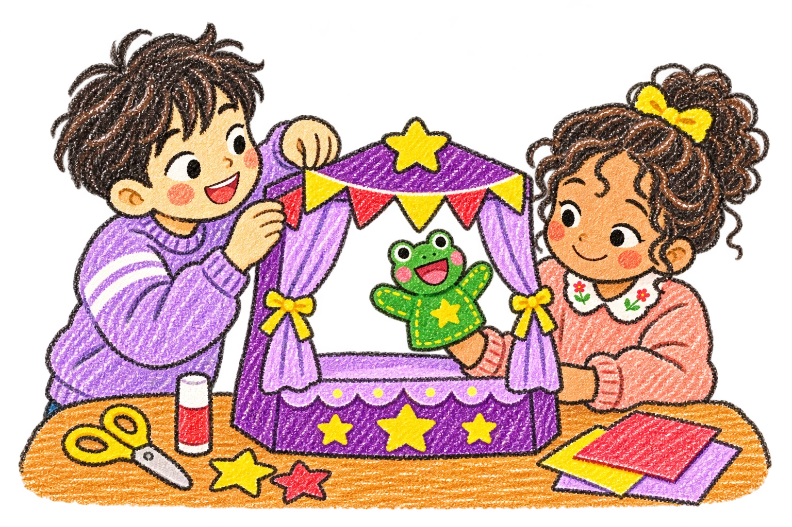
대전자운초
수업사례집교과 융합 프로젝트
초등학교 1–6학년

대전자운초
프로젝트 안내대전자운초서부다문화 클러스터에서는 이주배경학생과 비이주배경학생이 함께 배우도록 교과 수업을 설계했습니다. 한 차시에 어떤 배움을 돕고 싶은지에 따라 중점 프로그램을 정하였습니다.
학생이 자기 문화를 존중받고, 필요한 지원을 활용하며, 자신이 가진 강점으로 친구들과 협력하는 경험이 쌓일 때 주도적 적응력이 자라납니다.
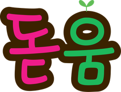
마음 돋움은 이주배경학생과 비이주배경학생이 일상의 수업에서 서로의 문화를 접하며 다문화 감수성을 기르는 프로그램입니다. 학생들은 같은 주제를 두고 생각이 다른 까닭을 서로의 생활 경험에 비추어 이해합니다.
프로젝트에서는 각자의 경험을 탐구의 출발점으로 삼습니다. 친구의 이야기에서 자신이 미처 생각하지 못한 점을 발견하고, 서로의 궁금증을 모아 함께 탐구할 질문을 정합니다. 이 과정에서 문화적 차이를 열린 태도로 받아들입니다.
연결되는 역량: 

실력 채움은 이주배경학생의 한국어 수준과 학습 경험에 맞추어 교과 학습에 참여할 기회를 보장하는 프로그램입니다. 교사는 학생이 교과 개념을 이해하고 자신의 생각을 표현할 수 있도록 수업에 쓰는 말과 자료, 참여 방법을 조정합니다.
학생은 자신의 생활과 이어지는 탐구 과제에서 목표를 세우고, 자신에게 알맞은 자료와 방법을 선택합니다. 탐구 과정과 결과를 돌아보며 더 필요한 도움을 살피고 다음 배움을 스스로 계획합니다.
연결되는 역량: 

강점 틔움은 이주배경학생의 이중언어 역량과 문화적 경험을 공동의 학습 자원으로 살리는 프로그램입니다. 학생은 친구들과 나눌 경험과 이를 표현할 방법을 스스로 선택하고, 공동의 과제에서 자신이 맡을 역할을 정합니다.
학생들은 서로의 생각을 발전시키고, 다양한 언어와 관점이 드러나는 결과물을 함께 만듭니다. 자신의 문화적 정체성을 살려 학급의 배움에 기여하는 경험은 지역과 세계 공동체에 관심을 갖고 참여하는 바탕이 됩니다.
연결되는 역량: 

프로젝트 안내대전자운초S.E.U.M.은 교과 융합 프로젝트를 설계할 때 사용하는 네 단계입니다.
학생의 처음 생각이 탐구할 질문이 되고, 친구와 함께 만든 결과가 다시 자신의 배움을 돌아보는 자료가 됩니다.
 et준비하기
et준비하기학생들은 주제에 관해 이미 알고 있는 것과 더 알고 싶은 것을 나눕니다. 서로 다른 경험에서 나온 궁금증을 모아 함께 탐구할 질문으로 다듬습니다. 이 질문을 중심으로 배움의 목표를 정하고, 무엇을 어떤 순서로 알아볼지 계획합니다.
 xplore탐구하기
xplore탐구하기탐구 질문에 맞는 방법으로 자료를 모으고, 여러 교과에서 배운 개념을 연결하여 그 의미를 해석합니다. 처음의 생각이 자료에서 찾은 근거와 맞는지 살펴보고, 새롭게 알게 된 점을 바탕으로 자신의 설명을 다듬습니다.
 nite협력하기
nite협력하기각자 알아낸 내용과 그 근거를 나누며 서로 다른 관점을 살펴봅니다. 의견이 다를 때에는 공동의 목표에 비추어 판단할 기준을 정합니다. 이를 바탕으로 실천할 방법을 선택하고, 각자의 강점을 살려 역할을 나누어 실행합니다.
전하려는 대상과 목적에 맞게 탐구 과정과 결과를 정리하여 나눕니다. 처음의 질문으로 돌아가 새롭게 알게 된 점과 달라진 생각을 살펴봅니다. 서로 주고받은 의견을 바탕으로 배운 내용을 생활 속 실천이나 다음 탐구로 이어 갑니다.
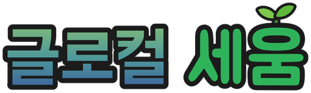
프로젝트 안내대전자운초| 차시 | 교과 | 본시 학습 주제 | 교과 역량 | 다문화 주도성 요소 |
|---|---|---|---|---|
| 1 | 바생·슬생 | 비밀 친구 놀이에서 느낀 점 나누기 | 창의적 사고·협력적 소통 역량 |  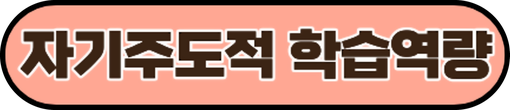 |
| 2 | 슬생·바생 | 다문화 친구 인형의 대사 꾸미기 | 심미적 감성·창의적 사고·협력적 소통 역량 | |
| 3~4 | 즐생·슬생 | 비밀 친구 인형 만들기 | 심미적 감성·창의적 사고·협력적 소통 역량 | |
| 5~6 | 즐생·슬생 | 친구들과 인형극 무대 만들기 | 문제해결 역량 | |
| 7 | 즐생 | 인형극을 공연하고 영상으로 촬영하기 | 지금-여기-우리 삶 | |
| 8 | 국어·즐생 | 인형극을 보고 인물의 행동과 생각 짐작하기 | 문화 향유 역량 | |
| 차시 | 교과 | 본시 학습 주제 | 교과 역량 | 다문화 주도성 요소 |
|---|---|---|---|---|
| 1 | 바생·국어 | 여러 나라에 대한 생각을 말과 그림으로 표현하기 | 문제해결 역량 | |
| 2 | 슬생·국어 | 한국의 생활 사진을 분류하며 한 나라의 다양한 모습 살펴보기 | 공동체 역량 | |
| 3 | 슬생·수학 | 여러 나라의 날씨와 생활 모습 살펴보기 | 지금-여기-우리 삶을 살아가는 힘 | |
| 4 | 슬생·국어 | 한 나라의 음식 다양성과 나라 간 공통점 찾기 | 공동체 역량 | |
| 5 | 슬생·국어 | 날씨와 음식 사진을 고르고 까닭 말하기 | 문제해결 역량 | |
| 6 | 슬생·국어 | 사진책으로 한 나라의 여러 모습 소개하기 | 문제해결 역량 | |
| 7 | 수학·국어 | 사진을 분류해 표와 ○그래프로 나타내기 | 정보처리·추론·의사소통 역량 | |
| 8 | 바생·국어 | 우리 반 사진책을 보며 처음 생각 돌아보기 | 의사소통·문제해결 역량 | |
| 차시 | 교과 | 본시 학습 주제 | 교과 역량 | 다문화 주도성 요소 |
|---|---|---|---|---|
| 1 | 수학 | 표와 그림그래프의 특징 비교하기 | 정보 활용 능력 | |
| 2 | 사회·수학 | 옛 교통수단을 이용한 사람들의 생활 모습 설명하기 | 정보 활용 능력 | |
| 3 | 수학 | 그림그래프에서 옛 교통수단에 관한 정보 찾기 | 의사소통 역량 | |
| 4 | 수학·사회·국어 | 그림과 단위를 정해 문화 자료를 그림그래프로 나타내기 | 문제해결·정보처리, 의사소통 역량 | |
| 5 | 수학·사회·국어 | 모둠별로 세계 문화 조사 자료 만들기 | 문제해결, 의사소통, 정보처리 역량 | |
| 6 | 수학 | 문화 자료를 조사해 그림그래프로 나타내기 | 정보처리, 의사소통 | |
| 7 | 수학·사회·국어 | 세계 문화 그림그래프를 해석하고 발표하기 | 정보처리, 의사소통 | |
| 차시 | 교과 | 본시 학습 주제 | 교과 역량 | 다문화 주도성 요소 |
|---|---|---|---|---|
| 1 | 사회·국어 | 도시의 뜻을 알아보고 방문 경험 나누기 | 정보 활용 능력 | |
| 2 | 사회 | 세계 도시를 살펴보고 탐험 계획 세우기 | 의사소통 및 협업 능력 | |
| 3 | 국어·사회 | 탐험 도시의 친구에게 우리 지역을 소개하는 편지 쓰기 | 공동체·대인 관계 역량 | |
| 4 | 수학·사회 | 두 도시의 기온을 조사해 꺾은선그래프로 나타내기 | 문제해결 역량 | |
| 5~6 | 미술·사회 | 탐험 도시의 랜드마크를 찰흙으로 표현하기 | 창의·융합 역량 | |
| 7 | 수학·사회 | 도시 공간의 다각형에서 대각선 알아보기 | 추론 역량 | |
| 8 | 수학·미술 | 다각형 모양 조각으로 도시 공간 표현하기 | 문제해결 역량 | |
| 차시 | 교과 | 본시 학습 주제 | 교과 역량 | 다문화 주도성 요소 |
|---|---|---|---|---|
| 1 | 사회 | 고려와 주변 나라의 교류가 문화에 미친 영향 살펴보기 | 정보처리, 의사소통 | |
| 2 | 미술 | 민화에 담긴 의미와 표현 방법 감상하기 | 심미적 감성 역량 | |
| 3 | 체육 | 우리나라 민속무용의 특징 설명하기 | — | |
| 4 | 실과 | 우리나라 음식문화를 알아보고 간단한 간식 만들기 | 문제해결 역량 | |
| 5 | 국어 | 독자와 매체를 고려해 한국 문화 체험 안내 글 쓰기 | 공동체·대인관계 | |
| 6 | 실과 | 디지털 도구로 한국 문화 체험 안내서 만들고 공유하기 | 기술적 문제 해결, 기술적 실천 |
| 차시 | 교과 | 본시 학습 주제 | 교과 역량 | 다문화 주도성 요소 |
|---|---|---|---|---|
| 1 | 사회 | 세계의 지형 경관과 생활 모습 조사해 발표하기 | 문제해결 역량 | |
| 2 | 사회·미술 | 기후에 따른 생활 모습을 조사하고 여행 가방 꾸리기 | 문제해결 역량 | |
| 3 | 미술 | 여러 나라 건축물의 특징 조사하기 | 심미적 감성 역량 | |
| 4 | 음악·사회 | 여러 나라의 음악을 감상하고 특징과 느낌 나누기 | 문제해결 역량 | |
| 5 | 수학 | 비례식의 성질을 이용해 여행 경비 계산하기 | 문제해결 역량 | |
| 6 | 국어·창체 | 여행 자료를 만들고 여행 크리에이터가 되어 발표하기 | 문제해결 역량 | |
세계 친구와 소통하는 인형극 꾸미기
| 차시 | 교과 | 학습 주제 | 교과 역량 |
|---|---|---|---|
| 1 | 바생·슬생 | 비밀 친구 놀이에서 느낀 점 나누기 | 창의적 사고·협력적 소통 역량 |
| 2 | 슬생·바생 | 다문화 친구 인형의 대사 꾸미기 | 심미적 감성·창의적 사고· 협력적 소통 역량 |
| 3~4 | 즐생·슬생 | 비밀 친구 인형 만들기 | 심미적 감성·창의적 사고· 협력적 소통 역량 |
| 5~6 | 즐생·슬생 | 친구들과 인형극 무대 만들기 | 문제해결 역량 |
| 7 | 즐생 | 인형극을 공연하고 영상으로 촬영하기 | 지금-여기-우리 삶 |
| 8 | 국어·즐생 | 인형극을 보고 인물의 행동과 생각 짐작하기 | 문화 향유 역량 |
설계 의도 본 프로젝트는 초등 1학년 학생들이 '세계 친구와 소통하는 인형극 꾸미기'라는 실제적이고 흥미로운 과제를 통해 상호문화주의적 태도를 함양하는 것을 목적으로 한다. 학생들은 세계 여러 나라의 문화와 생활 모습을 자기 주도적으로 탐색하고, 다양한 문화를 소통하는 상황을 인형극으로 표현하며 서로의 문화를 이해하고 존중하는 태도를 기를 수 있다. 또한 프로젝트 수행 과정에서 협력적으로 문제를 해결하고 창의적으로 의사소통하며, 다양한 문화적 상황에 능동적으로 대처하는 역량을 기를 수 있다.
| 융 합 과 목 | 즐생 | 움직이는 인형극 | 성취 기준 | [2즐04-03] 생각이나 느낌을 살려 전시나 공연 활동을 한다. |
|---|---|---|---|---|
| 바생 | 나만의 비밀 친구를 갖고 싶어 | [2바04-03] 여럿이 하는 활동에 관심을 갖고 자발적으로 협력한다. | ||
| 슬생 | 대사를 말해 봐 | [2슬04-03] 경험한 것 중에서 관심 있는 주제를 정하고 조사한다. | ||
| 국어 | 8. 느끼고 표현해요 | [2국05-03] 작품 속 인물의 모습, 행동, 마음을 상상하여 시, 노래, 이야기, 그림 등으로 표현한다. |
| 차시 | 프로젝트 단계 | 주요 학습 내용 | 관련 교과 | 학습자료 | |
|---|---|---|---|---|---|
| 1 |  et et준비하기 |  | 프로젝트 안내 및 계획하기 -‘비밀 친구 놀이’를 하고 느낀 점과 생각 나누기 | 바생, 슬생 | 프레젠테이션 |
| 2 |  xplore xplore탐구하기 | -다문화 친구 인형이 되어 대사 말하기 -세계 친구와 소통하는 인형극의 대사 꾸미기 | 슬생, 바생 | 프레젠테이션 | |
| 3 |  nite nite협력하기 | 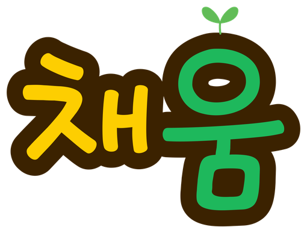 | 비밀 친구 인형 만들기 인형극에 어울리는 인형 만들기 | 즐생, 슬생 | 영상자료, 채색도구 |
| 4 | |||||
| 5 | -인형극 무대의 장소에 대해 이야기 나누기 -인형극의 무대를 만들고 인형극 준비하기 | ||||
| 6 | |||||
| 7 | ake 표현하기 | 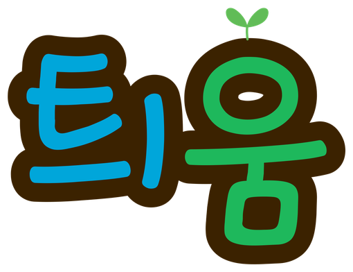 | -인형극 관람 예절을 알고 인형극을 공연하고 영상으로 촬영하기 -운영 과정에서 느낀 점과 다문화 이해에 대한 소감 발표하기 | 즐생, 바생 | 프레젠테이션 |
| 8 | -인형극 공연 영상을 보고 생각이나 느낌 정리하기 -인물의 말과 행동을 보고 생각을 짐작하고 자신의 생각 정리하기 | 국어, 즐생 | 프레젠테이션 | ||
| ✔다양한 나라의 문화와 생활 방식의 차이를 이해하는 경험을 제공하여 다문화적 감수성과 포용력 함양하기 |
|---|---|
✔세계 여러 나라의 문화와 생활 모습을 스스로 탐색하고, 필요한 정보를 수집하는 과정을 통해 자기주도적 학습 역량 신장하기 ✔인형극의 주제와 대본, 표현 방법을 주도적으로 계획하고 실행하는 경험을 통해 자기주도적 문제해결력 기르기 | |
✔세계 여러 나라의 문화를 이해하고 존중하는 경험을 통해 세계 시민으로서의 개방적인 태도와 공동체 의식 함양하기 ✔인형극을 통해 문화 다양성의 가치를 공유하고 서로 다른 문화가 공존하는 사회를 만드는 데 참여하는 글로컬 시민성 기르기 | |
✔문화 차이나 다양한 문화적 상황을 분석하고 해결 방안을 모색하는 경험을 통해 능동적인 문제해결력 기르기 ✔다양한 문화적 상황에서 상대방의 관점을 고려하고 적절하게 소통하는 경험을 통해 새로운 환경에 주도적으로 적응하는 능력 기르기 |
| 평가내용 | 평가방법 | 매우 잘함 | 잘함 | 보통 | |
|---|---|---|---|---|---|
①비밀 친구 놀이와 미션에 참여하기 [2바04-03] | 관찰법 | 차별 없는 태도로 다문화 비밀 친구 놀이와 미션에 적극적인 태도로 참여할 수 있다. | 비밀 친구 놀이 활동에 성실하게 참여할 수 있다. | 교사나 친구의 도움을 받아 비밀 친구 놀이 활동에 참여할 수 있다. | |
②다문화 친구 인형이 되어 세계의 인사를 나누고 대사 주고받기 [2즐04-03] | 관찰법 | 다문화 친구 인형의 특징을 살려 여러 나라의 인사와 문화를 담은 대사를 실감 나게 표현할 수 있다. | 다문화 친구 인형이 되어 대사를 꾸미고 표현 활동에 참여할 수 있다. | 교사의 도움을 받아 다문화 친구 인형 대사를 말할 수 있다. | |
③~④움직이는 비밀 친구 인형 만들기 [2즐04-03] | 관찰법 | 비밀 친구 인형을 움직이는 방법을 활용하여 꼼꼼하게 잘 만들 수 있다. | 비밀 친구 인형을 비교적 성실하고 꼼꼼하게 만들 수 있다. | 교사나 친구의 도움을 받아 비밀 친구 인형을 만들 수 있다. | |
⑤~⑥친구들과 협력해 인형극 무대 만들기 [2즐04-03] | 관찰법 | 친구들과 협력하여 인형극 무대를 잘 만들 수 있다. | 친구들과 협력하여 인형극 무대를 완성할 수 있다. | 타인의 도움을 받아 인형극 무대를 만들 수 있다. | |
⑦바람직한 태도로 다른 모둠의 인형극 관람하기 [2즐04-03] | 관찰법 | 다른 모둠의 인형극을 관람하는 태도가 매우 진지하고 바람직하다. | 다른 모둠의 인형극을 관람하는 태도가 비교적 진지하고 바람직하다. | 다른 모둠의 인형극을 관람하는 태도가 중요함을 안다. | |
⑧연극에서 인물의 말과 행동을 보고 생각 짐작하기 [2국05-03] | 관찰법 | 연극을 보고 인물의 생각을 말과 행동을 통해 짐작할 수 있다. | 연극을 보고 인물의 생각을 말 또는 행동을 통해 짐작할 수 있다. | 연극을 보고 인물의 생각을 말과 행동을 통해 짐작하지 못한다. | |
| 이주배경학생 평가 시 유의점 | |||||
⑦ 경청·박수·친구 발표 존중 등 비언어적 행동을 살피고, 다양한 문화 경험을 나누는 모습도 긍정적으로 평가한다. | |||||
융합과목 | 통합 | 대 상 | 1학년 3반 | 프로젝트 단계 | et (준비하기) | 지도교사 | |||||
|---|---|---|---|---|---|---|---|---|---|---|---|
프로젝트 | 비밀 친구 (1/8) | 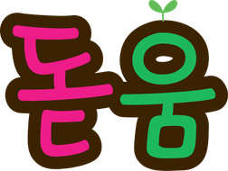 | |||||||||
성취기준 | [2바04-03] 여럿이 하는 활동에 관심을 갖고 자발적으로 협력한다. | ||||||||||
학습목표 | 비밀 친구 놀이를 하고 느낀 점을 나눌 수 있다. | ||||||||||
수업전략 | 수업모형 | 표현놀이 중심 학습 모형 | 교과 역량 | 창의적 사고 역량, 협력적 소통 역량 | |||||||
다문화 주도성 |  |  | |||||||||
☑ | ☑ | ☑ | ☑ | ||||||||
단계 (시간) | 학습요소 | 교수·학습 활동 | 자료(▶) 및 유의점(☞) |
|---|---|---|---|
준비하기 (5′) | 동기유발 | ▣ 학습동기 유발 ◦ 몰래 도와주는 비밀 친구 이야기 나누기 ∙전래동화 ‘우렁각시’에서 우렁이는 주인공을 어떻게 도왔나요? ∙ 친구가 모르게 도와주었던 일이 있나요? ∙ 만약 친구가 몰래 친절을 베풀어 준다면 어떤 기분이 들까요? | ▶ 우렁각시 동영상 자료 |
공부할 문제 파악 | ▣ 공부할 문제 확인 ♣ 비밀 친구 놀이에 참여해 봅시다. | ||
학습 활동 안내 | ▣ 학습 활동 안내 【활동1】 공부할 내용 살펴보기 【활동2】 비밀 친구 정하기 【활동3】 비밀 친구 놀이하기 | ||
탐색하기 (15′) | 프로젝트 수업 흐름 살펴보기 | ▣ 【활동1】 공부할 내용 살펴보기 ◦ 프로젝트 수업의 흐름 살펴보기 ∙ 우리가 이번 프로젝트에서 공부할 내용을 살펴보도록 합시다. ∙ 1차시에서는 비밀 친구 놀이를 통해 느낀 점을 나눠보고, 2차시에서는 여러 나라를 소개하는 인형극의 대사를 꾸며봅니다. 3~6차시에서는 직접 인형극에 어울리는 인형을 만들고, 인형극을 해보고, 서로 감상해 봅시다. 7~8차시에서는 소감을 발표하고, 촬영한 영상을 다시 보며 제목을 붙여봅시다. ∙ 수업을 위해 어떤 것을 준비하면 좋을지 이야기 나눠봅시다. | ▶ 프로젝트 수업 흐름 그림 자료 ☞ 학생 눈높이에 맞추어 그림 자료를 활용해 프로젝트 흐름을 쉽게 이해하도록 설명한다. |
비밀 친구 정하기 | ▣ 【활동2】 비밀 친구 정하기 ◦ 비밀 친구 뽑기 ∙ 우리 반 친구들의 이름을 적은 쪽지를 뽑아 나의 비밀 친구를 확인해 봅시다. ◦ 비밀 미션 정하기 ∙ 친구가 좋아하는 국가나 문화를 알아봅시다. ∙ 여러 나라 언어로 따뜻한 인사말 전달하는 미션을 해봅시다. ∙ 친구의 장점과 멋진 점을 몰래 칭찬합니다. ◦ 비밀 친구 놀이 약속 정하기 ∙ 차별하지 않고 비밀을 지켜 친구를 도와주도록 합니다. | ▶ 뽑기 상자, 미션 카드 ☞ 문화적 배경이나 성별, 외모에 대한 편견 없이 모든 친구와 반갑게 놀이하도록 분위기를 조성한다. | |
표현놀이하기 (15‘) | 비밀 친구 놀이하기 | ▣ 【활동3】 비밀 친구 놀이하기 ◦ 비밀 친구에게 줄 세계 인사말 응원 카드 꾸미기 ∙ 비밀 친구에게 전달할 세계 인사말 응원 카드를 꾸며봅시다. ∙ 다양한 세계 인사말을 보고, 마음에 드는 문구로 응원 카드를 만들어 봅시다. ∙ 오늘 아무도 모르게 비밀 친구 사물함 속에 몰래 넣어봅시다. | ▶ 다국어 인사말 응원 카드 양식, 채색 도구 |
느낌 나누기 (5′) | 학습내용 정리하기 | ▣ 학습내용 정리 ◦ 비밀 친구 놀이 느낀 점 나누기 ∙ 비밀 친구를 정하고 몰래 도와줄 준비를 하면서 어떤 마음이 들었나요? ∙ 서로 존중하며 따뜻한 비밀 친구가 되기 위한 나의 다짐을 발표해 봅시다. ∙ 수업을 하면서 생각한 점이나 느낀 점을 이야기해 볼까요? | ☞ 놀이 참여 과정에서 느낀 설렘과 타인에 대한 배려를 긍정적으로 격려한다. |
차시예고 | ▣ 차시 예고 ♣ 여러 나라를 소개하는 인형극 대사를 꾸며봅시다. |
융합과목 | 통합 | 대 상 | 1학년 3반 | 프로젝트 단계 | xplore (탐구하기) | 지도교사 | |||||
|---|---|---|---|---|---|---|---|---|---|---|---|
프로젝트 | 비밀 친구 (2/8) | 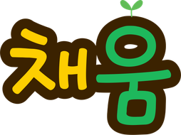 | |||||||||
성취기준 | [2즐04-03] 생각이나 느낌을 살려 전시나 공연 활동을 한다. | ||||||||||
학습목표 | 다문화 친구 인형이 되어 대사를 꾸며 말할 수 있다. | ||||||||||
수업전략 | 수업모형 | 표현놀이 중심 학습 모형 | 교과 역량 | 심미적 감성 역량, 창의적 사고 역량, 협력적 소통 역량 | |||||||
다문화 주도성 | | | |||||||||
☑ | ☑ | ☑ | ☑ | ||||||||
단계 (시간) | 학습요소 | 교수·학습 활동 | 자료(▶) 및 유의점(☞) |
|---|---|---|---|
준비하기 (5′) | 동기유발 | ▣ 학습동기 유발 ◦ 다양한 세계 친구 인형의 인사 목소리 듣기 ∙여러 나라 의상을 입은 인형들이 각국의 언어로 인사하는 영상을 감상해 봅시다. ∙ 인형 친구들이 어떤 나라 언어로 인사를 건넸나요? | ▶ 세계 여러 나라 인사 동영상 자료 |
공부할 문제 파악 | ▣ 공부할 문제 확인 ♣ 다문화 친구 인형이 되어 대사를 꾸며 말해 봅시다. | ||
학습 활동 안내 | ▣ 학습 활동 안내 【활동1】 다문화 친구 인형과 인사 나누기 【활동2】 여러 나라를 소개하는 대사 꾸미기 【활동3】 다문화 친구 인형이 되어 대사 주고받기 | ||
탐색하기 (15′) | 여러 나라 언어로 인사 나누기 | ▣ 【활동1】 다문화 친구 인형과 인사 나누기 ◦ 다문화 인형 친구들과 인사 나누기 ∙ 여러 나라(베트남, 몽골, 일본, 미국 등)인형의 모습과 전통 의상을 관찰해 봅시다. ◦ 각국 인사말을 실감나게 표정과 목소리로 흉내 내기 ∙ "신짜오(베트남)", "새인 바이나 우(몽골)", "곤니찌와(일본)", "헬로(미국)" 등 인형 친구의 목소리가 되어 인사해 봅시다. ∙ 다양한 언어로 인사해 보니 어떤 생각이 드나요? | ▶ 세계 여러 나라 모습을 한 손가락 인형 ☞ 피부색, 옷차림, 언어가 달라도 모두 반가운 친구라는 점을 인식시킨다. |
다문화 인형 대사 꾸미기 | ▣ 【활동2】 여러 나라를 소개하는 대사 꾸미기 ◦ 인형 친구가 소개할 자기 나라 문화 생각하기 ∙ "안녕! 나는 베트남에서 온 친구야. 쌀국수를 좋아해!", "반가워! 나는 몽골의 넓은 초원에서 왔어!"처럼 인형 친구의 나라를 간단하게 소개하는 대사를 생각해 봅시다. ◦ 활동지에 인형극 대사 채우기 ∙ 활동지 빈칸에 인사말, 자기 소개 내용, 좋아하는 문화를 넣어 짧은 문장을 완성해 봅시다. | ▶ 다문화 인형극 대사 꾸미기 활동지 ☞ 글씨 쓰기가 서툰 학생은 그림이나 단순한 낱말로 표현하도록 지도한다. | |
표현 놀이하기 (15‘) | 다문화 인형 역할극하기 | ▣ 【활동3】 다문화 친구 인형이 되어 대사 주고받기 ◦ 짝과 함께 다문화 인형 역할극 하기 ∙ 짝과 서로 다른 나라 인형을 정하고 대사 연습해 봅시다. ∙ 목소리 크기와 표정, 몸짓을 살려 인형의 느낌 표현해 봅시다. ◦ 친구의 인형 대사를 따뜻하게 받아주기 ∙ 친구 인형이 말할 때 "반가워!", "멋지다!" 하고 답해 줍시다. | ☞ 서로 다른 문화적 특징을 놀리거나 희화화하지 않고 정중하게 반갑게 맞이하도록 안내한다. |
느낌 나누기 (5′) | 학습내용 정리하기 | ▣ 학습내용 정리 ◦ 활동 느낀 점 및 소감 나누기 ∙ 주고 받은 대사 중에 기억에 남는 말을 발표해 봅시다. ∙ 다문화 친구 인형이 되어 이야기해 보니 어떤 마음이 들었나요? ∙ 오늘 공부하면서 생각한 점이나 느낀 점을 이야기해 볼까요? | ☞ 활동하면서 느낀 점과 소감을 수용적인 분위기 속에서 나누도록 조성한다. |
차시예고 | ▣ 차시 예고 ♣ 비밀 친구 인형을 만들어 봅시다. |
융합과목 | 통합 | 대 상 | 1학년 1반 | 프로젝트 단계 | nite (협력하기) | 지도교사 | |||||
|---|---|---|---|---|---|---|---|---|---|---|---|
프로젝트 | 비밀 친구 (3-4/8) | 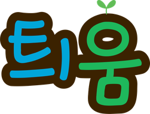 | |||||||||
성취기준 | [2즐04-03] 생각이나 느낌을 살려 전시나 공연 활동을 한다. | ||||||||||
학습목표 | 비밀 친구 인형을 만들 수 있다. | ||||||||||
수업전략 | 수업모형 | 표현 중심 학습 모형 | 교과 역량 | 심미적 감성 역량, 창의적 사고 역량, 협력적 소통 역량 | |||||||
다문화 주도성 | | | |||||||||
☑ | ☑ | ☑ | ☑ | ||||||||
단계 (시간) | 학습요소 | 교수·학습 활동 | 자료(▶) 및 유의점(☞) |
|---|---|---|---|
발상하기 (5′) | 동기유발 | ▣ 학습동기 유발 ◦ 인형극을 보았던 경험 떠올리기 ∙인형극을 보았던 경험을 떠올리고 이야기해 볼까요? ∙ 인형극에서 인형의 생김새는 어땠는지 이야기해 볼까요? | ▶ 피노키오 인형극 동영상 자료 |
공부할 문제 파악 | ▣ 공부할 문제 확인 ♣ 비밀 친구 인형을 만들어 봅시다. | ||
학습 활동 안내 | ▣ 학습 활동 안내 【활동1】 ‘피노키오’ 노래를 듣기 【활동2】 움직이는 인형을 만드는 방법 말하기 【활동3】 비밀 친구 인형 만들기 | ||
구상하기 (20′) | 표현 방법 탐색 및 아이디어 구상 | ▣ 【활동1】 ‘피노키오’ 노래를 듣기 ◦ ‘피노키오’ 노래를 듣고 느낀 점 말하기 ∙ ‘피노키오’ 이야기에 대해 알고 있는 것을 이야기해 볼까요? ∙ ‘피노키오’ 노래를 듣고 느낀 점을 이야기해 볼까요? ◦ 피노키오 같은 친구가 있다면 어떨지 이야기 나누기 ∙ ‘피노키오’처럼 말하고 움직이는 인형 친구가 있다면 어떨지 말해 볼까요? ∙ 어떤 인형 친구를 만들고 싶나요? | ▶ ‘피노키오’ 음원 및 인형극 영상 ☞ 노래를 감상한 뒤 ‘피노키오’ 인형극 영상을 다시 짧게 보여 주면서 움직이는 인형을 만드는 방법을 생각해 보도록 한다. |
표현하기 (45‘) | 비밀 친구 인형 제작 및 조작 | ▣ 【활동2】 움직이는 인형을 만드는 방법 말하기 ◦ 움직이는 인형을 만드는 방법 말하기 ∙ 움직이는 인형을 어떻게 만들 수 있을지 이야기를 나눠 볼까요? ∙ 손가락을 끼우는 인형은 어떻게 만들 수 있을까요? ∙ 막대기를 달아서 움직이는 인형은 어떻게 만들 수 있을까요? ∙ 종이 봉투 위에 인형을 만들어 붙여서 손을 넣어 조작하는 인형을 만들 때는 어떤 점에 유의해야 할까요? | ☞ 만들기 과정에서 어려움이 생기면 도구를 바꾸거나 교사의 조언을 받아 주도적으로 해결하도록 한다. |
▣ 【활동3】 비밀 친구 인형 만들기 ◦ 자신만의 비밀 친구 인형 제작하기 ∙ 비밀 친구 인형을 어떻게 만들었나요? ∙ 어떤 아이디어를 생각했는지 말해 볼까요? ∙ 인형의 이름은 무엇인가요? | ▶ 도움 자료 ④, 도움 자료 ⑤, 채색 도구, 가위, 풀, 색종이, 나무 막대, 할핀, 종이 봉투 등 | ||
감상 및 정리하기 (10′) | 작품 감상 및 상호 칭찬 | ▣ 학습내용 정리 ◦ 비밀 친구 인형 감상하기 ∙ 모둠 전시회를 열어 비밀 친구 인형을 감상해 봅시다. ∙ 친구들이 만든 비밀 친구 인형의 잘된 점을 칭찬해 봅시다. ◦ 생각이나 느낌 이야기하기 ∙ 수업을 하면서 생각한 점이나 느낀 점을 이야기해 볼까요? | ☞ 결과물의 완성도 뿐만 아니라 표현 과정에서 나타난 창의성과 개성을 칭찬하도록 유도한다. |
차시예고 | ▣ 차시 예고 ♣ 인형극 무대를 만들어 봅시다. |
융합과목 | 즐거운 생활 슬기로운 생활 | 대 상 | 1학년 2반 | 프로젝트 단계 | nite (협력하기) | 지도교사 | |||||
|---|---|---|---|---|---|---|---|---|---|---|---|
프로젝트 | 세계 친구와 소통하는 인형극 꾸미기 (5-6/8) | ||||||||||
성취기준 | [2즐04-03] 생각이나 느낌을 살려 전시나 공연 활동을 한다. | ||||||||||
학습목표 | 인형극 무대를 친구들과 만들 수 있다. | ||||||||||
수업전략 | 수업모형 | 문제해결 학습 모형 | 교과 역량 | 문제해결 역량 | |||||||
다문화 주도성 | | | |||||||||
☑ | ☑ | ☐ | ☑ | ||||||||
단계 (시간) | 학습요소 | 교수·학습 활동 | 자료(▶) 및 유의점(☞) |
|---|---|---|---|
문제 확인하기 (5′) | 동기유발 | ▣ 학습동기 유발 ◦ 짧은 인형극 감상하고 이야기 나누기 ∙ ‘헨젤과 크레텔’ 인형극을 보고 배경 무대를 살펴 봅시다. ∙ 인형극에서 무대를 어떻게 꾸몄는지 이야기해 봅시다. | ▶ 인형극 동영상 |
공부할 문제 파악 | ▣ 공부할 문제 확인 ♣ 인형극 무대를 친구들과 만들어 봅시다. | ||
문제해결방법 탐색하기 (10′) | 무대를 만드는 방법 알아보기 | ▣ 【활동1】 인형극 무대를 만드는 방법 알아보기 ◦ 인형극 무대를 만드는 방법 알아보기 ∙ 친구들과 무대를 만들 때 고려할 점을 알아 볼까요? ∙ 친구들과 인형극 무대를 만드 방법을 이야기해 봅시다. | ▶ 상자, 도화지, 색종이, 채색 도구 ☞ 인형극의 내용을 고려하여 무대를 만들 수 있도록 한다. |
문제 해결하기 (60‘) | 인형극 무대 만들기 | ▣ 【활동2】 인형극 무대 만들기 ◦ 친구들과 협력하여 인형극 무대 만들기 ∙ 모둠별로 인형극 무대의 배경을 정하여 꾸며 봅시다. ∙ 해당 나라를 소개하는 내용으로 무대 배경을 꾸며 봅시다. ∙ 학교 배경을 그리고 세계지도를 붙여 봅시다. ∙ 소개하는 나라의 국기를 그려 넣어 봅시다. ∙ 인형극 무대를 색칠하고 꾸며서 완성해 봅시다. ∙ 인형의 동선에 따라서 출입문을 그려 봅시다. | |
평가 하기 (5′) | 학습내용 정리하기 | ▣ 학습내용 정리 ◦ 완성된 다른 모둠의 인형극 무대 감상하기 ∙ 다른 모둠의 인형극 무대에서 잘한 점을 칭찬해 봅시다. ◦ 배운 내용과 느낀 점 이야기하기 ∙ 인형극 무대를 만들면서 새롭게 알게된 점이나 느낀 점을 말해 봅시다. | |
▣ 차시 예고 ♣ 친구들과 인형극 공연을 해 봅시다. |
일 시 | 대 상 | 1학년 4반 | 교과서 | 이야기 50(7/8) | 지도교사 | ||||||||||
|---|---|---|---|---|---|---|---|---|---|---|---|---|---|---|---|
프로젝트 | 세계 친구와 소통하는 인형극 꾸미기 (7/8) |  ake ake | |||||||||||||
본시 성취기준 | [2즐04-03] 생각이나 느낌을 살려 전시나 공연 활동을 한다. | 본시 관련교과 | 즐생, 바생 | ||||||||||||
학습목표 | 인형극을 공연하고 영상을 촬영할 수 있다. | ||||||||||||||
수업 모형 | 이야기 모형 | 교과 역량 | 지금-여기-우리 삶 | ||||||||||||
수업전략 | 수업 의도 | - 학생들이 세계 여러 나라의 다양한 문화적 상황을 인형극으로 표현하고 해결 방법을 탐색하며 문화 다양성 존중의 태도를 기를 수 있다. - 교과서에서 여러 나라의 문화를 알아보는 활동도 의미 있지만, 문화적 다양성을 소통하는 인형극을 직접 제작하는 과정은 학생들에게 더욱 흥미로운 학습 경험이 된다. 이를 통해 다문화 수용성과 협력적 소통 역량을 기르도록 한다. | |||||||||||||
다문화 주도성 | | | |||||||||||||
☑ | ☐ | ☑ | ☐ | ||||||||||||
이주배경학생 지도계획 | - 이주배경학생의 나라에서 발생할 수 있는 다양한 문화적 요소를 인형극 대사로 표현할 수 있도록 사전 활동을 계획하며, 본 학급의 이주배경학생들의 한국어 수준은 비이주배경학생들과 비슷함을 파악하고 동일한 자료를 준비한다. | ||||||||||||||
단계 (시간) | 학습요소 | 교수·학습 활동 | 자료(▶) 및 유의점(☞) |
|---|---|---|---|
이야기 열기 (5′) | 동기유발 | ▣ 학습동기 유발 ◦ 인형극 ‘키르기스스탄에 놀러갔어요.’ 공연하기 ∙ 인형극에서 선생님이 왜 곤란해 했는지 이야기해 봅시다. - 배가 부른데 아르슬란이 계속 음식을 권해서입니다. ∙ 아르슬란이 알려준 키르기스스탄의 문화는 무엇인가요? - 빵은 포크말고 두 손으로 먹습니다. - 의자에 발을 올리지 않습니다. | ▶ 프레젠테이션 ☞ 문화적 차이에서 생긴 오해와 이를 해결하는 방법에 관심을 갖도록 유도한다. |
공부할 문제 파악 | ▣ 공부할 문제 확인 ♣ 친구들과 인형극 공연을 해 봅시다. | ||
학습활동 안내 | ▣ 학습활동 안내 【활동1】 인형극 관람 예절 알기 【활동2】 하나핑 인형극 공연하기 【활동3】 연극이 끝나고 난 뒤 | ||
이야기 하기 (5′) | 주제 경험하기 | ▣ 【활동1】 인형극 관람 예절 알기 ◦ 인형극 관람 예절에 대해 알아보기 ∙ 인형극을 관람할 때 어떤 예절을 지켜야 할까요? - 공연 중에는 말을 하지 않습니다. - 다른 사람의 관람을 방해하지 않습니다. - 공연이 끝나면 친구들에게 박수로 응원해 줍니다. ∙ 인형극 관람 예절을 지키는 것은 왜 중요할까요? - 공연하는 사람과 관람하는 사람을 배려하기 위해입니다. ◦ 인형극을 살펴볼 기준 이야기하기 ∙ 인형극에서 어떤 것을 재미있게 관람하고 싶은가요? - 친구들이 만든 인형과 무대를 보고 싶습니다. - 친구들이 표현한 다양한 문화를 느끼고 싶습니다. | ▶ 프레젠테이션 |
단계 (시간) | 학습요소 | 교수·학습 활동 | 자료(▶) 및 유의점(☞) |
|---|---|---|---|
이야기 하기 (25′) | 주제 활동 및 인형극 관람하기 인형극 이야기 생성하기 | ▣ 【활동2】 하나핑 인형극 공연하기 ◦ 모둠별로 준비한 인형극 공연하기 ∙ 인물 간 대화와 행동을 통해 소통 과정을 인형극으로 표현해 봅시다. - 일본, 미국에서 나타나는 문화적 상황을 표현합니다. ∙ 관람하는 친구들은 재미있게 표현된 부분을 찾아보며 인형극을 관람해 봅시다. - 세계 여러 나라의 다양한 문화를 느낄 수 있어서 재밌었습니다. | ▶ 프레젠테이션, 인형극 소품 ☞ 관람하는 학생들은 관람 예절을 지키며 공연을 관람할 수 있도록 한다. |
▣ 【활동3】 연극이 끝나고 난 뒤 ◦ 하나핑 인형극 속 인물 인기투표하기 ∙ 인형극에서 발표를 제일 잘한 친구를 투표해 봅시다. - ‘노아’가 큰 목소리로 인형 연기를 실감나게 했습니다. - ‘호윤’이가 인형을 잘 만들고 대사를 잘 전달했습니다. ◦ 인형극 내용에 어울리는 제목 붙이기 ∙ 인형극 내용에 어울리는 새로운 제목을 지어 봅시다. - 인형극에서 세계 여러 나라의 문화 특징이 나오기 때문에 ‘서로 달라도 이해해요!’라고 짓고 싶습니다. | ▶ 육각판, 보드마카 ☞ 인기투표는 친구 간의 경쟁보다 서로의 노력과 장점을 발견하고 격려하는 데 중점을 둔다. | ||
이야기 맺기 (5′) | 학습내용 정리 | ▣ 학습내용 정리하기 ◦ 배운 내용 정리하기 ∙ 오늘 배운 내용과 인형극을 공연한 소감을 말해 봅시다. - 인형극을 통해 여러 나라의 문화가 서로 다르다는 것을 알게 되었고, 다른 나라의 문화를 더 알아보고 싶습니다. - 문화 차이로 오해가 생겼을 때 서로의 문화를 이해하고 존중하는 태도가 중요하다는 것을 알게 되었습니다. | ☞ 일상생활에서도 서로 다른 문화를 이해하고 배려하는 태도를 실천하도록 한다. |
▣ 차시 예고 ♣ 연극을 보고 인물의 행동과 생각을 알아 봅시다. |
판서 계획 | 움직이는 인형극 | 자석 육각판 | |
|---|---|---|---|
♣ 친구들과 인형극 공연을 해 봅시다. |
| ||
【활동1】 인형극 관람 예절 알기 【활동2】 하나핑인형극 관람하기 【활동3】 연극이 끝나고 난 뒤 |
평가 계획 | 평가내용 | 척도 | 채점 기준 | 평가 방법 |
|---|---|---|---|---|
다른 모둠의 인형극을 관람하는 태도가 바람직한가? | 매우 잘함 | 다른 모둠의 인형극을 관람하는 태도가 매우 진지하고 바람직하다. | 관찰법 | |
잘함 | 다른 모둠의 인형극을 관람하는 태도가 비교적 진지하고 바람직하다. | |||
보통 | 다른 모둠의 인형극을 관람하는 태도가 중요함을 안다. | |||
이주배경학생 평가 시 유의점 | 이주배경학생이 자국 문화에 대한 친숙함이나 한국어 이해 수준에 따라 관람 태도가 다르게 나타날 수 있으므로, 언어적 표현뿐 아니라 경청, 박수, 타인의 발표 존중 등 비언어적 행동을 함께 살펴 평가하고, 다양한 문화적 경험을 나누는 모습을 긍정적으로 반영한다. | |||


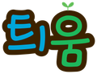
예시)
내가 만든
인형극 제목
<서로 달라도
이해해요! >
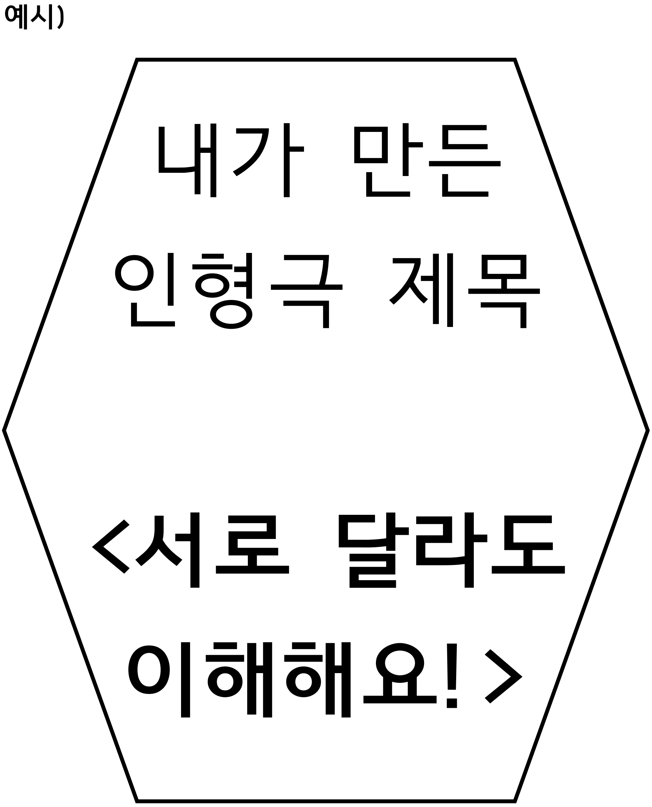
융합과목 | 국어, 즐거운 생활 | 대 상 | 1학년 | 프로젝트 단계 | ake (표현하기) | 지도교사 | |||||
|---|---|---|---|---|---|---|---|---|---|---|---|
프로젝트 | 세계 친구와 소통하는 인형극 꾸미기(8/8) | ||||||||||
성취기준 | [2국05-03] 작품 속 인물의 모습, 행동, 마음을 상상하여 이야기로 표현한다. | ||||||||||
학습목표 | 연극을 보고 인물의 행동과 생각을 알 수 있다. | ||||||||||
수업전략 | 수업모형 | 반응 중심 학습 모형 | 교과 역량 | 문화 향유 역량 | |||||||
다문화 주도성 | | | |||||||||
☑ | ☑ | ☑ | ☐ | ||||||||
단계 (시간) | 학습요소 | 교수·학습 활동 | 자료(▶) 및 유의점(☞) |
|---|---|---|---|
반응 형성하기 (5′) | 동기유발 | ▣ 학습동기 유발 ◦ 촬영한 ‘하나핑 인형극’의 일부분 관람하기 ∙ 인형극 속 인물의 생각을 짐작해 봅시다. | ▶ 인형극 영상자료 |
공부할 문제 파악 | ▣ 공부할 문제 확인 ♣ 연극을 보고 인물의 행동과 생각을 알아 봅시다. | ||
반응 명료화 하기 (10′) | 연극 감상하기 | ▣ 【활동1】 연극 내용 정리하기 ◦ 연극 ‘요술 항아리’ 감상하기 ∙ ‘요술 항아리’와 비슷한 내용을 본 적 있나요? ∙ 어떤 인물이 등장하는지 생각하며 연극을 감상해 봅시다. ∙ 일이 일어난 차례대로 붙임딱지를 붙여 봅시다. | ▶ 국어 붙임 9 나권 ☞ 인물과 사건의 흐름에 주목하여 감상하도록 안내한다. |
반응 심화하기 (20‘) | 인물의 말과 행동을 보고 생각 짐작하기 | ▣ 【활동2】 인물의 생각 짐작하기 ◦ 인물의 말과 행동을 보고 생각 짐작하기 ∙ ‘요술 항아리’에서 인물의 행동을 찾아 봅시다. ∙ ‘요술 항아리’에 나오는 인물의 말과 행동을 보고 생각 풍선에 인물의 생각을 붙여 봅시다. | |
인물에 대한 자신의 생각 정리하기 | ▣ 【활동3】 자신의 생각 정리하기 ◦ 인물에 대한 자신의 생각 정리하기 ∙ 하나핑 인형극의 인물을 골라 하고 싶은 말을 써 봅시다. ∙ 인물의 말과 행동을 떠올리며 하고 싶은 말을 써 봅시다. ∙ 인물에게 하고 싶은 말을 쓴 뒤 친구들과 비교해 봅시다. ∙ 자신이 그 인물이라면 어떻게 했을지 이야기해 봅시다. | ☞ 다양한 해석이 나올 수 있음을 인정하고 서로의 의견을 존중하도록 한다. | |
반응 일반화 하기 (5′) | 학습내용 정리하기 | ▣ 학습내용 정리 ◦ 배운 내용과 느낀 점 이야기하기 ∙ 인물의 생각은 무엇을 보고 알 수 있는지 말해 봅시다. | |
▣ 차시 예고 ♣ 이야기를 읽고 생각이나 느낌을 나눠 봅시다. |
여러 나라의 생활 사진책 만들기
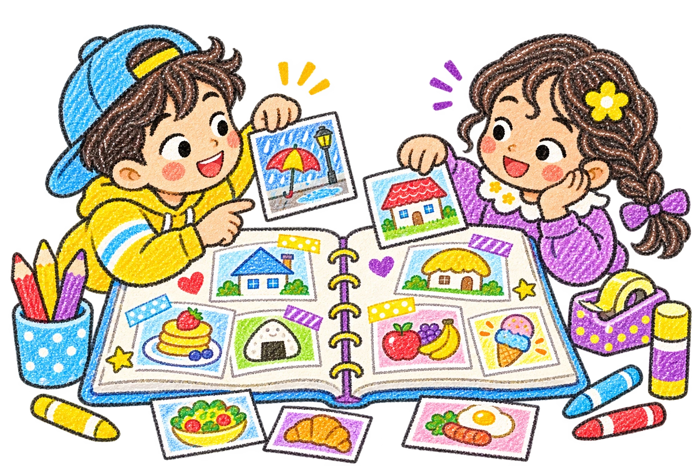
| 차시 | 교과 | 학습 주제 | 교과 역량 |
|---|---|---|---|
| 1 | 바생·국어 | 여러 나라에 대한 생각을 말과 그림으로 표현하기 | 문제해결 역량 |
| 2 | 슬생·국어 | 한국의 생활 사진을 분류하며 한 나라의 다양한 모습 살펴보기 | 공동체 역량 |
| 3 | 슬생·수학 | 여러 나라의 날씨와 생활 모습 살펴보기 | 지금-여기-우리 삶을 살아가는 힘 |
| 4 | 슬생·국어 | 한 나라의 음식 다양성과 나라 간 공통점 찾기 | 공동체 역량 |
| 5 | 슬생·국어 | 날씨와 음식 사진을 고르고 까닭 말하기 | 문제해결 역량 |
| 6 | 슬생·국어 | 사진책으로 한 나라의 여러 모습 소개하기 | 문제해결 역량 |
| 7 | 수학·국어 | 사진을 분류해 표와 ○그래프로 나타내기 | 정보처리·추론·의사소통 역량 |
| 8 | 바생·국어 | 우리 반 사진책을 보며 처음 생각 돌아보기 | 의사소통·문제해결 역량 |
설계 의도 본 프로젝트는 초등 2학년 학생들이 '여러 나라의 생활 사진책 만들기'라는 실제적이고 흥미로운 과제를 통해, 한 장면으로 나라 전체를 판단하지 않는 다문화 수용적 태도를 기르는 것을 목적으로 한다. 학생들은 한국·사우디아라비아·인도·미국의 날씨와 음식 자료를 살펴보고 기준에 따라 분류하며, 한 나라에도 여러 모습이 있음을 알아본다. 그리고 짝과 함께 소개하고 싶은 사진을 골라 사진책을 만들고 친구들과 나누며, 다른 나라를 한 가지 모습으로만 생각했던 자신의 생각을 돌아본다. 프로젝트 수행 과정에서 학생들은 자기주도적으로 자료를 탐색하고, 협력적으로 결과물을 완성하며, 주도적으로 자신의 생각을 조정해 나가는 능력을 기를 수 있다.
| 융 합 과 목 | 바생 | 계절, 기억 | 성취 기준 | [2바03-02] 계절의 변화에 대응하며 생활한다. [2바04-04] 지금까지의 생활 습관과 학습 습관을 되돌아본다. |
|---|---|---|---|---|
| 슬생 | 계절, 기억 | [2슬03-02] 계절과 생활의 관계를 탐구한다. [2슬04-04] 배운 것과 배울 것을 연결하며 앞으로의 배움을 상상한다. | ||
| 수학 | 5. 표와 그래프 | [2수04-02] 자료를 분류하여 표로 나타내고, 자료를 표로 나타내면 편리한 점을 말할 수 있다. [2수04-03] 자료를 분류하여 ◯, ×, / 등을 이용한 그래프로 나타내고, 자료를 그래프로 나타내면 편리한 점을 말할 수 있다. | ||
| 국어 | 6. 매체를 경험해요 | [2국06-02] 일상의 경험과 생각을 글과 그림으로 표현한다. |
| 차시 | 프로젝트 단계 | 주요 학습 내용 | 관련 교과 | 학습자료 | |
|---|---|---|---|---|---|
| 1 | et 준비하기 | | -프로젝트 안내 및 계획하기 -여러 나라에 대해 떠오르는 생각을 표현하기 | 바생, 국어 | 프레젠테이션 |
| 2 | -한국의 여러 사례로 ‘한 장면’과 ‘나라 전체’ 구별하기 -한국 사진을 분류하여 한국의 여러 모습 소개하기 | 슬생, 국어 | 프레젠테이션, 사진 카드 | ||
| 3 | xplore 탐구하기 | 여러 나라의 지역별 날씨 자료를 분류하여 표로 나타내기 한 나라 안의 다양한 기후 모습 설명하기 | 슬생, 수학 | 프레젠테이션, 날씨 카드 | |
| 4 | 한 나라의 여러 음식 알아보기 나라 안의 다양성과 나라 사이의 공통점 찾기 | 슬생, 국어 | 프레젠테이션, 음식 카드 | ||
| 5 | nite 협력하기 | -같은 나라의 다양한 날씨와 음식 사진 선택하기 -선택한 까닭 설명하기 | 슬생, 국어 | 프레젠테이션 | |
| 6 | -사진책에 담을 내용을 완성하기 -사진책에 대해 소개하기 | 슬생, 국어 | 프레젠테이션, 사진책 | ||
| 7 | ake 표현하기 | -기준을 정하여 사진책의 사진을 분류하기 -표와 ○그래프로 나타내고 공통점 알아보기 | 수학, 국어 | 프레젠테이션, 사진책 | |
| 8 | -학급 관람에서 한 나라 안의 다양함과 나라 사이의 같은 점 찾기 -처음 생각과 지금 생각 비교하기 | 바생, 국어 | 프레젠테이션, 사진책 | ||
| ✔나라에 대한 고정된 생각을 평가하지 않고 탐구의 출발점으로 삼아, 한국을 포함한 여러 나라의 날씨와 음식 자료를 같은 기준으로 살펴보며 다양성을 존중하는 태도를 기르기 |
|---|---|
✔여러 나라의 날씨와 음식 자료를 스스로 관찰하고 분류하며, 자료를 근거로 판단하는 탐구 과정을 경험하기 ✔짝과 소개할 사진을 고르고 사진책을 만드는 전 과정에 참여하며, 처음 생각과 지금 생각을 비교하여 학습의 주체성을 강화하기 | |
✔우리나라와 다른 나라의 생활을 비교하며, 문화의 다양성과 공통성을 함께 존중하는 태도 기르기 ✔사진책을 통해 새롭게 알게 된 생활 모습을 친구들과 나누고, 나라나 친구를 한 가지 모습으로 단정하지 않는 태도를 학급 생활에서 실천하기 | |
✔처음 예상과 다른 자료를 만났을 때 당황하거나 고집하지 않고, 필요한 정보를 더 찾아 판단을 고쳐 나가는 대응 방법을 모색하기 ✔사진 선택과 사진책 완성 과정에서 짝과 의견을 조율하고 설명을 보완하며, 서로 다른 관점에 유연하게 대응하는 능력 기르기 |
| 평가내용 | 평가방법 | 매우 잘함 | 잘함 | 보통 | |
|---|---|---|---|---|---|
①나라에 대한 생각을 말이나 그림으로 나타내고 더 알아볼 생각 구분하기 [2바04-04] [2국06-02] | 관찰법 | 나라에 대해 떠오르는 생각을 말이나 그림으로 나타내고, 사실인지 더 알아봐야 할 생각을 까닭과 함께 구분할 수 있다. | 나라에 대해 떠오르는 생각을 말이나 그림으로 나타내고, 사실인지 더 알아봐야 할 생각을 구분할 수 있다. | 교사나 친구의 도움을 받아 떠오르는 생각을 나타내고, 사실인지 더 알아봐야 할 생각을 구분할 수 있다. | |
②사진 한 장이 나라 전체를 보여 주기 어려운 까닭 말하기 [2슬03-02] [2국06-02] | 관찰법 | 한국의 서로 다른 모습을 두 가지 이상 예로 들어 뿅뿅이의 말을 바르게 고쳐 말할 수 있다. | 한국의 다른 모습을 한 가지 예로 들어 뿅뿅이의 말을 고쳐 말할 수 있다. | 사진 카드와 예시 문장의 도움을 받아 한국의 다른 모습을 찾을 수 있다. | |
③한 나라 안의 날씨 차이와 그에 따른 생활 모습 말하기 [2슬03-02] | 관찰법 | 한 나라 안의 날씨 차이를 스스로 설명하고, 그 날씨에 알맞은 생활 모습을 연결하여 자신의 말로 설명할 수 있다. | 한 나라 안의 날씨 차이를 말하고, 날씨에 알맞은 생활 모습을 말할 수 있다. | 친구·교사의 도움을 받아 한 나라 안의 날씨 차이나 날씨에 알맞은 생활 모습을 말할 수 있다. | |
④한 나라의 다양한 음식을 말하고 여러 나라 음식의 공통점 찾기 [2슬03-02] [2국06-02] | 서술 관찰법 | 음식 카드를 근거로 한 나라에도 여러 음식이 있음을 “___도 있어요”로 말하고, 여러 나라 음식의 같은 점을 스스로 찾아 말할 수 있다. | 음식 카드를 보고 한 나라에도 여러 음식이 있음을 “___도 있어요”로 말하고, 친구와 함께 여러 나라 음식의 같은 점을 찾을 수 있다. | 선생님이나 친구의 도움을 받아 음식 카드를 짚으며 “___도 있어요”로 말할 수 있다. | |
⑤같은 나라의 서로 다른 날씨·음식 사진을 고르고 까닭 말하기 [2슬03-02] [2국06-02] | 관찰법 | 같은 나라의 서로 다른 모습을 보여 주는 사진을 골라, 고른 까닭을 사진을 근거로 자신의 말로 설명할 수 있다. | 같은 나라의 서로 다른 모습을 보여 주는 사진을 고르고, 고른 까닭을 말할 수 있다. | 선생님이나 친구의 도움을 받아 같은 나라의 서로 다른 모습을 보여 주는 사진을 고를 수 있다. | |
⑥여러 생활 모습을 사진책에 글과 그림으로 나타내고 소개하기 [2슬03-02] [2국06-02] | 관찰법 | 한 나라의 서로 다른 생활 모습을 사진책에 글과 그림으로 자세히 나타내고, 짝과 함께 자신의 말로 소개할 수 있다. | 한 나라의 서로 다른 생활 모습을 사진책에 글과 그림으로 나타내고 소개할 수 있다. | 선생님이나 친구의 도움을 받아 사진책에 한 나라의 생활 모습을 나타내고 소개할 수 있다. | |
⑦사진을 분류해 표와 ○그래프로 나타내고 공통점 말하기 [2수04-02] [2수04-03] [2국06-02] | 관찰법 | 사진을 기준에 따라 분류하여 표와 ○그래프로 나타내고, 공통점을 까닭과 함께 말할 수 있다. | 사진을 기준에 따라 분류하여 표와 ○그래프로 나타내고, 공통점을 말할 수 있다. | 선생님이나 친구의 도움을 받아 사진을 분류하여 표나 ○그래프로 나타낼 수 있다. | |
⑧한 나라의 다양성과 여러 나라의 공통점을 말하고 생각의 변화 비교하기 [2바04-04] [2국06-02] | 관찰법 | 사진책을 보고 한 나라의 여러 모습과 여러 나라의 공통점을 말하고, 처음 생각과 지금 생각을 까닭과 함께 비교할 수 있다. | 사진책을 보고 한 나라의 여러 모습과 여러 나라의 공통점을 말하고, 처음 생각과 지금 생각을 비교할 수 있다. | 선생님이나 친구의 도움을 받아 한 나라의 여러 모습을 말하고, 처음 생각과 지금 생각을 비교할 수 있다. | |
| 이주배경학생 평가 시 유의점 | |||||
③ 날씨 카드를 분류하고 생활 모습과 연결하는 과정을 살피며, 스스로 소개한 생활 경험도 긍정적으로 반영한다. | ④ 가정의 음식 문화는 평가에서 제외한다. 카드 짚기나 짝과 말하기를 인정하며 한 나라에 여러 음식이 있음을 아는지 살핀다. | ||||
융합과목 | 바른생활, 국어 | 대 상 | 2학년 | 프로젝트 단계 | et (준비하기) | 지도교사 | |||||
|---|---|---|---|---|---|---|---|---|---|---|---|
프로젝트 | 여러 나라의 생활 사진책 만들기(1/8) | ||||||||||
성취기준 | [2바04-04] 지금까지의 생활 습관과 학습 습관을 되돌아본다. [2국06-02] 일상의 경험과 생각을 글과 그림으로 표현한다. | ||||||||||
학습목표 | 여러 나라에 대해 말과 그림으로 표현할 수 있다. | ||||||||||
수업전략 | 수업모형 | 문제해결 학습 모형 | 교과 역량 | 문제해결 역량 | |||||||
다문화 주도성 | | | |||||||||
☑ | ☑ | ☑ | ☐ | ||||||||
단계 (시간) | 학습요소 | 교수·학습 활동 | 자료(▶) 및 유의점(☞) |
|---|---|---|---|
문제 확인하기 (5′) | 동기유발 | ▣ 학습동기 유발 ◦ 여러 사진 자료 살펴보기 ∙ 어느 나라가 떠올랐나요? ∙ 왜 그렇게 생각했나요? | ▶ 프레젠테이션 ☞ 나라의 이름을 맞히는 속도나 배경지식을 평가하지 않는다. |
공부할 문제 파악 | ▣ 공부할 문제 확인 ♣ 여러 나라에 대해 말과 그림으로 표현해 봅시다. | ||
문제해결방법 탐색하기 (10′) | 내가 생각하는 나라 그림 그리기 | ▣ 【활동1】 나라 그림 그리기 ◦ 떠오르는 나라의 모습 그리기 ∙ 한국, 사우디아라비아, 인도, 미국 중 한 나라를 골라 떠오르는 모습을 말과 그림으로 나타내 봅시다. ∙ 무엇이 떠올랐나요? ∙ 어디에서 본 장면인가요? ∙ 책, 수업 시간, 유튜브, 들은 이야기 중 하나를 골라 표시해 봅시다. | ▶ 활동지 ☞ 그림으로 표현하기 어려운 학생은 말, 기호로 나타내도록 한다. |
문제 해결하기 (20′) | 생각 나누어 보기 | ▣ 【활동2】 친구들과 생각 나누기 ◦ 나라에 대한 설명을 듣고 생각 나누기 ∙ 나라에 대한 설명을 듣고 ‘그럴 것 같아 / 아닐 것 같아 / 더 알아보자’ 스티커를 붙여 봅시다. ∙ 우리 반의 답이 서로 다른 까닭은 무엇일까요? | ▶ 활동지, 3색 스티커 |
탐구 질문 만나기 | ▣ 【활동3】 프로젝트 질문 만나기 ◦ 우리가 알아볼 질문 알아보기 ∙ 우리가 알고 있는 나라의 모습이 그 나라의 전부일까요? ◦ 앞으로 할 일에 대해 알아보기 ∙ 여러 나라의 생활 모습 자료를 살펴보고, 짝과 사진책을 만들어 친구들과 함께 공유할 거에요. | ▶ 프로젝트 흐름도 | |
평가 하기 (5′) | 학습내용 정리하기 | ▣ 학습내용 정리 ◦ 배운 내용과 느낀 점 이야기하기 ∙ 오늘 알게 된 점에 대해 말해 봅시다. ∙ 앞으로 어떤 나라에 대해 궁금한지, 더 알아보고 싶은 점을 말해 봅시다. | |
▣ 차시 예고 ♣ 사진 한 장이 나라의 전부를 보여주는지 알아봅시다. |
융합과목 | 슬기로운생활, 국어 | 대 상 | 2학년 | 프로젝트 단계 | et (준비하기) | 지도교사 | |||||
|---|---|---|---|---|---|---|---|---|---|---|---|
프로젝트 | 여러 나라의 생활 사진책 만들기(2/8) | ||||||||||
성취기준 | [2슬03-02] 계절과 생활의 관계를 탐구한다. [2국06-02] 일상의 경험과 생각을 글과 그림으로 표현한다. | ||||||||||
학습목표 | 한국의 여러 생활 모습을 살펴보고, 사진 한 장이 나라 전체를 보여 주지 못함을 말할 수 있다. | ||||||||||
수업전략 | 수업모형 | 문제해결 학습 모형 | 교과 역량 | 공동체 역량 | |||||||
다문화 주도성 | | | |||||||||
☑ | ☑ | ☐ | ☑ | ||||||||
단계 (시간) | 학습요소 | 교수·학습 활동 | 자료(▶) 및 유의점(☞) |
|---|---|---|---|
문제 확인하기 (5′) | 동기유발 | ▣ 학습동기 유발 ◦ 「구멍으로 보아요」 사진 퀴즈 ∙ 작은 구멍으로 보이는 이것은 무엇일까요? ∙ 구멍을 걷어 내고 사진 전체를 보니 무엇인가요? ∙ 처음에는 왜 다르게 생각했을까요? | ▶ 프레젠테이션 ☞ 하얀 부분만 보면 눈, 전체를 보면 팥빙수처럼 보이는 사진을 준비한다. |
공부할 문제 파악 | ▣ 공부할 문제 확인 ♣ 사진 한 장이 나라의 전체를 보여주는지 알아봅시다. | ||
문제해결 방법 탐색하기 (10′) | 살펴 보기 | ▣ 【활동1】 외계인 뿅뿅이의 한국 소개 ◦ 뿅뿅이의 한국 소개 듣기 ∙ 뿅뿅이의 소개 설명을 듣고 맞으면 ○, 틀리면 ✕ 표시를 해봅시다. ◦ 우리 반 옷차림 살펴보기 ∙ 오늘 우리 반에 한복을 입고 온 친구가 있나요? ∙ 뿅뿅이는 왜 이렇게 생각했을까요? | ▶ 프레젠테이션 ☞ 한복 사진이 틀린 것이 아니라 ‘한 장면’일 뿐임을 지도한다. |
문제 해결하기 (20′) | 한국 사진 나누기 | ▣ 【활동2】 한국 사진 카드 나누기 ◦ 사진 카드 분류판 만들기 ∙ 사진 9장을 날씨, 옷, 음식으로 나누어 붙여 봅시다. ∙ 같은 한국인데 어떤 모습들이 있나요? ∙ 가장 놀라웠던 사진은 무엇인가요? ◦ 모둠 분류판 소개하기 ∙ “한국에는 도, 도 있어요.”로 말해 봅시다. | ▶ 사진 카드, 모둠 분류판 ☞ 날씨(눈사람·단풍·비), 옷(한복·체육복·패딩), 음식(김치찌개·생일 케이크·라면)처럼 친숙한 사진으로 구성한다. |
답장 쓰기 | ▣ 【활동3】 뿅뿅이에게 답장 쓰기 ◦ 뿅뿅이의 말 고쳐 주기 ∙ ‘모두’, ‘날마다’ 대신 어떤 말을 쓰면 좋을까요? ◦ 뿅뿅이에게 답장 쓰기 ∙ 활동 2에서 찾은 한국의 여러 모습을 떠올리며 뿅뿅이에게 답장을 써 봅시다. | ▶ 활동지 ☞ 쓰기 어려워 하는 학생은 사진 카드를 붙이거나 그림으로 나타내게 한다. | |
평가 하기 (5′) | 학습내용 정리하기 | ▣ 학습내용 정리 ◦ 뿅뿅이에게 쓴 답장 발표하기 ∙ 친구가 쓴 답장을 읽어 봅시다. ∙ 사진 한 장으로 한 나라를 다 알 수 있나요? | ▶ 활동지 |
▣ 차시 예고 ♣ 나라별 다양한 날씨와 생활 모습을 알아봅시다. |
일 시 | 대 상 | 2학년 2반 | 교과서 | 계절 60~61(1/2) | 지도교사 | ||||||||||
|---|---|---|---|---|---|---|---|---|---|---|---|---|---|---|---|
프로젝트 | 여러 나라의 생활 사진책 만들기 (3/8) | xplore | |||||||||||||
본시 성취기준 | [2슬03-02] 계절과 생활의 관계를 탐구한다. | 본시 관련교과 | 슬생, 수학 | ||||||||||||
학습목표 | 나라별 다양한 날씨와 생활 모습을 알 수 있다. | ||||||||||||||
수업 모형 | 이야기 모형 | 교과 역량 | 지금-여기-우리 삶을 살아가는 힘 | ||||||||||||
수업전략 | 수업 의도 | - 여러 나라의 날씨 사진을 살펴보고 기준에 따라 분류하여 표로 정리한다. 이를 통해 같은 나라에서도 지역과 계절에 따라 날씨와 생활 모습이 달라질 수 있음을 알아본다. - ‘그 나라는 항상 덥다.’와 같은 처음 생각을 실제 자료와 비교하며 돌아본다. 이를 통해 한 가지 모습으로 나라 전체를 판단하지 않고, 다른 나라의 생활을 다양하게 바라보는 태도를 기르고자 한다. | |||||||||||||
다문화 주도성 | | | |||||||||||||
☑ | ☑ | ☑ | ☐ | ||||||||||||
이주배경학생 지도계획 | - 이주배경학생이 자신이 살았던 곳의 날씨 경험을 말할 수 있도록 사전에 의사를 묻고, 한국어 수준을 미리 파악하여 그림·기호·문장 틀 카드 등 필요한 자료를 준비한다. | ||||||||||||||
단계 (시간) | 학습요소 | 교수·학습 활동 | 자료(▶) 및 유의점(☞) |
|---|---|---|---|
이야기 열기 (5′) | 동기유발 | ▣ 학습동기 유발 ◦ 우리나라의 여러 지역 사진 살펴보기 ∙ 우리나라의 계절별 사진을 보고 느낀 점을 이야기해 봅시다. - 봄, 여름, 가을, 겨울의 모습을 알 수 있습니다. - 계절별로 옷차림이 다릅니다. - 계절에 따라 같은 지역이라도 모습이 다르다는 것을 알 수 있습니다. ∙ 다른 나라의 계절별 모습을 예상해 봅시다. - 사우디아라비아는 사막이라서 1년 내내 더울 것 같습니다. - 다른 나라도 우리나라처럼 다양한 모습이 있을 것 같습니다. | ▶ 프레젠테이션 ☞ 교육과정상 날씨와 기후의 차이점을 아직 배우지 않았으므로 날씨와 기후 용어 사용을 명확히 구분 짓지 않도록 한다. |
공부할 문제 파악 | ▣ 공부할 문제 확인 ♣ 나라별 다양한 날씨와 생활 모습을 알아봅시다. | ||
학습활동 안내 | ▣ 학습활동 안내 【활동1】 날씨 분류하기 【활동2】 나라별 날씨 차이 알기 【활동3】 날씨와 생활 연결하기 | ||
이야기 하기 (10′) | 날씨 카드를 기준에 따라 분류하기 | ▣ 【활동1】 날씨 분류하기 ◦ 날씨 카드 살펴보기 ∙ 다양한 날씨 카드의 특징을 말해 봅시다. - 반팔 옷을 입은 사람이 보입니다. - 눈이 쌓여 있습니다. ◦ 기온에 따라 카드 분류하기 ∙ 카드를 더운 날, 따뜻한 날(선선한 날), 추운 날로 분류해 봅시다. ∙ 짝과 다르게 분류한 카드가 있다면 그 까닭을 말해 봅시다. ◦ 카드의 뒷면 확인하기 ∙ 카드의 뒷면을 보고 그 나라와 지역, 월을 확인해 봅시다. ∙ 같은 나라 카드끼리 모아 봅시다. 어떤 점을 알 수 있나요? - 사우디아라비아에도 더운 날과 추운 날이 있습니다. | ▶ 프레젠테이션, 날씨 카드①, 활동지 ☞ 날씨 카드를 살펴볼 때 뒷면을 먼저 확인하지 않도록 한다. |
단계 (시간) | 학습요소 | 교수·학습 활동 | 자료(▶) 및 유의점(☞) |
|---|---|---|---|
이야기 하기 (10′) | 나라별 날씨 차이를 알고 문장으로 표현하기 | ▣ 【활동2】 나라별 날씨 차이 알기 ◦ 나라별 날씨 표 만들기 ∙ 같은 나라 카드끼리 모아 기온별로 분류해 봅시다. ∙ 표를 보고 알 수 있는 점을 말해 봅시다. - 한 나라에서도 지역에 따라 날씨가 다릅니다. - 한 나라에서도 때와 계절에 따라 날씨가 다릅니다. ◦ 활동 내용을 문장으로 말하기 ∙ “___에는 ___날도 있고 ___날도 있습니다.” 로 말해 봅시다. - 사우디아라비아는 아브하의 선선한 날도 있고 타부크의 눈 오는 날도 있습니다. | ▶ 프레젠테이션, 날씨 카드①, 활동지 ☞ 기후의 원리를 설명하기보다 지역과 때에 따라 다양한 모습이 존재함을 지도한다. |
이야기 하기 (10′) | 날씨에 따라 달라지는 우리의 생활 모습 연결하기 | ▣ 【활동3】 날씨와 생활 연결하기 ◦ 날씨에 맞는 생활 모습 찾기 ∙ 날씨 카드 속 사람들의 생활 모습을 살펴봅시다. - 더운 날에는 반팔을 입고 시원한 물을 마십니다. - 추운 날에는 두꺼운 옷을 입습니다. - 나라가 달라도 같은 날씨에는 생활 모습이 비슷합니다. ◦ 날씨와 우리 생활 모습 연결하기 ∙ 우리는 날씨에 따라 어떻게 생활하나요? - 더운 날에는 반팔 옷을 입고, 선풍기, 에어컨을 사용하고, 추운 날에는 두꺼운 옷을 입고, 손난로, 난방기기를 사용합니다. | ▶ 프레젠테이션, 날씨 카드②(옷, 물건, 활동 등 생활 모습이 포함된 사진), 활동지 ☞ 날씨와 생활모습을 연결 지을 때 건강과 안전이라는 공통점을 인식하도록 한다. |
이야기 맺기 (5′) | 학습내용 정리 | ▣ 학습내용 정리하기 ◦ 배운 내용 정리하기 ∙ 오늘 배운 내용과 문제를 해결한 소감을 말해 봅시다. - 한 나라에서도 지역, 계절에 따라 날씨가 다릅니다. - 사우디아라비아는 사막과 더운 날만 있는 줄 알았는데, 눈이 오는 곳과 선선한 곳도 있어서 놀랐습니다. | ☞ 수업 시간에 다룬 국가 외에도 다양한 날씨와 생활 모습이 있음을 안내한다. |
▣ 차시 예고 ♣ 나라별 다양한 음식을 알아봅시다. |
판서 계획 | 여러 나라의 생활 사진책 만들기 | ||
|---|---|---|---|
♣ 나라별 다양한 날씨와 생활 모습을 알아봅시다. | * 한 나라에서도 지역, 계절에 따라 날씨가 다릅니다. * 나라가 달라도 같은 날씨에는 생활 모습이 비슷합니다. | ||
【활동1】 날씨 분류하기 【활동2】 나라별 날씨 차이 알기 【활동3】 날씨와 생활 연결하기 |
평가 계획 | 평가내용 | 척도 | 채점 기준 | 평가 방법 |
|---|---|---|---|---|
한 나라에서도 지역과 때에 따라 날씨가 다름을 알고, 날씨에 따른 생활 모습을 말할 수 있는가? | 매우 잘함 | 한 나라 안의 날씨 차이를 스스로 설명하고, 그 날씨에 알맞은 생활 모습을 연결하여 자신의 말로 설명할 수 있다. | 관찰법 | |
잘함 | 한 나라 안의 날씨 차이를 말하고, 날씨에 알맞은 생활 모습을 말할 수 있다. | |||
보통 | 친구·교사의 도움을 받아 한 나라 안의 날씨 차이나 날씨에 알맞은 생활 모습을 말할 수 있다. | |||
이주배경학생 평가 시 유의점 | 이주배경학생이 살았던 나라의 날씨를 생활 경험으로 이미 알고 있을 수 있으므로, 카드를 분류하고 날씨 차이와 생활 모습을 연결하는 과정을 중심으로 평가한다. 학생이 원하여 소개한 경험은 서로 다른 나라의 생활을 이해하려는 태도로서 다문화 수용성 측면에서 긍정적으로 반영한다. | |||
[활동 1] 날씨 분류하기
① 날씨 카드 12장을 보고 기온에 따라 분류해 봅시다.(카드 번호 쓰기)
더운 날 따뜻한 날(선선한 날) 추운 날
카드 번호 : 카드 번호 : 카드 번호 :
[활동 2] 나라별 날씨 차이 알기
① 같은 나라 카드끼리 모아 기온에 따라 분류해 봅시다.(카드 번호 쓰기)
나라 더운 날 따뜻한 날(선선한 날) 추운 날
사우디아라비아
인도
미국
한국
② 분류한 결과를 문장으로 표현해 봅시다.
③ 빈칸에 알맞은 말을 써 봅시다.
한 나라에서도 ( )과(와) ( )에 따라 날씨가 다릅니다.
“( 나라 이름 )에는 ( 날씨 종류 )날도 있고, ( 날씨 종류 )날도 있습니다.”
“( 나라 이름 )에는 ( 날씨 종류 )날도 있고, ( 날씨 종류 )날도 있습니다.”
예) ( 한국 )에는 ( 더운 )날도 있고, ( 추운 )날도 있습니다.
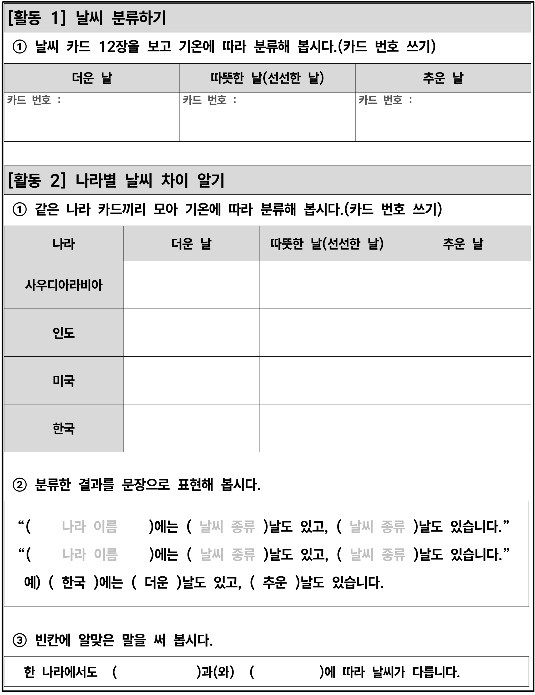
[활동 3] 날씨와 생활 연결하기
① 날씨 카드 속 사람들은 어떤 옷을 입고, 무엇을 하고 있나요? 글이나 그림으로 나타내 봅시다. 날씨 옷 · 물건 · 하는 일
더운 날
추운 날
따뜻한 날
(선선한 날)
비 오는 날
② 서로 다른 나라의 같은 날씨 카드를 나란히 놓고 비교해 봅시다.
- 나라가 달라도 같은 날씨에는 여러 나라의 생활 모습이 ( 비슷합니다 / 다릅니다 ).
- 비슷한 점 : ______________________________________
______________________________________
______________________________________
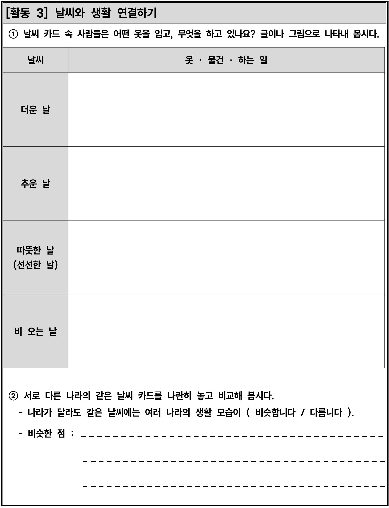
일 시 | 대 상 | 2학년 1반 | 교과서 | 계절 48~49(1/2) | 지도교사 | ||||||||||
|---|---|---|---|---|---|---|---|---|---|---|---|---|---|---|---|
프로젝트 | 여러 나라의 생활 사진책 만들기 (4/8) | xplore | |||||||||||||
본시 성취기준 | [2슬03-02] 계절과 생활의 관계를 탐구한다. [2국06-02] 일상의 경험과 생각을 글과 그림으로 표현한다. | 본시 관련교과 | 슬생, 국어 | ||||||||||||
학습목표 | 음식 카드를 보고 한 나라에도 여러 음식이 있음을 말하고, 여러 나라 음식의 같은 점을 찾을 수 있다. | ||||||||||||||
수업 모형 | 문제해결 학습 모형 | 교과 역량 | 공동체 역량 | ||||||||||||
수업전략 | 수업 의도 | - ‘인도=카레’처럼 한 음식으로 나라를 단정하는 생각을 “이런 음식도 있고 다른 음식도 있어요.”로 바꾸어 말하도록, 음식 카드를 한 상에 모아 눈으로 확인하게 한다. - 나라 찾기 놀이로 쌀, 생선, 특별한 날 음식처럼 여러 나라에 같이 있는 음식을 찾아, 나라는 달라도 비슷한 점이 있음을 알게 한다. 인형 ‘만이’와 함께 ‘이상해’ 대신 ‘궁금해’로 바꾸어 말하며 카드를 근거로 질문하게 한다. | |||||||||||||
다문화 주도성 | | | |||||||||||||
☑ | ☑ | ☑ | ☑ | ||||||||||||
이주배경학생 지도계획 | - 가정의 음식 문화와 종교적 식습관은 사적인 정보이므로 발표를 요구하지 않고, 모둠의 나라는 교사가 미리 배정한다. 음식 카드에는 사진과 음식 이름, 재료, 먹는 때 등을 함께 넣고, 예시 문장을 준비하여 카드를 짚으며 말할 수 있게 한다. | ||||||||||||||
단계 (시간) | 학습요소 | 교수·학습 활동 | 자료(▶) 및 유의점(☞) |
|---|---|---|---|
문제 확인하기 (5′) | 동기유발 | ▣ 학습동기 유발 ◦ 만이의 질문에 답하기 ∙ 만이가 “한국 사람은 김치만 먹지?”라고 물었어요. 이 말은 어떤가요? 이번 주 급식 식단표를 보며 어떤 음식이 나오는지 말해 봅시다. - 밥도 나오고, 국수도 나와요. ∙ “인도 사람은 카레만 먹겠네?”라는 말은 어떤가요? - 더 알아봐야 알 수 있어요. | ▶ 프레젠테이션, 인형(만이) ☞ 가정의 음식 대신 급식 식단표를 근거로 삼는다. |
공부할 문제 파악 | ▣ 공부할 문제 확인 ♣ 나라별 다양한 음식을 알아보고 같은 점을 찾아봅시다. | ||
학습활동 안내 | ▣ 학습활동 안내 【활동1】 상 차리기 【활동2】 나라 찾기 【활동3】 궁금해! 질문하기 | ||
문제 해결 방법 탐색 하기 (8′) | 상을 차리고 말하기 | ▣ 【활동1】 상 차리기 ◦ 나라 음식 카드로 한 상 차리기 ∙ 모둠 나라 봉투에 든 음식 카드를 한 장씩 나누어 갖고, 판에 붙여 한 상을 차려 봅시다. ∙ 카드 속 음식 이름을 함께 읽어 봅시다. ◦ “ 도 먹고 도 먹어요” 말하기 ∙ “ 사람은 도 먹고 도 먹어요.”를 돌아가며 말하고, 친구의 말을 끝까지 들어 봅시다. - 한국 사람은 비빔밥도 먹고 국수도 먹어요. | ▶ 프레젠테이션, 음식 카드, 판, 활동지 ☞ 나라는 교사가 미리 배정하고 가정 배경과 연결하지 않는다. |
단계 (시간) | 학습요소 | 교수·학습 활동 | 자료(▶) 및 유의점(☞) |
|---|---|---|---|
문제 해결 방법 탐색 하기 (12′) | 나라를 이동하며 같은 점 찾기 | ▣ 【활동2】 나라 찾기 ◦ 놀이 규칙 알아보기 ∙ 교실 네 곳에 네 나라의 음식이 있습니다. 선생님이 말하는 음식이 있는 나라로 걸어가 봅시다. ◦ 음식이 있는 나라로 가기 ∙ 쌀, 생선, 특별한 날 음식이 있는 나라로 가 볼까요? - 네 나라 모두에 있어요. ∙ 한 가지 음식만 먹는 나라가 있다면 그 나라로 가 볼까요? - 한 가지만 먹는 나라는 없어요. ◦ 여러 나라 음식의 같은 점 말하기 ∙ 네 나라에 모두 있었던 것은 무엇인가요? - 쌀과 생선입니다. | ▶ 판, 활동지 ☞ 뛰지 않고 걸어서 이동하도록 한다. ☞ “모든 나라에 있어요!”를 다 같이 말하며 정리한다. |
문제 해결하기 (10′) | 카드를 보고 궁금한 점 묻기 | ▣ 【활동3】 궁금해! 질문하기 ◦ 만이와 함께 카드 읽기 ∙ 만이가 도사 카드를 보고 “처음 보는 음식이야! 이상해!”라고 합니다. “이상해” 대신 뭐라고 말하면 도사를 더 알 수 있을까요? - 궁금해! 도사는 무엇으로 만들어요? ◦ 내가 고른 카드 읽고 질문 쓰기 ∙ 우리 모둠 카드 중 한 장을 골라, 어디에서 먹는지, 언제 먹는지, 무엇이 들어가는지 활동지에 표시하고 “궁금해!”로 시작하는 질문을 한 줄 써 봅시다. ◦ 질문 나누기 ∙ 쓴 질문을 친구들에게 읽어 주고, 카드에 나온 것으로 답해 봅시다. - 궁금해! 캅사에는 고기가 들어가요? | ▶ 프레젠테이션, 인형(만이), 음식 카드, 활동지 ☞ ‘이상해’를 나쁜 말로 다루지 않고 ‘궁금해’로 바꾸면 더 알 수 있다는 점만 짚는다. ☞ 카드에 나온 것만 답하고, 모르면 ‘더 알아봐요!’라고 말한다. |
평가하기 (5′) | 학습내용 정리 | ▣ 학습내용 정리하기 ◦ 오늘 배운 내용 말하기 ∙ 모둠 카드를 보며 “ 에는 도 있고 도 있어요.”를 짝에게 말해 봅시다. 한 나라에도 여러 음식이 있다는 것을 같이 정리해 봅시다. - 인도에는 카레도 있고 도사도 있어요. - 한 나라에도 여러 음식이 있고, 나라가 달라도 재료나 먹는 때가 같을 수 있습니다. ◦ 마무리 구호 외치기 ∙ 만이와 함께 “이상해!” 대신 “궁금해!”라고 외쳐 봅시다. | ▶ 활동지, 인형(만이) |
▣ 차시 예고 ♣ 사진책에 넣을 날씨와 음식 사진을 골라 봅시다. |
판서 계획 | 여러 나라의 생활 사진책 만들기 | ||
|---|---|---|---|
♣ 나라별 다양한 음식을 알아보고 같은 점을 찾아봅시다. | * 한 나라에도 여러 음식이 있습니다. * 나라가 달라도 재료나 먹는 때가 같을 수 있습니다. | ||
【활동1】 상 차리기 【활동2】 나라 찾기 【활동3】 궁금해! 질문하기 |
평가 계획 | 평가내용 | 척도 | 채점 기준 | 평가 방법 |
|---|---|---|---|---|
음식 카드를 보고 한 나라에도 여러 음식이 있음을 말하고, 여러 나라 음식의 같은 점을 찾을 수 있는가? | 매우 잘함 | 음식 카드를 근거로 한 나라에도 여러 음식이 있음을 “ 도 있어요”로 말하고, 여러 나라 음식의 같은 점을 스스로 찾아 말할 수 있다. | 서술, 관찰법 | |
잘함 | 음식 카드를 보고 한 나라에도 여러 음식이 있음을 “ 도 있어요”로 말하고, 친구와 함께 여러 나라 음식의 같은 점을 찾을 수 있다. | |||
보통 | 선생님이나 친구의 도움을 받아 음식 카드를 짚으며 “ 도 있어요”로 말할 수 있다. | |||
이주배경학생 평가 시 유의점 | 이주배경학생의 가정 음식 문화는 평가에 반영하지 않는다. 카드를 짚으며 말하거나 짝과 함께 말한 것도 같은 기준으로 인정하고, 한 나라에 여러 음식이 있음을 알고 있는지를 중심으로 평가한다. | |||
1. 우리 모둠 한 상에 있는 음식을 써 보거나 그려봐요. 카드 ① 카드 ② 카드 ③ 카드 ④
2. 나라 찾기에서 네 나라 모두에 있었던 것에 ○ 하세요.
쌀 생선 특별한 날 먹는 음식
3. 카드 한 장을 골라 살펴봐요. ▸ 내가 고른 카드: ( )
▸ 어디에서 먹나요? ( )
▸ 언제 먹나요? □ 일상 □ 특별한 날
▸ 무엇이 들어가나요? □ 쌀 □ 빵·면 □ 채소·콩·과일 □ 고기·생선
▸ 궁금해! ( ?)
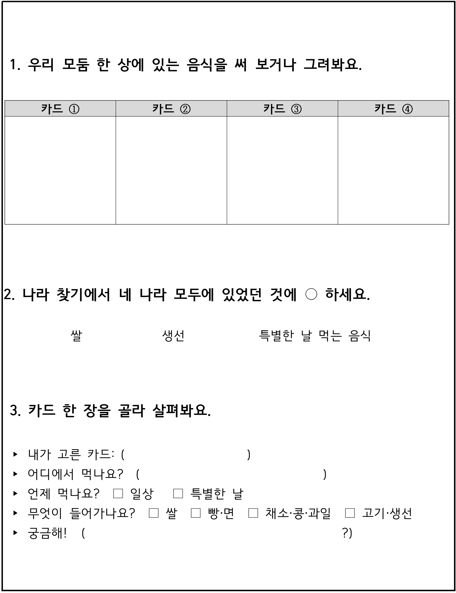
융합과목 | 슬기로운생활, 국어 | 대 상 | 2학년 3반 | 프로젝트 단계 | nite (협력하기) | 지도교사 | |||||
|---|---|---|---|---|---|---|---|---|---|---|---|
프로젝트 | 여러 나라의 생활 사진책 만들기(5/8) | ||||||||||
성취기준 | [2슬03-02] 계절과 생활의 관계를 탐구한다. [2국06-02] 일상의 경험과 생각을 글과 그림으로 표현한다. | ||||||||||
학습목표 | 같은 나라의 서로 다른 날씨와 음식 사진을 고르고, 고른 까닭을 말할 수 있다. | ||||||||||
수업전략 | 수업모형 | 문제해결 학습 모형 | 교과 역량 | 문제해결 역량 | |||||||
다문화 주도성 | | | |||||||||
☑ | ☑ | ☐ | ☑ | ||||||||
단계 (시간) | 학습요소 | 교수·학습 활동 | 자료(▶) 및 유의점(☞) |
|---|---|---|---|
문제 확인하기 (5′) | 동기유발 | ▣ 학습동기 유발 ◦ 여러 나라의 생활 모습 사진 살펴보기 ∙ 지난 시간에 살펴본 여러 나라의 날씨와 음식 사진을 다시 살펴봅시다. ∙ 같은 나라인데 서로 다른 모습이었던 사진을 떠올려 봅시다. | ▶ 프레젠테이션 |
공부할 문제 파악 | ▣ 공부할 문제 확인 ♣ 같은 나라의 여러 모습이 담긴 사진을 골라 봅시다. | ||
문제해결 방법 탐색하기 (10′) | 사진 살펴보고 고르기 | ▣ 【활동1】 한 나라, 여러 모습 찾기 ◦ 소개할 나라 정하기 ∙ 짝과 함께 사진책에 소개할 나라를 정해 봅시다. ∙ 그 나라의 날씨 사진과 음식 사진을 살펴봅시다. ◦ 서로 다른 모습의 사진 고르기 ∙ 같은 나라인데 서로 다른 모습을 보여 주는 사진 두 장을 짝과 함께 골라 봅시다. | ▶ 나라별 날씨·음식 사진 묶음, 디지털 지도 ☞ 학생에게 자신이 살았던 나라를 소개하라고 요구하지 않는다. |
문제 해결하기 (20′) | 사진을 고른 까닭 말하기 | ▣ 【활동2】 사진을 고른 까닭 말하기 ◦ 선택 기록지 쓰기 ∙ 고른 두 사진과 고른 까닭을 선택 기록지에 써 봅시다. ◦ 고른 사진 함께 보기 ∙ 고른 사진을 다른 짝에게 보여 주고 고른 까닭을 말해 봅시다. ∙ 같은 나라를 고른 친구의 사진과 내가 고른 사진을 비교해 봅시다. | ▶ 선택 기록지 ☞ 쓰기가 어려운 학생은 말이나 그림으로 까닭을 나타내게 한다. |
고른 사진 다시 살펴 보기 | ▣ 【활동3】 고른 사진 다시 보기 ◦ 고른 사진 다시 살펴보기 ∙ 고른 사진이 어디에서, 언제, 누구를 찍은 사진인지 확인해 봅시다. ∙ 두 사진이 그 나라의 모든 모습을 보여 줄까요? ∙ 사진책에 더 담고 싶은 모습이 있다면 말해 봅시다. | ▶ 선택 기록지 ☞ 두 사진이 그 나라의 모든 모습을 보여 주는 것은 아님을 인식하도록 한다. | |
평가 하기 (5′) | 학습내용 정리하기 | ▣ 학습내용 정리 ◦ 배운 내용과 느낀 점 이야기하기 ∙ 오늘 고른 사진으로 알게 된 점을 말해 봅시다. ∙ 다음 시간에 사진책을 만들 때 더 넣고 싶은 모습을 말해 봅시다. | ▶ 선택 기록지 ☞ 고른 사진과 선택 기록지는 다음 차시에 사용하도록 모아 둔다. |
▣ 차시 예고 ♣ 고른 사진으로 사진책을 완성하여 소개해 봅시다. |
융합과목 | 슬기로운생활, 국어 | 대 상 | 2학년 3반 | 프로젝트 단계 | nite (협력하기) | 지도교사 | |||||
|---|---|---|---|---|---|---|---|---|---|---|---|
프로젝트 | 여러 나라의 생활 사진책 만들기(6/8) | ||||||||||
성취기준 | [2슬03-02] 계절과 생활의 관계를 탐구한다. [2국06-02] 일상의 경험과 생각을 글과 그림으로 표현한다. | ||||||||||
학습목표 | 고른 사진으로 사진책을 완성하고, 한 나라의 여러 모습을 소개할 수 있다. | ||||||||||
수업전략 | 수업모형 | 문제해결 학습 모형 | 교과 역량 | 문제해결 역량 | |||||||
다문화 주도성 | | | |||||||||
☑ | ☑ | ☑ | ☐ | ||||||||
단계 (시간) | 학습요소 | 교수·학습 활동 | 자료(▶) 및 유의점(☞) |
|---|---|---|---|
문제 확인하기 (5′) | 동기유발 | ▣ 학습동기 유발 ◦ 지난 시간에 고른 사진 다시 보기 ∙ 짝과 함께 고른 두 사진과 선택 기록지를 다시 살펴봅시다. ∙ 두 사진은 어떤 점이 다른가요? | ▶ 고른 사진, 선택 기록지 |
공부할 문제 파악 | ▣ 공부할 문제 확인 ♣ 한 나라의 여러 모습을 사진책에 담아 소개해 봅시다. | ||
문제해결 방법 탐색하기 (10′) | 사진책 계획하기 | ▣ 【활동1】 사진책 계획하기 ◦ 우리가 맡을 쪽 계획하기 ∙ 사진책에서 우리 짝이 맡은 쪽에 두 사진과 설명을 어디에, 어떻게 넣을지 정해 봅시다. ∙ 나라 이름과 쪽 제목을 어떻게 쓸지 정해 봅시다. ∙ 짝과 어떤 부분을 맡을지 나누어 봅시다. | ▶ 프레젠테이션, 사진책 재료, 선택 기록지 ☞ 짝과 역할을 나누어 두 학생이 모두 참여하도록 한다. |
문제 해결하기 (20′) | 사진책 만들기 | ▣ 【활동2】 한 나라, 여러 모습 담기 ◦ 사진책 쪽 완성하기 ∙ 두 사진을 붙이고, 사진 속 모습을 글이나 그림으로 나타내 봅시다. ∙ “___에는 ___도 있고 ___도 있어요.” 문장 틀을 활용하여 설명을 써 봅시다. ◦ 우리 반 사진책으로 묶기 ∙ 완성한 쪽을 나라별로 모아 우리 반 사진책으로 묶어 봅시다. ∙ 사진책의 제목과 표지를 함께 정해 봅시다. | ▶ 고른 사진, 풀, 색연필, 문장 틀 카드 ☞ 쓰기가 어려운 학생은 그림이나 낱말로 나타내게 한다. |
사진책 소개하기 | ▣ 【활동3】 한 나라, 여러 모습 소개하기 ◦ 우리가 만든 쪽 소개하기 ∙ 사진책에서 우리가 만든 쪽을 펼쳐, 짝과 함께 두 모습을 번갈아 가리키며 소개해 봅시다. ∙ 친구의 소개를 끝까지 듣고 궁금한 점을 물어봅시다. | ▶ 우리 반 사진책 ☞ 서로 비교하지 않고, 같은 나라에도 여러 모습이 있음을 함께 확인한다. | |
평가 하기 (5′) | 학습내용 정리하기 | ▣ 학습내용 정리 ◦ 배운 내용과 느낀 점 이야기하기 ∙ 완성한 사진책을 함께 넘겨 보며 새롭게 알게 된 점을 이야기해 봅시다. ∙ 짝과 함께 사진책을 만들며 좋았던 점을 말해 봅시다. | ▶ 우리 반 사진책 ☞ 사진책에 담은 모습이 그 나라의 일부임을 안내한다. |
▣ 차시 예고 ♣ 다른 나라의 비슷한 모습을 기준에 따라 모아 표와 그래프로 나타내 봅시다. |
융합과목 | 수학, 국어 | 대 상 | 2학년 4반 | 프로젝트 단계 | ake (표현하기) | 지도교사 | |||||
|---|---|---|---|---|---|---|---|---|---|---|---|
프로젝트 | 여러 나라의 생활 사진책 만들기(7/8) | ||||||||||
성취기준 | [2수04-02] 자료를 분류하여 표로 나타내고, 자료를 표로 나타내면 편리한 점을 말할 수 있다. [2수04-03] 자료를 분류하여 ◯, ×, / 등을 이용한 그래프로 나타내고, 자료를 그래프로 나타내면 편리한 점을 말할 수 있다. [2국06-02] 일상의 경험과 생각을 글과 그림으로 표현한다. | ||||||||||
학습목표 | 다른 나라의 비슷한 모습을 기준에 따라 분류하여 표와 ○그래프로 나타낼 수 있다. | ||||||||||
수업전략 | 수업모형 | 자료 처리 학습 모형 | 교과 역량 | 정보처리·추론·의사소통 역량 | |||||||
다문화 주도성 | | | |||||||||
☑ | ☑ | ☑ | ☐ | ||||||||
단계 (시간) | 학습요소 | 교수·학습 활동 | 자료(▶) 및 유의점(☞) |
|---|---|---|---|
문제 확인하기 (5′) | 동기유발 | ▣ 학습동기 유발 ◦ 완성한 사진책 살펴보기 ∙ 같은 나라 사진끼리 모여 있는 우리 반 사진책을 살펴봅시다. ∙ 나라 이름이 달라도 함께 모을 수 있는 사진이 있을지 생각해 봅시다. | ▶ 우리 반 사진책 |
공부할 문제 파악 | ▣ 공부할 문제 확인 ♣ 다른 나라의 비슷한 모습을 기준에 따라 분류하여 표와 그래프로 나타내 봅시다. | ||
문제해결 방법 탐색하기 (8′) | 분류 기준 정하기 | ▣ 【활동1】 우리 모둠의 분류 기준 정하기 ◦ 사진 살펴보기 ∙ 모둠별로 받은 날씨 사진 또는 음식 사진 8장을 살펴봅시다. ◦ 모든 사진에 쓸 수 있는 기준 정하기 ∙ 사진 8장에 모두 쓸 수 있는 기준을 정해 봅시다. ∙ ‘눈이 보인다 / 눈이 보이지 않는다’, ‘쌀이 들어 있다 / 쌀이 들어 있지 않다’처럼 분명한 기준을 정해 봅시다. | ▶ 프레젠테이션, 사진 사본 8장, 사진 설명 카드 ☞ ‘맛있는 것’, ‘이상한 것’처럼 사람마다 다르게 판단하는 기준을 세우지 않도록 한다. |
문제 해결하기 (22′) | 기준에 따라 분류하기 | ▣ 【활동2】 사진 모으기 ◦ 기준에 따라 분류하고 개수 세기 ∙ 사진을 한 장씩 분류하며 까닭을 말해 봅시다. ∙ 칸마다 모인 사진의 수를 세어 봅시다. ◦ 같은 칸에 모인 사진 살펴보기 ∙ 다른 나라 사진이 같은 칸에 들어간 까닭을 말해 봅시다. | ▶ 활동지 ☞ 사진 수는 학급과 자료 상황에 맞게 6~10장으로 조정할 수 있다. |
표와 그래프로 나타내기 | ▣ 【활동3】 표와 ○그래프 완성하기 ◦ 표로 나타내기 ∙ 기준의 이름과 칸마다 모인 사진의 수를 표에 써 봅시다. ◦ ○그래프로 나타내기 ∙ 사진 한 장을 ○ 하나로 하여 그래프를 그려 봅시다. ∙ 표와 그래프로 나타내면 편리한 점을 말해 봅시다. | ▶ 활동지 ☞ 비율이나 기후 통계로 넓히지 않는다. ☞ 시간이 부족하면 학급 그래프를 함께 완성한다. | |
평가 하기 (5′) | 학습내용 정리하기 | ▣ 학습내용 정리 ◦ 배운 내용과 느낀 점 이야기하기 ∙ “오늘 알게 된 점에 대해 말해봅시다. | ▶ 활동지 |
▣ 차시 예고 ♣ 우리의 발견을 함께 보고 처음 생각과 비교해 봅시다. |
융합과목 | 바른생활, 국어 | 대 상 | 2학년 4반 | 프로젝트 단계 | ake (표현하기) | 지도교사 | |||||
|---|---|---|---|---|---|---|---|---|---|---|---|
프로젝트 | 여러 나라의 생활 사진책 만들기(8/8) | ||||||||||
성취기준 | [2바04-04] 지금까지의 생활 습관과 학습 습관을 되돌아본다. [2국06-02] 일상의 경험과 생각을 글과 그림으로 표현한다. | ||||||||||
학습목표 | 우리 반 사진책과 분류 자료를 함께 보며 같은 나라의 여러 모습과 다른 나라의 공통점을 말하고, 자신의 처음 생각을 되돌아볼 수 있다. | ||||||||||
수업전략 | 수업모형 | 문제해결 학습 모형 | 교과 역량 | 의사소통·문제해결 역량 | |||||||
다문화 주도성 | | | |||||||||
☑ | ☐ | ☑ | ☑ | ||||||||
단계 (시간) | 학습요소 | 교수·학습 활동 | 자료(▶) 및 유의점(☞) |
|---|---|---|---|
문제 확인하기 (5′) | 동기유발 | ▣ 학습동기 유발 ◦ 프로젝트 질문 다시 만나기 ∙ “한 가지 모습이 그 나라의 전부일까요?”라는 질문을 다시 떠올려 봅시다. ∙ 오늘은 우리가 만든 사진책과 표로 이 질문에 답해 봅시다. | ▶ 우리 반 사진책 ☞ 외부 초대나 별도의 행사 없이 학급 안에서 운영한다. |
공부할 문제 파악 | ▣ 공부할 문제 확인 ♣ 우리의 발견을 함께 보고 처음 생각과 비교해 봅시다. | ||
문제해결 방법 탐색하기 (12′) | 한 나라의 여러 모습 관람하기 | ▣ 【활동1】 사진책 관람하기 ◦ 사진책 소개하고 관람하기 ∙ 책상 위에 놓인 사진책과 분류표의 자리를 확인해 봅시다. ∙ 짝과 함께 우리가 만든 사진책 쪽을 30초 정도 소개해 봅시다. ∙ 듣는 친구는 사진을 가리키며 새로 알게 된 점이나 궁금한 점을 한 가지 말해 봅시다. | ▶ 프레젠테이션, 우리 반 사진책, 모둠 분류표 ☞ 교실에서 이동하기 어려울 경우, 자료를 돌려 보게 한다. |
문제 해결하기 (18′) | 나라 사이의 공통점 찾기 | ▣ 【활동2】 나라 사이의 공통점 찾기 ◦ 7차시 분류 결과 살펴보기 ∙ 7차시에 만든 표와 그래프 가운데 두세 모둠의 결과를 함께 살펴봅시다. ∙ 다른 나라의 어떤 사진들이 함께 모였나요? ∙ 어떤 기준으로 모았는지 말해 봅시다. | ▶ 모둠별 표와 ○그래프 ☞ 같은 점을 찾으면서 나라마다 다른 점도 있음을 함께 인정한다. |
처음 생각과 지금 생각 비교하기 | ▣ 【활동3】 생각의 변화 비교하기 ◦ 1차시 활동지와 오늘 본 자료 함께 보기 ∙ “처음에는 ___라고 생각했어요. 지금은 ___도 있다는 것을 알아요. ___ 사진에서 확인했어요.”로 나타내 봅시다. ∙ 글쓰기, 그림, 짝에게 말하기 중에서 하나를 골라 나타내 봅시다. ◦ 짝과 나누기 ∙ 짝이 쓴 글을 읽거나 짝의 설명을 들어 봅시다. | ▶ 활동지 ☞ 생각이 바뀌었다고 반드시 쓰게 하지 않고, 자료로 더 확실해진 배움을 인정한다. | |
평가 하기 (5′) | 학습내용 정리하기 | ▣ 학습내용 정리 ◦ 배운 내용과 느낀 점 이야기하기 ∙ “같은 나라에서도 모습이 다르고, 다른 나라에서도 ___은(는) 비슷할 수 있어요.”의 빈칸을 채워 발표해 봅시다. | ▶ 학급 공동 문장 판 |
▣ 차시 예고 ♣ 우리 반 사진책을 학급 문고에 두고 함께 읽어 봅시다. |
세계의 문화를 그림그래프로 나타내기
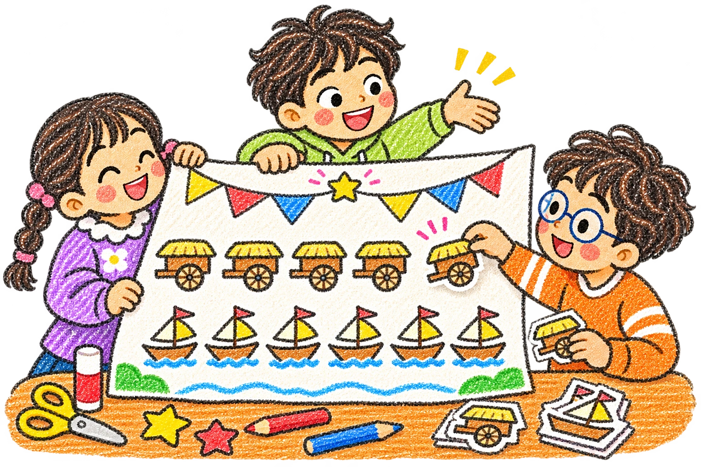
| 차시 | 교과 | 학습 주제 | 교과 역량 |
|---|---|---|---|
| 1 | 수학 | 표와 그림그래프의 특징 비교하기 | 정보 활용 능력 |
| 2 | 사회·수학 | 옛 교통수단을 이용한 사람들의 생활 모습 설명하기 | 정보 활용 능력 |
| 3 | 수학 | 그림그래프에서 옛 교통수단에 관한 정보 찾기 | 의사소통 역량 |
| 4 | 수학·사회·국어 | 그림과 단위를 정해 문화 자료를 그림그래프로 나타내기 | 문제해결·정보처리, 의사소통 역량 |
| 5 | 수학·사회·국어 | 모둠별로 세계 문화 조사 자료 만들기 | 문제해결, 의사소통, 정보처리 역량 |
| 6 | 수학 | 문화 자료를 조사해 그림그래프로 나타내기 | 정보처리, 의사소통 |
| 7 | 수학·사회·국어 | 세계 문화 그림그래프를 해석하고 발표하기 | 정보처리, 의사소통 |
설계 의도 본 프로젝트는 초등 3학년 학생들이 세계 여러 나라의 문화를 탐색하며 친구들이 좋아하는 세계의 문화를 한눈에 보여주기 위해 ‘세계의 문화를 그림그래프로 나타내기’를 주제로 다문화 수용성과 글로컬 시민성을 함양하는 것을 목적으로 한다. 학생들은 그림그래프와 세계의 교통수단을 알아보고 그와 관련된 그림그래프를 해석한다. 모둠별로 옷·음식·놀이·관광지 중 조사 주제를 선택하여 세계 여러 나라의 문화 조사 자료를 만들고, 선호도를 조사하여 그림그래프로 나타내고 발표한다. 세계의 문화를 그림그래프로 나타내며 다양한 문화에 대한 수용성과 감수성을 기르며 글로컬 시민성을 주도적으로 기를 수 있다.
| 융 합 과 목 | 수학 | 6. 그림그래프 | 성취 기준 | [4수04-01] 자료를 수집하여 그림그래프나 막대그래프로 나타내고 해석할 수 있다. |
|---|---|---|---|---|
| 국어 | 2. 유창하게 읽고 발표해요 | [4국01-05] 목적과 주제에 알맞게 자료를 정리하여 자신감 있게 발표한다. | ||
| 사회 | 1. 사회 변화와 다양한 문화 | [4사03-02] 우리 사회에 다양한 문화가 확산되면서 나타나는 긍정적 효과와 문제를 분석하고, 나와 다른 사람이나 집단의 문화를 존중하는 태도를 기른다. | ||
| 2. 옛날과 오늘날의 생활 모습 | [4사04-02] 옛날부터 오늘날까지 교통의 변화에 따른 이동과 생활 모습의 변화를 이해한다. |
| 차시 | 프로젝트 단계 | 주요 학습 내용 | 관련 교과 | 학습자료 | |
|---|---|---|---|---|---|
| 1 | et 준비하기 | | 세계의 문화 자료를 바탕으로 표와 그림그래프의 특징을 비교하기 -그림그래프의 뜻과 좋은 점을 알아보기 | 수학, 사회 | 사진, 그래프 유튜브 |
| 2 | xplore 탐구하기 | -옛날의 교통로와 교통수단을 이해하고 교통수단을 이용하는 모습을 조사하기 -다른 나라의 옛 교통수단과 옛 교통수단의 특징을 살펴보기 | 사회, 수학 | 사진 스마트 패드 | |
| 3 | 그림그래프의 내용을 알아보기 ‘체험하고 싶은 옛날의 세계 교통수단’ 그림그래프 해석하고 문제 만들기 | 수학, 사회 | 사진, 그래프 | ||
| 4 | nite 협력하기 | 자료에 알맞은 그림과 단위를 정하여 표를 그림그래프로 나타내기 -세계 문화 자료로 그림그래프를 그려 친구의 그림그래프와 비교 및 점검하기 | 수학, 사회, 국어 | 전자칠판 그래프지 | |
| 5 | -조사 주제에 맞는 항목과 자료 수집 방법을 확인하기 -미리캔버스에서 모둠별 조사 자료를 만들어 점검하고 발표하기 | 수학, 사회, 국어 | 문화자료 미리캔버스 스마트 패드 | ||
| 6 | ake 표현하기 | -그림그래프로 나타낼 자료를 표로 정리하기 -그림그래프로 나타내고 디지털 도구를 활용한 그림그래프와 비교하여 확인하기 | 수학 | 스마트 패드 | |
| 7 | -그림그래프의 내용을 알아보고 해석하기 -그림그래프를 활용한 디지털 발표자료를 만들어 발표하기 | 수학, 사회,국어 | 패들릿 스마트 패드 | ||
| ✔세계의 교통, 옷, 음식, 놀이, 축제, 관광지 등 다양한 주제를 살펴보며 문화적 공통점과 차이를 존중하기 ✔세계의 문화를 나타낸 그림그래프는 조사 대상을 선택하여 선호도를 조사한 것임을 알고 문화적 우열로 해석하지 않기 |
|---|---|
✔학생들이 스스로 관심 있는 세계 문화 조사 주제를 선정하고, 문화 및 언어 경험을 살려 조사 방법과 역할을 정해 학습 계획을 수립하기 ✔조사 자료를 만들고 표와 그래프를 비교하며 서로의 의견을 공유하며 수정 및 성찰하기 | |
✔자신의 강점을 살려 사진 설명, 자료 정리, 발표 등의 역할을 분담하고 배움을 나누기 ✔세계 문화 조사 결과를 학급에 소개하며 서로 이해하고 존중하는 공동체 만들기 | |
✔다양한 자료를 활용하며 협력적 문제 해결을 통해 새로운 환경과 문화에 대한 적응력을 향상하기 ✔자신의 문화적 정체성을 존중받으며 도움을 요청하고 협력하여 과제 해결하기 |
| 평가내용 | 평가방법 | 매우 잘함 | 잘함 | 보통 | |
|---|---|---|---|---|---|
①그림그래프의 구성과 특징을 알고 표와 비교하기 [4수04-01] | 관찰법 | 그림그래프의 구성 요소와 특징을 정확하게 이해하고, 표와 그림그래프를 알맞게 비교한다. | 그림그래프의 구성 요소와 특징을 이해하고 표와 그림그래프를 비교하지만, 다소 부정확하다. | 그림그래프의 구성 요소와 특징을 이해하지 못하고, 표와 그림그래프를 비교하기 어려워한다. | |
②사진·그림으로 옛 교통수단의 이용 모습과 특징 설명하기 [4사04-02] | 관찰법 | 사진이나 그림을 활용하여 옛날 사람들이 교통수단을 이용했던 모습과 특징을 찾아 다양하게 설명할 수 있다. | 사진이나 그림을 활용하여 옛날 사람들이 교통수단을 이용했던 모습과 특징을 간단하게 설명할 수 있다. | 사진이나 그림에서 옛날 사람들이 교통수단을 이용했던 모습을 부분적으로 말하고 도움을 받아 특징을 찾을 수 있다. | |
③그림그래프에서 통계적 사실을 찾아 설명하기 [4수04-01] | 서술 | 그림그래프를 보고 여러 가지 통계적 사실을 정확하게 설명할 수 있다. | 그림그래프를 보고 여러 가지 통계적 사실을 찾아 설명할 수 있다. | 그림그래프에서 단편적인 사실을 찾을 수 있다. | |
④주어진 자료를 그림그래프로 나타내기 [4수04-01] | 관찰법 구술 | 그림그래프로 나타내는 순서를 설명하고, 알맞은 그림과 단위를 정하여 주어진 자료의 수량을 정확히 나타낼 수 있다. | 그림그래프로 나타내는 방법을 이해하고, 순서에 따라 주어진 자료의 수량을 나타낼 수 있다. | 도움을 받아 그림그래프로 나타내는 순서를 확인하고, 주어진 자료의 수량을 나타낼 수 있다. | |
⑤친구들과 세계 문화 조사 자료 만들기 [4수04-01] | 관찰법 구술 | 알맞은 항목 및 응답 방법을 제시하고 맡은 역할을 하고 친구의 의견을 반영하여 조사 자료를 완성할 수 있다. | 알맞은 항목 및 응답 방법을 제시하고 맡은 역할을 하여 조사 자료를 만들 수 있다. | 도움을 받아 항목 및 응답 방법을 확인하고 조사 자료 만들기에 참여할 수 있다. | |
⑥자료를 조사해 그림그래프로 나타내기 [4수04-01] | 관찰법 | 조사 자료를 표로 정확하게 정리하고, 정확하게 그림그래프로 나타낼 수 있다. | 조사 자료를 표로 정리하고, 그림의 단위에 맞게 항목별 수량을 그림그래프로 나타낼 수 있다. | 교사의 도움을 받아 조사 자료를 표와 그림그래프로 나타낼 수 있다. | |
⑦그림그래프로 발표 자료를 정리하고 발표하기 [4수04-01] [4국01-05] | 관찰법 구술 | 그림그래프의 단위와 수량을 정확히 해석하여 발표 자료를 짜임새 있게 정리하고, 그래프를 근거로 자신감 있게 발표할 수 있다. | 그림그래프에서 알 수 있는 내용을 발표 자료로 정리하고, 그래프를 활용하여 발표할 수 있다. | 교사나 친구의 도움을 받아 그림그래프에서 알 수 있는 내용을 정리하고, 맡은 내용을 짧게 발표할 수 있다. | |
| 이주배경학생 평가 시 유의점 | |||||
③ 번역기와 구술을 허용하고, 그림의 단위를 수로 나타내어 통계적 사실을 찾는지 살핀다. | ⑤ 학습어휘표와 번역을 허용하고, 모둠 조사 자료를 만드는 과정에서 수학적 이해와 기여를 살핀다. | ||||
⑦ 그림 가리키기·수량 표시·짧은 말로 그래프 해석을 확인하고 발표 문장 틀을 제공한다. 문화 경험은 자발적으로 나누게 한다. | |||||
융합과목 | 수학 | 대 상 | 3학년 1반 | 프로젝트 단계 | et (준비하기) | 지도교사 | |||||
|---|---|---|---|---|---|---|---|---|---|---|---|
프로젝트 | 세계의 문화를 그림그래프로 나타내기(1/7) | ||||||||||
성취기준 | [4수04-01] 자료를 수집하여 그림그래프나 막대그래프로 나타내고 해석할 수 있다. | ||||||||||
학습목표 | 그림그래프의 구성 요소와 특징을 이해하고, 표와 그림그래프를 비교할 수 있다. | ||||||||||
수업전략 | 수업모형 | 개념 형성 수업모형 | 교과 역량 | 정보 활용 능력 | |||||||
다문화 주도성 | | | |||||||||
☑ | ☑ | ☑ | ☑ | ||||||||
단계 (시간) | 학습요소 | 교수·학습 활동 | 자료(▶) 및 유의점(☞) |
|---|---|---|---|
문제 확인하기 (5′) | 동기유발 | ▣ 학습동기 유발 ◦ 다문화 교육주간의 경험 떠올리기 ∙ 다문화 교육주간에 했던 다른 나라의 놀이를 떠올려봅시다. ∙ 어떤 놀이가 가장 재미있었는지 이야기해 봅시다. | ▶ 다문화 놀이 영상 |
공부할 문제 파악 | ▣ 공부할 문제 확인 ♣ 그림그래프를 알아봅시다. | ||
문제해결방법 탐색하기 (10′) | 그림그래프 알아보기 | ▣ 【활동1】 그림그래프 알아보기 ◦ 유네스코 세계문화 유산 살펴보기 ∙ 어느 나라의 세계문화 유산일까요? ∙ 이런 멋진 문화유산이 각 나라에 몇 개나 있을까요? ◦ 그림 그래프 알아보기 ∙ 무엇을 조사하여 나타낸 그래프 인가요? ∙ 문화유산의 개수를 무엇으로 나타내고 있나요? ∙ 그림()과 그림()은 각각 몇 개를 나타내나요? | ▶ 프레젠테이션 ☞ 큰 단위와 작은 단위를 나타낸 그림을 혼동하지 않도록 발문을 통해 학생들이 단위를 정확하게 이해할 수 있도록 한다. |
문제 해결하기 (20‘) | 표와 그림그래프 비교하기 | ▣ 【활동2】 표와 그림그래프 비교하기 ◦ 우리 동네 세계 음식점의 수를 표와 그림그래프로 비교하기 ∙ 표와 그림그래프는 무엇을 조사하여 나타낸 것인가요? ∙ 표와 그림그래프의 같은 점을 찾아 이야기해 보세요. ∙ 표와 그림그래프의 다른 점을 찾아 이야기해 보세요. | ▶ 사진 ☞ 학생들이 동네를 오가며 쉽게 볼 수 있는 다문화 요소인 음식점을 주제로 비교한다. |
그림그래프좋은 점 알아보기 | ▣ 【활동3】 그림그래프의 좋은 점 알아보기 ◦ 자료를 그림그래프로 나타내었을 때 좋은 점 알아보기 ∙ 조사한 자료를 그림그래프로 나타내었을 때의 좋은 점을 이야기해 봅시다. | ☞ 그림그래프의 그림이 한눈에 쉽게 파악될 수 있음을 표와 그림그래프의 비교를 통해 알게 한다. | |
평가 하기 (5′) | 학습내용 정리하기 | ▣ 학습내용 정리 ◦ 배운 내용과 느낀 점 이야기하기 ∙ 내가 그림그래프로 나타내고 싶은 것을 이야기해 봅시다. ∙ 수업하면서 생각한 점이나 느낀 점을 이야기해 봅시다. | |
▣ 차시 예고 ♣ 그림그래프를 보고 알 수 있는 내용을 말해 봅시다. |
융합과목 | 사회, 수학 | 대 상 | 3학년 | 프로젝트 단계 | xplore (탐구하기) | 지도교사 | |||||
|---|---|---|---|---|---|---|---|---|---|---|---|
프로젝트 | 세계의 문화를 그림그래프로 나타내기(2/7) | ||||||||||
성취기준 | [4사04-02] 옛날부터 오늘날까지 교통의 변화에 따른 이동과 생활 모습의 변화를 이해한다. | ||||||||||
학습목표 | 옛날 사람들이 교통수단을 이용했던 모습을 설명할 수 있다. | ||||||||||
수업전략 | 수업모형 | 문제해결 학습 모형 | 교과 역량 | 정보 활용 능력 | |||||||
다문화 주도성 | | | |||||||||
☑ | ☑ | ☑ | ☑ | ||||||||
단계 (시간) | 학습요소 | 교수·학습 활동 | 자료(▶) 및 유의점(☞) |
|---|---|---|---|
문제 확인하기 (5′) | 동기유발 | ▣ 학습동기 유발 ◦ 옛날 사람의 교통수단을 상상하기 ∙ 옛날 사람들이 이웃 마을 장터에 갈 때 모습을 상상하여 발표해 봅시다. | ▶ 프레젠테이션 |
공부할 문제 파악 | ▣ 공부할 문제 확인 ♣ 옛날 사람들이 교통수단을 이용했던 모습을 살펴봅시다. | ||
문제 원인 확인하기 (5′) | 과학 기술의 발달을 고려하여 옛 교통로와 교통수단 이해하기 | ▣ 【활동1】 옛 교통로와 교통수단 이해하기 ◦ 과학 기술의 발달을 고려한 옛 교통로와 교통수단 알아보기 ∙ 옛날 사람들은 다른 곳으로 어떻게 이동했을까요? ∙ 옛날 사람들이 이용했을 교통로는 무엇이었을까요? ∙ 과학 기술의 발달에 따라 등장했을 교통수단은 무엇이 있을까요? | ▶ 프레젠테이션 ☞ 교통수단을 이용하는 목적을 생각하여 옛날의 이동 환경을 생각해 보도록 한다. |
정보수집하기 (15′) | 옛날 사람들의 교통수단 이용 모습 조사하기 | ▣ 【활동2】 옛 교통수단 이용 모습 조사하기 ◦ 옛날 사람들의 교통수단을 이용했던 모습 알아보기 ∙ 옛 교통로를 바탕으로 옛날 사람들이 이용한 교통수단을 말해 봅시다. ∙ 옛 교통수단 중 1가지를 선택하여 이용 모습을 조사해 봅시다. | ▶ 스마트패드, 사진 |
문제해결 및 정리하기 (15′) | 옛날 사람들의 교통수단 이용 모습과 특징 발표하기 | ▣ 【활동3】 옛 교통수단 이용 모습 발표하기 ◦ 옛날 사람들의 교통수단을 이용한 모습과 특징을 공유하기 ∙ 옛날 사람들의 교통수단을 이용한 모습과 특징을 발표해 봅시다. ∙ 다른 나라의 옛 교통수단을 살펴봅시다. ∙ 이용해 보고 싶은 옛 교통수단에 투표해 봅시다. | ☞ 이용해 보고 싶은 교통수단은 선호도 조사이지 문화적 우열이 아님을 분명히 이해하도록 한다. |
학습내용 정리하기 | ▣ 학습내용 정리 ◦ 배운 내용과 느낀 점 이야기하기 ∙ 옛날 사람들의 교통수단을 말해 봅시다. ∙ 옛날 사람들이 교통수단을 이용했던 모습을 조사하며 느낀 점을 이야기해 봅시다. | ||
▣ 차시 예고 ♣ 오늘날 사람들이 교통수단을 이용하는 모습을 알아봅시다. |
일 시 | 대 상 | 3학년 2반 | 교과서 | 수학 142~143(3/8) | 지도교사 | ||||||||||
|---|---|---|---|---|---|---|---|---|---|---|---|---|---|---|---|
프로젝트 | 세계의 문화를 그림그래프로 나타내기 (3/7) | xplore | |||||||||||||
본시 성취기준 | [4수04-01] 자료를 수집하여 그림그래프나 막대그래프로 나타내고 해석할 수 있다. | 본시 관련교과 | 수학, 사회 | ||||||||||||
학습목표 | 그림그래프를 보고 여러 가지 통계적 사실을 찾아 말할 수 있다. | ||||||||||||||
수업 모형 | 문제해결 학습 모형 | 교과 역량 | 의사소통 역량 | ||||||||||||
수업전략 | 수업 의도 | - 세계의 문화를 다룬 그림그래프는 다문화수용성도 함양할 수 있으며 실제 본교 3학년 학생들의 설문을 바탕으로 한 그림그래프는 흥미로운 학습 자료가 되어 그림그래프의 통계적 사실을 쉽게 해석할 수 있다. - 교과서의 그림그래프의 주제도 실생활 주제를 다룬 그래프로 훌륭하지만, 사회와 융합하여 세계의 문화를 바탕으로 그림그래프의 내용을 알아보는 것도 이주배경학생과 비이주배경학생 서로에게 흥미로운 학습주제가 될 수 있다. | |||||||||||||
다문화 주도성 | | | |||||||||||||
☑ | ☑ | ☐ | ☑ | ||||||||||||
이주배경학생 지도계획 | - 이주배경학생이 모국의 옛날 교통수단을 소개하는 전차시 활동을 통해 정체성을 확립할 수 있도록 하며 이를 바탕으로 한 체험하고 싶은 세계 여러 나라의 옛날 교통수단 그림그래프를 제시하여 흥미를 가지고 학습에 참여하도록 한다. 또한 번역기를 활용하여 비이주배경학생과 소통할 수 있도록 돕는다. | ||||||||||||||
단계 (시간) | 학습요소 | 교수·학습 활동 | 자료(▶) 및 유의점(☞) |
|---|---|---|---|
문제 이해하기 (5′) | 동기유발 | ▣ 학습동기 유발 ◦ 체험해 보고 싶은 옛날의 세계 교통수단 그림그래프 예상하기 ∙ 옛날의 세계 교통수단을 살펴봅시다. - 사우디아라비아의 사막에서 이용했을 낙타입니다. ∙ 3학년 친구들은 옛날의 세계 교통수단 중 어떤 것을 체험해 보고 싶었을까요? - 대한민국의 가마일 것 같습니다. | ▶ 프레젠테이션 ☞ 이주배경학생이 모국의 옛날 교통수단을 직접 말하게 함으로써 서로의 문화를 이해하게 한다. |
공부할 문제 파악 | ▣ 공부할 문제 확인 ♣ 그림그래프를 보고 알 수 있는 내용을 말해 봅시다. | ||
학습활동 안내 | ▣ 학습활동 안내 【활동1】 그림그래프 읽는 법 발견하기 【활동2】 그림그래프 해석하기 【활동3】 그림그래프로 문제 만들기 | ||
해결 계획 수립하기 (10′) | 그림그래프 내용 알아보기 | ▣ 【활동1】 그림그래프 읽는 법 발견하기 ◦ 그림그래프 내용 알아보기 ∙ 무엇에 대한 그림그래프일까요? - 회차별 스케이트장에 입장한 사람 수입니다. ∙ 왼쪽 회차별로 사람 수를 그림으로 나타내었습니다. 그림은 무엇을 나타낼까요? - 큰 사람 모양은 10명, 작은 사람 모양은 1명입니다. ∙ 가장 많은 사람이 입장한 회차는 언제인가요? - 큰 그림이 가장 많은 3회차입니다. ∙ 가장 많은 사람이 입장한 회차와 가장 적은 사람이 입장한 회차를 어떻게 알 수 있나요? - 그림그래프에서 큰 사람 그림이 많은 회차가 가장 많은 사람이 입장했고, 큰 사람 그림이 적은 회차가 가장 적은 사람이 입장했습니다. | ▶ 프레젠테이션 ☞ 그림그래프에서 직관적으로 알 수 있는 제목, 항목, 그림의 의미를 이해한 뒤 해석하는 방법을 익히도록 한다. |
단계 (시간) | 학습요소 | 교수·학습 활동 | 자료(▶) 및 유의점(☞) |
|---|---|---|---|
해결 계획 실행하기 (15′) | 그림그래프를 보고 알 수 있는 내용 발표하기 | ▣ 【활동2】 그림그래프 해석하기 ◦ 그림그래프를 보고 알 수 있는 내용 이야기하기 , ∙ ‘체험해 보고 싶은 옛날의 세계 교통수단’ 그림그래프를 보고 알 수 있는 내용을 적어 봅시다. ∙ 모둠 친구들과 함께 돌아가며 그림그래프를 보고 알 수 있는 내용을 이야기해 봅시다. - 그림그래프를 통해 알 수 있는 것은 학생들이 체험해 보고 싶은 옛날의 세계 교통수단입니다. - 낙타 체험을 학생들이 가장 많이 선택했습니다. ∙ 그림그래프를 보고 더 알 수 있는 내용이나 느낀 점도 이야기해 봅시다. | ▶ 프레젠테이션, 활동지 ☞ 그림그래프의 주제가 ‘선호도’ 조사임을 명확히 하고 문화적 우열로 해석하지 않도록 한다. ☞ 이주배경학생은 구글번역기 등을 활용할 수 있도록 한다. |
해결 계획 실행하기 (5′) | 그림그래프를 보고 알 수 있는 내용으로 문제 만들기 | ▣ 【활동3】 그림그래프로 문제 만들기 ◦ 그림그래프를 보고 알 수 있는 내용으로 문제 만들기 ∙ 그림그래프를 보고 알 수 있는 내용으로 문제를 만들어 짝과 바꾸어 풀어봅시다. - 가장 체험해 보고 싶은 세계 교통수단은 무엇입니까? - 낙타체험이고 20명이 체험해 보고 싶어했습니다. | ▶ 활동지 |
반성하기 (5′) | 학습내용 정리 | ▣ 학습내용 정리하기 ◦ 배운 내용 정리하기 ∙ 오늘 배운 내용과 느낀 점을 말해 봅시다. - 그림그래프를 볼 때 제목과 그림의 의미를 확인해야 합니다. - 그림그래프에서 가장 많은 것과 가장 적은 것을 알 수 있고 그림그래프를 보고 더 많은 것을 알아낼 수도 있습니다. - 세계 문화에 대한 다른 그림그래프도 살펴보고 싶습니다. | ☞ 다양한 주제를 바탕으로 그림그래프를 나타내고 이를 해석하고자 하는 관심을 가지도록 유도한다. |
▣ 차시 예고 ♣ 그림그래프로 나타내는 방법을 알아봅시다. |
판서 계획 | 6. 그림그래프 | 그림그래프의 제목 나타내는 것 그림의 의미 | |
|---|---|---|---|
♣ 그림그래프를 보고 알 수 있는 내용을 말해 봅시다. | 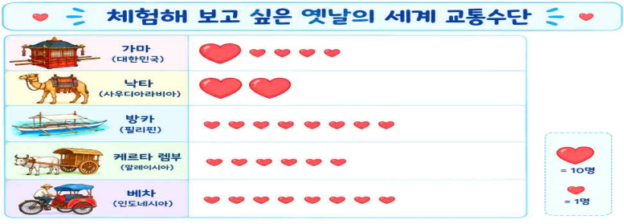 | ||
【활동1】 그림그래프 읽는 법 발견하기 【활동2】 그림그래프 해석하기 【활동3】 그림그래프로 문제 만들기 |
평가 계획 | 평가내용 | 척도 | 채점 기준 | 평가 방법 |
|---|---|---|---|---|
그림그래프를 보고 여러 가지 통계적 사실을 찾아 설명할 수 있는가? | 매우 잘함 | 그림그래프를 보고 여러 가지 통계적 사실을 정확하게 설명할 수 있다. | 서술 | |
잘함 | 그림그래프를 보고 여러 가지 통계적 사실을 찾아 설명할 수 있다. | |||
보통 | 그림그래프에서 단편적인 사실을 찾을 수 있다. | |||
이주배경학생 평가 시 유의점 | 이주배경학생이 그림그래프의 주제와 항목을 이해하기 위해 번역기를 활용할 수 있도록 하며, 그림 크기에 따라 단위가 달라짐을 이해했는지 수로 나타내 볼 수 있도록 한다. 그 뒤 서술에 어려움을 겪을 경우에는 구술 또는 번역기를 통해 서술할 수 있도록 하여 그림그래프를 보고 통계적 사실을 찾을 수 있는지에 중점을 두어 평가한다. | |||
※ 그림그래프를 보고 알 수 있는 것을 찾아봅시다.
1. 위 그림그래프에서 알 수 있는 것을 찾아 써 봅시다.
2. 위 그림그래프를 보고 알 수 있는 내용으로 문제를 만들어 봅시다.
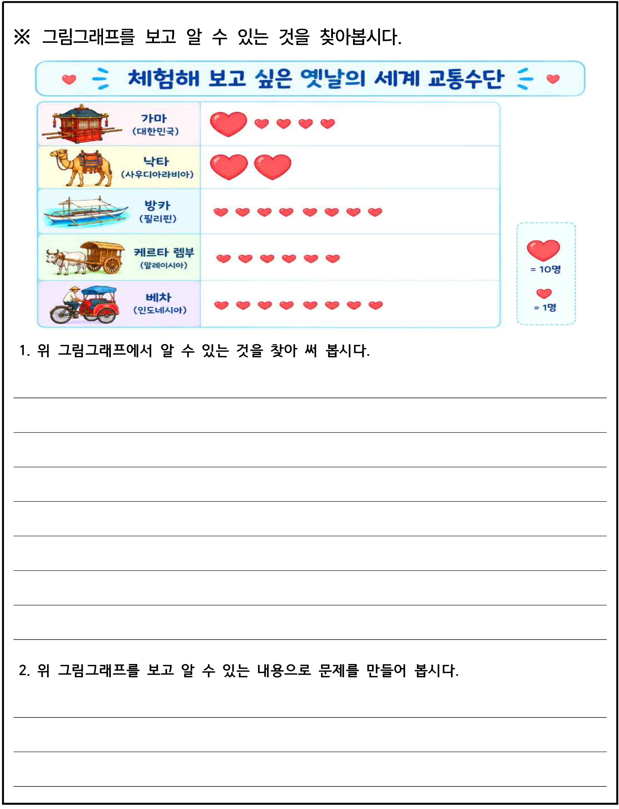
융합과목 | 수학, 사회, 국어 | 대 상 | 3학년 | 프로젝트 단계 | nite (협력하기) | 지도교사 | |||||
|---|---|---|---|---|---|---|---|---|---|---|---|
프로젝트 | 세계의 문화를 그림그래프로 나타내기 (4/7) | ||||||||||
성취기준 | [4수04-01] 자료를 수집하여 그림그래프나 막대그래프로 나타내고 해석할 수 있다. | ||||||||||
학습목표 | 자료에 알맞은 그림과 단위를 정하여 표를 그림그래프로 나타낼 수 있다. | ||||||||||
수업전략 | 수업모형 | 문제해결 학습 모형 | 교과 역량 | 문제해결·정보처리, 의사소통 역량 | |||||||
다문화 주도성 | | | |||||||||
☑ | ☑ | □ | □ | ||||||||
단계 (시간) | 학습요소 | 교수·학습 활동 | 자료(▶) 및 유의점(☞) | ||||||||||||
|---|---|---|---|---|---|---|---|---|---|---|---|---|---|---|---|
문제 확인하기 (5′) | 동기유발 | ▣ 학습동기 유발 ◦ 세계 문화 그림그래프를 보고, 배운 내용 떠올리기 ∙ 그림그래프에는 어떤 나라들이 있나요? ∙ 그림그래프의 그림 한 개는 얼마를 나타내나요? | ▶ 프레젠테이션 ☞ 한국과 3학년 이주배경학생과 관련있는 나라를 다룬다. | ||||||||||||
공부할 문제 파악 | ▣ 공부할 문제 확인 ♣ 그림그래프로 나타내는 방법을 알아보고 익혀봅시다. | ||||||||||||||
문제해결방법 탐색하기 (10′) | 방법 알아보기 | ▣ 【활동1】 그림그래프로 나타내는 방법 알아보기 ◦ 자료에 어울리는 그림과 단위 생각하기 ∙ 어떤 그림과 단위로 나타내면 좋을지 먼저 생각해 봅시다. ◦ 그림그래프로 나타내는 순서 알아보기 ∙ 그림과 단위를 정하고, 수량을 나타내고 제목을 써 봅시다. ∙ 전자칠판에서 그림을 옮겨 수량을 나타내어 봅시다. | ▶ 프레젠테이션, 교과서, 구글 번역 ☞ 100/10/1 등 필요한 단위를 고르며, 같은 그림은 같은 수를 뜻하는 것을 안내한다. | ||||||||||||
문제 해결하기 (20‘) | 방법 익하기 | ▣ 【활동2】 그림그래프로 나타내는 방법 익히기 ◦ 세계 문화 자료를 살펴보며 문화 존중하기 <세계 문화 체험 부스 방문자 수 (가상 연습자료)>
∙ 배운 순서에 따라 표를 그림그래프로 나타내어 봅시다. ∙ 표의 수량과 그림그래프의 수량이 같은지 확인해 봅시다. | ▶ 연습용 표, 그래프지 ☞ 연습을 위한 가상 표를 활용하며, 방문자 수가 문화의 좋고 나쁨을 뜻하지는 않음을 안내한다. | ||||||||||||
비교하기 | ▣ 【활동3】 친구의 그림그래프와 비교하기 ◦ 그림과 단위의 선택 이유 비교하기 ∙ 그림과 단위를 선택한 이유를 짝에게 설명해 봅시다. ∙ 표현이 달라도 같은 수량을 나타내는지 확인해 봅시다. ◦ 친구의 설명을 듣고 자신의 표현 점검하기 ∙ 표와 비교하며 필요한 부분을 함께 고쳐 봅시다. | ▶ 그래프지, 구글 번역, 학습 어휘표 ☞ 표현이 어려운 이주배경학생은 번역을 활용할 수 있도록 하며, 학습 어휘표를 제공한다. | |||||||||||||
평가 하기 (5′) | 학습내용 정리하기 | ▣ 학습내용 정리 ◦ 배운 내용과 느낀 점 이야기하기 ∙ 그림그래프로 나타내는 방법을 정리해 봅시다. ∙ 연습하며 알게 된 점과 친구에게 배운 점을 말해 봅시다. | |||||||||||||
▣ 차시 예고 ♣ 세계 문화 조사 자료를 함께 만들어 봅시다. |
일 시 | 대 상 | 3학년 3반 | 교과서 | 수학 149~150쪽 | 지도교사 | ||||||||||
|---|---|---|---|---|---|---|---|---|---|---|---|---|---|---|---|
프로젝트 | 세계의 문화를 그림그래프로 나타내기 (5/7) | nite | |||||||||||||
본시 성취기준 | [4수04-01] 자료를 수집하여 그림그래프나 막대그래프로 나타내고 해석할 수 있다. | 본시 관련교과 | 수학, 사회, 국어 | ||||||||||||
학습목표 | 세계 문화 조사 자료를 친구들과 함께 만들 수 있다. | ||||||||||||||
수업 모형 | 문제해결 학습 모형 | 교과 역량 | 문제해결, 의사소통, 정보처리 역량 | ||||||||||||
수업전략 | 수업 의도 | - 조사 주제 및 항목과 자료 수집 방법의 의미를 이해하고, 세계 문화 선호도를 조사할 자료를 만든다. 특히 본 학급의 이주배경학생과 3학년 학생들의 이주배경국가인 한국, 사우디아라비아, 말레이시아, 필리핀, 인도네시아의 문화 제재를 활용하여 문화적 다양성과 자긍심을 갖도록 한다. - 각 모둠이 옷, 음식, 놀이, 관광지를 하나씩 맡아 디지털 디자인 도구인 미리캔버스로 협업한다. 또한 모둠의 모든 학생들이 각자의 역할을 맡아, 서로의 의견을 반영하고 발표에 참여하도록 한다. | |||||||||||||
다문화 주도성 | | | |||||||||||||
☑ | ☑ | ☑ | ☐ | ||||||||||||
이주배경학생 지도계획 | - 이주배경학생의 한국어 수준과 발표 선호도를 사전에 확인하고, 수업에 도움이 될 수 있는 수업어휘표와 번역을 지원한다. - 이주배경학생의 발표 순서를 미리 정하고 자기 문장을 연습하게 한다. 발표를 어려워할 경우, 학습지를 보고 읽거나 교사가 도움을 주는 등의 보조적인 지원을 한다. | ||||||||||||||
단계 (시간) | 학습요소 | 교수·학습 활동 | 자료(▶) 및 유의점(☞) | ||||||||||
|---|---|---|---|---|---|---|---|---|---|---|---|---|---|
문제 확인하기 (4′) | 동기유발 | ▣ 학습동기 유발 ◦ 설명이 부족한 조사 자료 살펴보기 ∙ 이름만 보고 어떤 문화를 고를지 알 수 있나요? - 어떤 옷인지 알기 어려워 사진과 설명이 필요합니다. ∙ 친구들이 응답하려면 무엇이 필요한지 말해 봅시다. - 선택할 항목과 스티커를 붙일 곳이 필요합니다. | ▶ 프레젠테이션, 학습어휘표, 구글번역 ☞ 이주배경학생의 학습을 지원하기 위한 학습어휘표 및 구글번역을 제공한다. | ||||||||||
공부할 문제 파악 | ▣ 공부할 문제 확인 ♣ 세계 문화 조사 자료를 함께 만들어 봅시다. | ||||||||||||
학습활동 안내 | ▣ 학습활동 안내 【활동1】 계획하기 【활동2】 만들기 【활동3】 발표하기 | ||||||||||||
문제 해결 방법 탐색하기 (5′) | 조사 자료 계획하기 | ▣ 【활동1】 계획하기 ◦ 조사할 내용과 역할 협의하기
∙ 누구에게 무엇을 조사할지 이야기해 봅시다. - 3학년 전체 학생에게 가장 입어 보고 싶은 옷/가장 먹고 싶은 음식/가장 해보고 싶은 놀이/가장 가고 싶은 관광지를 묻습니다. ∙ 질문에 맞는 다섯 항목과 맡을 역할을 정해 봅시다. - 다섯 나라의 옷을 한 항목씩 정하고 역할을 나눕니다. ◦ 자료 수집 방법과 이유 확인하기 ∙ 복도에 게시하고 스티커 붙이기가 방법으로 알맞은 이유를 말해 봅시다. - 서로 다른 시간에 참여할 수 있고 응답 수를 세기 쉽습니다. | ▶ 프레젠테이션, 학습지 ☞ 3학년 이주배경학생과 관련 있는 나라의 문화를 다룬다. ☞ 모둠별 세계 문화 주제 배정은 사전에 한다. ☞ 손들기, 스티커, 종이 등 여러 수집 방법 중 현재 가장 적절한 방법을 선택하도록 한다. |
단계 (시간) | 학습요소 | 교수·학습 활동 | 자료(▶) 및 유의점(☞) |
|---|---|---|---|
문제 해결하기 (20′) | 조사 자료 함께 만들기 | ▣ 【활동2】 만들기 ◦ 미리캔버스로 협업하여 조사 자료 만들기 ∙ 모둠 친구들과 함께 서로의 문화와 의견을 존중하며, 미리캔버스로 모둠의 조사 자료를 만들어 봅시다. - 사진과 짧은 설명을 골라 넣고 함께 다듬습니다. ∙ 질문, 다섯 항목, 응답 안내를 넣어 봅시다. - 한 항목을 골라 스티커 한 개를 붙이도록 안내합니다. ◦ 조사 자료를 점검하고 발표 준비하기 ∙ 학습지로 점검하고 모둠에서 함께 고쳐 봅시다. - 질문과 항목이 맞는지, 응답할 곳이 있는지 봅니다. ∙ 발표 순서를 표시하고 자기 문장을 연습해 봅시다. | ▶ 프레젠테이션, 스마트패드, 미리캔버스, 학습지 ☞ 어느 문화가 더 좋고 나쁨을 가르지 않도록 안내한다. ☞ 미리캔버스의 접속 및 권한을 미리 확인한다. |
해결 과정 공유하기 (8′) | 조사 자료 모둠 발표하기 | ▣ 【활동3】 발표하기 ◦ 만든 모둠별 조사 자료를 발표하기 ∙ 모둠별로 나와 자기 모둠이 만든 조사 자료를 발표해 봅시다. 한 사람씩 문장을 이어 말해 봅시다. - 학생① 조사 주제 → 학생② 조사 항목 → 학생③ 조사 방법 → 학생④ 조사 방법을 말합니다. ∙ 다른 모둠의 자료를 보고 잘한 점을 살펴봅시다. | ▶ 프레젠테이션, 미리캔버스, 학습지 ☞ 이주배경학생이 어려워할 경우, 교사가 보조적인 지원을 한다. ☞ 다른 모둠의 자료를 보고 비난하지 않고 격려할 수 있도록 안내한다. |
평가하기 (3′) | 학습내용 정리 | ▣ 학습내용 정리하기 ◦ 배운 내용과 문화 및 협력 경험 돌아보기 ∙ 오늘 협력을 통해 문제를 해결한 소감을 말해 봅시다. - 친구의 의견을 듣고 스티커 붙일 칸을 넓혔습니다. ∙ 오늘 문화에 대해 생긴 관심과 궁금증을 말해 봅시다. - 세계의 다양한 전통 옷에 대해 더 조사해보고 싶습니다. | ☞ 협력 경험과 문화에 대한 관심을 함께 돌아보게 한다. |
▣ 차시 예고 ♣ 조사 결과를 표와 그림그래프로 나타내어 봅시다. | ☞ 교사가 조사 자료를 인쇄하여 복도에 게시한다. |
판서 계획 | 6. 그림그래프 | ||
|---|---|---|---|
♣ 세계 문화 조사 자료를 함께 만들어 봅시다. | ∎ 1모둠: 가장 입어 보고 싶은 옷은 무엇인가요? ∎ 2모둠: 가장 먹고 싶은 음식은 무엇인가요? ∎ 3모둠: 가장 해보고 싶은 놀이는 무엇인가요? ∎ 4모둠: 가장 가고 싶은 관광지는 무엇인가요? * 대상: 3학년 전체 / *장소: 3학년 복도 | ||
【활동1】 조사 계획하기 【활동2】 조사 자료 만들기 【활동3】 조사 자료 발표하기 |
평가 계획 | 평가내용 | 척도 | 채점 기준 | 평가 방법 |
|---|---|---|---|---|
세계 문화 조사 자료를 친구들과 함께 만들 수 있는가? | 매우 잘함 | 알맞은 항목 및 응답 방법을 제시하고 맡은 역할을 하고 친구의 의견을 반영하여 조사 자료를 완성할 수 있다. | 관찰법 구술 | |
잘함 | 알맞은 항목 및 응답 방법을 제시하고 맡은 역할을 하여 조사 자료를 만들 수 있다. | |||
보통 | 도움을 받아 항목 및 응답 방법을 확인하고 조사 자료 만들기에 참여할 수 있다. | |||
이주배경학생 평가 시 유의점 | 모둠원과 협업하여 설문지를 제작하는 과정에서 이해와 기여를 확인한다. 학습어휘표 및 번역을 허용하고 한국어 유창성으로 수학적 이해를 판단하지 않는다. | |||
3학년 ( )반 이름( ), J 나의 모둠: ( )모둠
1. 계획하기
- 조사 주제 “무엇을 조사하나요?”
□1모둠: 가장 입어 보고 싶은 옷은 무엇인가요?
□2모둠: 가장 먹고 싶은 음식은 무엇인가요?
□3모둠: 가장 해보고 싶은 놀이는 무엇인가요?
□4모둠: 가장 가고 싶은 관광지는 무엇인가요?
- 조사 항목 “어떤 것들 중에서 고르나요?”
- 조사 대상과 방법 “누구에게, 어떻게 조사하나요?”
- 그 이유 “이 방법이 알맞은 이유는 무엇인가요?”
※ 함께 이야기한 내용을 3번 발표하기에 바로 적어요!
2. 함께 만들고 점검하기
□ 조사 질문에 맞는 항목을 넣었나요?
□ 사진과 설명으로 각 항목을 이해할 수 있나요?
□ 몇 가지를 고르고 어떻게 응답하는지 안내했나요?
□ 응답할 공간을 충분히 마련했나요?
□ 문화를 존중하며 나의 역할을 열심히 하였나요?
* 나의 역할: □의견 내기 □자료 고르기 □설명 다듬기 □편집하기
3. 모둠 발표하기
발표자 발표 문장
학생①
조사 주제
저희 모둠의 조사 주제는
( ?) 입니다. 예: 저희 모둠의 조사 주제는 가장 가고 싶은 수도는 무엇인가요? 입니다. 학생②
조사 항목
조사 항목은 ( ), ( ),
( ), ( ), ( ) 입니다. 예: 조사 항목은 서울, 리야드, 쿠알라룸푸르, 마닐라, 자카르타입니다. 학생③
조사 대상
조사 대상은 ( ) 입니다. 예: 조사 대상은 3학년 전체 학생입니다. 학생④
조사 방법
조사 방법은 ( )입니다. 감사합니다. 예: 조사 방법은 스티커 붙이기입니다.
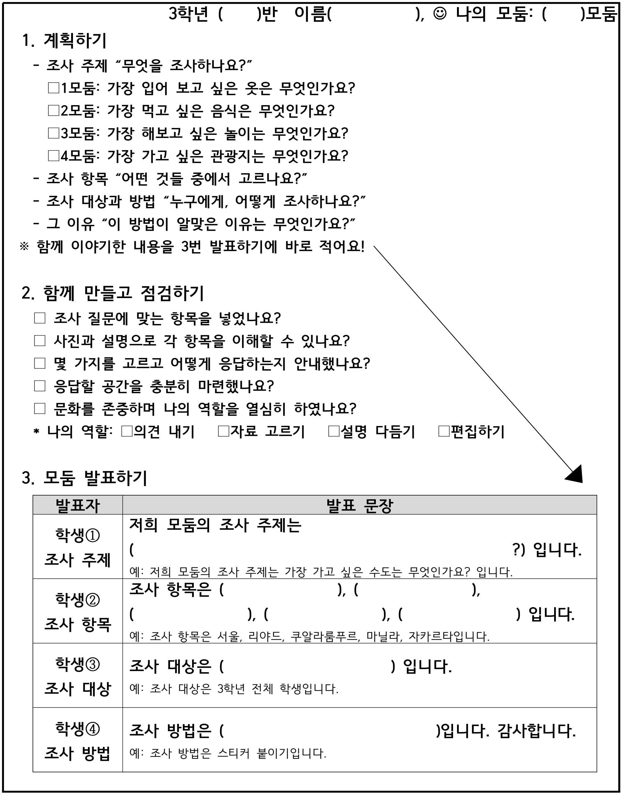
융합과목 | 수학 | 대 상 | 3학년 | 프로젝트 단계 | ake (표현하기) | 지도교사 | |||||
|---|---|---|---|---|---|---|---|---|---|---|---|
프로젝트 | 그림그래프로 그리는 지구촌 세상(6/7) | ||||||||||
성취기준 | [4수04-01] 자료를 수집하여 그림그래프나 막대그래프로 나타내고 해석할 수 있다. | ||||||||||
학습목표 | 자료를 조사하여 그림그래프로 나타내 봅시다. | ||||||||||
수업전략 | 수업모형 | 문제해결 학습 모형 | 교과 역량 | 정보처리, 의사소통 | |||||||
다문화 주도성 | | | |||||||||
☑ | ☑ | ☐ | ☑ | ||||||||
단계 (시간) | 학습요소 | 교수·학습 활동 | 자료(▶) 및 유의점(☞) |
|---|---|---|---|
문제 확인하기 (5′) | 동기유발 | ▣ 학습동기 유발 ◦ 모둠별 조사 자료 살펴보기 ∙ 친구들의 선택을 어떻게 한눈에 보여줄 수 있나요? | ▶ 모둠별 조사 자료 |
공부할 문제 파악 | ▣ 공부할 문제 확인 ♣ 자료를 조사하여 그림그래프로 나타내 봅시다. | ||
문제해결방법 탐색하기 (10′) | 선호도 조사 | ▣ 【활동1】 표로 정리하기 ◦ 자료를 조사하고 표로 정리하기 ∙ 자료 수집 방법에는 무엇이 있나요? ∙ 모둠별로 자료 수집 방법을 정하고, 그렇게 정한 이유를 발표해 봅시다. ∙ 모둠별로 자료를 조사해 봅시다. ∙ 수집한 자료의 수를 정확히 세어 표로 나타내 봅시다. | ▶ 모둠별 조사 자료 ☞ 다른 학급의 응답은 사전에 확보하고, 본시에서 조사한 우리 반의 응답과 합산하여 정리한다. |
문제 해결하기 (20‘) | 표로 정리 | ▣ 【활동2】 그림그래프로 나타내기 ◦ 표를 보고 그림그래프로 나타내기 ∙ 모둠별로 어떤 그림으로 나타낼지 정해 봅시다. ∙ 그림 한 개가 몇 명을 나타내도록 하면 좋을까요? ∙ 그림이 나타내는 수를 표시하고, 그림그래프를 완성해 봅시다. ∙ 그림그래프에 알맞은 제목을 써 봅시다. | ☞ 수집한 자료를 그림그래프로 바로 나타내는 것에 불편함을 느껴 조사한 자료를 표로 나타내는 것의 필요성에 대해 생각하게 한다. |
그림그래프 제작 | ▣ 【활동3】 그림그래프 비교하기 ◦ 그림그래프 검토하기 ∙ 표에 나타난 정보를 빠짐없이 그림그래프에 모두 나타내었는지 확인해 봅시다. ◦ 디지털 그림그래프와 비교하기 ∙ 같은 자료를 디지털 도구에 입력하여 그림그래프를 만들어 봅시다. ∙ 모둠별로 만든 그래프와 디지털 도구로 만든 그래프를 비교해 봅시다. | ||
평가 하기 (5′) | 학습내용 정리 및 성찰 | ▣ 학습내용 정리 ◦ 배운 내용과 느낀 점 이야기하기 ∙ 자료를 그림그래프로 나타내었을 때 좋은 점을 말해 봅시다. | |
▣ 차시 예고 ♣ 그림그래프를 활용해 발표해 봅시다. |
일 시 | 대 상 | 3학년 4반 | 교과서 | 수학 149~151(7/7) | 지도교사 | ||||||||||
|---|---|---|---|---|---|---|---|---|---|---|---|---|---|---|---|
프로젝트 | 세계의 문화를 그림그래프로 나타내기 (7/7) | ake | |||||||||||||
본시 성취기준 | [4수04-01] 자료를 수집하여 그림그래프나 막대그래프로 나타내고 해석할 수 있다. [4국01-05] 목적과 주제에 알맞게 자료를 정리하여 자신감 있게 발표한다. | 본시 관련교과 | 수학, 사회, 국어 | ||||||||||||
학습목표 | 그림그래프를 해석하여 발표할 수 있다. | ||||||||||||||
수업 모형 | 문제해결 학습 모형 | 교과 역량 | 정보처리, 의사소통 | ||||||||||||
수업전략 | 수업 의도 | - 세계 문화 조사 결과를 친구들에게 알리기 위해 그림그래프에서 알 수 있는 내용을 발표 순서에 맞게 정리할 필요가 있다. 디지털 발표 자료와 해석 문제를 만들고 수량을 근거로 설명하며 자료를 활용한 발표 방법을 익히도록 한다. - 우리나라와 이주배경학생 모국의 문화를 소재로 삼아 이주배경학생과 비이주배경학생 모두에게 흥미로운 학습주제가 되도록 한다. 서로의 문화에 관심을 갖고 다양한 선택을 존중하도록 한다. | |||||||||||||
다문화 주도성 | | | |||||||||||||
☑ | ☑ | ☑ | ☑ | ||||||||||||
이주배경학생 지도계획 | 필리핀·인도네시아 배경 학생을 포함하여 학생별 한국어 이해와 표현 수준을 살핀다. 필요한 학생에게 발표 문장 틀을 제공한다. 문화 경험은 희망할 때 나누고, 자신의 강점을 살린 역할을 선택하여 발표에 참여하도록 돕는다. | ||||||||||||||
단계 (시간) | 학습요소 | 교수·학습 활동 | 자료(▶) 및 유의점(☞) |
|---|---|---|---|
문제 확인하기 (5′) | 동기유발 | ▣ 학습동기 유발 ◦ 지난 시간에 만든 그림그래프 살펴보기 ∙ 우리 모둠의 조사 결과를 친구들에게 알려주려면 어떻게 해야 할까요? - 그림그래프에서 알 수 있는 내용을 정리하여 발표합니다. | ▶ 그림그래프 |
공부할 문제 파악 | ▣ 공부할 문제 확인 ♣ 그림그래프를 해석하여 발표해 봅시다. | ||
학습활동 안내 | ▣ 학습활동 안내 【활동1】 그림그래프 해석하기 【활동2】 발표자료 만들기 【활동3】 그림그래프 발표하기 | ||
문제 해결 방법 탐색 하기 (8′) | 그림의 의미와 수량을 읽고 비교하여 의미 찾기 | ▣ 【활동1】 그림그래프 해석하기 ◦ 그림그래프 해석하기 ∙ 그림 한 개는 몇 명을 나타내나요? - 큰 그림은 10명, 작은 그림은 1명을 나타냅니다. ∙ 두 항목의 학생 수를 비교하면 어떤 내용을 알 수 있나요? - [항목]은 [항목]보다 [ ]명 더 많다는 것을 알 수 있습니다. ∙ 선택한 학생 수가 적으면 그 문화가 덜 소중한 것일까요? - 선택한 학생 수가 적은 것이고 모든 문화는 소중합니다. | ▶ 모둠별 그림그래프, 활동지 ☞ 그림의 단위와 항목별 수량을 근거로 해석하며, 선호도를 문화의 우열로 판단하지 않도록 한다. |
단계 (시간) | 학습요소 | 교수·학습 활동 | 자료(▶) 및 유의점(☞) |
|---|---|---|---|
문제 해결 방법 탐색 하기 (10′) | 해석한 내용으로 발표 준비하기 | ▣ 【활동2】 발표자료 만들기 ◦ 디지털 발표자료 만들기 ∙ 발표 자료에는 어떤 내용이 들어가면 좋을까요? - 그림그래프를 설명하는 내용입니다. - 친구들이 그림그래프를 보고 풀 수 있는 문제입니다. ∙ 그림그래프에서 알 수 있는 내용 2가지와 친구들이 풀 문제 1가지를 넣어 발표 자료를 만들어 봅시다. ∙ 모둠별로 역할을 나누어 발표를 연습해 봅시다. | ▶ 패들릿 샌드박스, 스마트패드, 활동지 ☞ 교사가 그래프 사진을 모둠별 샌드박스 카드에 미리 넣어 둔다. |
문제 해결하기 (12′) | 그림그래프를 활용하여 발표하기 | ▣ 【활동3】 그림그래프 발표하기 ◦ 그림그래프를 활용하여 발표하기 ∙ 그림그래프에서 해석한 내용을 발표해 봅시다 - 조사에 응답한 학생 중 [항목]을 선택한 학생은 [ ]명으로 가장 많습니다. - [항목]을 선택한 학생은 [항목]보다 [ ]명 더 많습니다. ∙ 모둠별로 친구들이 준비한 그림그래프의 문제를 풀어 봅시다. - 두 항목의 학생 수를 각각 구한 뒤 빼면 [ ]명입니다. ∙ 그래프의 어느 부분을 보고 답했는지 이야기해 봅시다. - 그림의 단위와 두 항목의 그림 수를 보고 구했습니다. | ▶ 패들릿 샌드박스, 미니보드 |
평가하기 (5′) | 학습내용 정리 | ▣ 학습내용 정리하기 ◦ 배운 내용 정리하기 ∙ 우리 모둠이나 다른 모둠의 발표를 칭찬해 봅시다. - 발표자료에 글과 그림그래프를 어울리게 배치했습니다. - 그림의 단위와 학생 수를 근거로 잘 설명했습니다. ∙ 여러 나라의 문화를 알아보며 느낀 점을 이야기해 봅시다. - 다른 나라의 문화를 새롭게 알게 되어 신기했습니다. |
판서 계획 | 6. 그림그래프 | ||
|---|---|---|---|
♣ 그림그래프를 해석하여 발표해 봅시다. | * 그림그래프 해석하기 [항목]은 [항목]보다 [ ]명 더 많습니다/적습니다. [항목]이 가장 많습니다/적습니다. | ||
【활동1】 그림그래프 해석하기 【활동2】 발표자료 만들기 【활동3】 발표하기 |
평가 계획 | 평가내용 | 척도 | 채점 기준 | 평가 방법 |
|---|---|---|---|---|
그림그래프를 활용하여 발표자료를 정리하고 발표할 수 있는가? | 매우 잘함 | 그림그래프의 단위와 수량을 정확히 해석하여 발표 자료를 짜임새 있게 정리하고, 그래프를 근거로 자신감 있게 발표할 수 있다. | 관찰법, 구술 | |
잘함 | 그림그래프에서 알 수 있는 내용을 발표 자료로 정리하고, 그래프를 활용하여 발표할 수 있다. | |||
보통 | 교사나 친구의 도움을 받아 그림그래프에서 알 수 있는 내용을 정리하고, 맡은 내용을 짧게 발표할 수 있다. | |||
이주배경학생 평가 시 유의점 | 한국어 표현이나 기기 조작의 능숙함만으로 수학적 이해를 판단하지 않는다. 그림 가리키기, 수량 표시와 짧은 말로 그래프 해석을 추가 확인한다. 발표 문장 틀을 제공하고, 그래프 활용과 맡은 내용의 전달을 관찰한다. 문화 경험 나누기는 자발적으로 참여하도록 한다. | |||
3학년 ( )반 이름( ), J 나의 모둠: ( )모둠
1. 그림그래프 해석하기
①
②
2. 그림그래프 문제 만들기
문제
정답
3. 모둠 발표하기
발표자 발표 문장
안녕하세요. 저희는 ( )모둠입니다. 저희 모둠은 친구들이 좋아하는 ( )을/를 조사하여
그림그래프로 나타냈습니다. 이 그림그래프에서 큰 그림 한 개는
( )명, 작은 그림 한 개는 ( )명을 나타냅니다. 그림그래프를 보고 알 수 있는 내용을 두 가지 말씀드리겠습니다. 첫째, ( ).
둘째, ( ).
이제 저희 모둠이 준비한 문제를 내겠습니다. “( )?”
정답은 ( )입니다. 그림그래프에서 (
)이므로 그렇게 알 수 있습니다. 저희 모둠의 발표를 들어 주셔서 감사합니다.
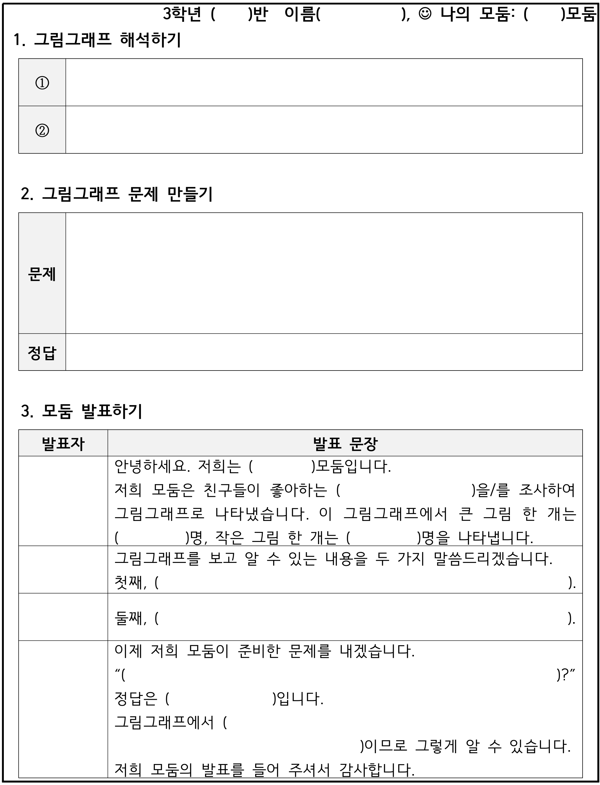
도시탐험대, 자연과 사람을 잇는 세계 도시 여행
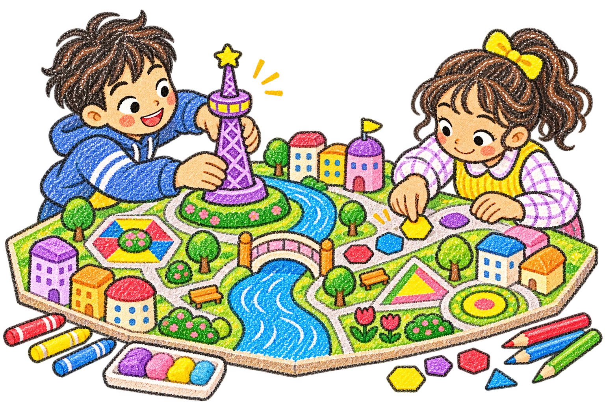
| 차시 | 교과 | 학습 주제 | 교과 역량 |
|---|---|---|---|
| 1 | 사회·국어 | 도시의 뜻을 알아보고 방문 경험 나누기 | 정보 활용 능력 |
| 2 | 사회 | 세계 도시를 살펴보고 탐험 계획 세우기 | 의사소통 및 협업 능력 |
| 3 | 국어·사회 | 탐험 도시의 친구에게 우리 지역을 소개하는 편지 쓰기 | 공동체·대인 관계 역량 |
| 4 | 수학·사회 | 두 도시의 기온을 조사해 꺾은선그래프로 나타내기 | 문제해결 역량 |
| 5~6 | 미술·사회 | 탐험 도시의 랜드마크를 찰흙으로 표현하기 | 창의·융합 역량 |
| 7 | 수학·사회 | 도시 공간의 다각형에서 대각선 알아보기 | 추론 역량 |
| 8 | 수학·미술 | 다각형 모양 조각으로 도시 공간 표현하기 | 문제해결 역량 |
설계 의도 본 프로젝트는 초등학교 4학년 학생들이 도시탐험대가 되어 세계 여러 도시를 탐색하고, 도시의 모습과 특징을 글·자료·그래프·조형물·지도로 표현하는 과정에서 다문화 수용성과 자기주도적 학습역량, 글로컬 시민성, 주도적 적응력을 함양하는 것을 목적으로 한다. 학생들은 세계 여러 도시의 특징을 탐구하며 서로 다른 자연환경과 인문환경이 나타남을 이해하도록 한다. 이후 탐험한 도시를 대상으로 편지를 쓰고, 기온 자료를 꺾은선그래프로 나타내며, 도시의 랜드마크를 찰흙으로 표현하고, 다각형을 활용하여 도시탐험지도를 제작한다. 특히 세계 여러 도시의 모습을 탐색하는 과정에서 특정 도시나 문화를 우열의 관점에서 바라보지 않고 각 도시가 지닌 고유한 자연환경과 생활 모습의 다양성을 존중하는 태도를 기를 수 있게 하고자 한다.
| 융 합 과 목 | 사회 | 3. 다양한 환경과 삶의 모습 | 성취 기준 | [4사10-02] 사례에서 도시의 인구, 교통, 산업 등의 특징을 탐구하고, 도시에서의 삶의 모습을 이해한다. |
|---|---|---|---|---|
| 수학 | 6. 다각형 | [4수03-11] 다각형과 정다각형을 이해한다. | ||
| 국어 | 3. 오가는 마음 | [4국03-04] 목적과 주제를 고려하여 독자에게 마음을 전하는 글을 쓴다. | ||
| 미술 | 7. 찰흙을 조물조물 | [4미02-01] 관찰과 상상으로 아이디어를 떠올려 표현 주제를 구체화할 수 있다. |
| 차시 | 프로젝트 단계 | 주요 학습 내용 | 관련 교과 | 학습자료 | |
|---|---|---|---|---|---|
| 1 | et 준비하기 | | -프로젝트 안내 및 계획하기 -도시가 무엇인지 알아보고, 우리나라 도시를 방문했던 경험 나누기 | 사회, 국어 | 스마트 패드 |
| 2 | -세계 여러 도시의 모습 살펴보기 -탐험할 도시를 정하여 도시 탐험 질문 만들기 | 사회, 국어 | 구글 어스 활동지 | ||
| 3 | xplore 탐구하기 | -탐험 도시의 특징 정리하기 -탐험 도시의 친구에게 우리 지역을 소개하는 편지 쓰기 | 국어, 사회 | 활동지 | |
-두 도시의 월별 평균 기온 자료 살펴보기 -꺾은선그래프로 나타내고, 그래프를 통해 도시의 기후 특징 설명하기 | 수학, 사회 | 캔바 | |||
| 4 | |||||
| 5~6 | nite 협력하기 | -탐험 도시의 랜드마크 살펴보기 -도시의 특징이 드러나는 랜드마크를 찰흙으로 표현하기 | 미술, 사회 | 스마트 패드 찰흙 | |
| 7 | ake 표현하기 | -다각형을 활용하여 도시 공간 살펴보기 | 수학, 사회 | 활동지 | |
| 8 | -다각형 모양 조각을 활용하여 도시 공간 표현하기 | 수학, 미술 | 스마트패드 | ||
| ✔세계 여러 지역의 문화적 다양성을 존중하고 편견과 고정관념을 줄이는 경험하기 ✔특정 도시나 문화를 우수함과 열등함의 기준으로 판단하지 않고 각 문화의 특징과 가치 존중하기 |
|---|---|
✔도시의 자연환경, 인문환경, 기후, 랜드마크 등의 정보를 모둠원과 역할을 나누어 조사하기 ✔조사한 자료를 글, 그래프, 조형물, 지도 등 다양한 방법으로 재구성하기 ✔스마트 패드와 다양한 자료에서 필요한 정보를 탐색하고 선택하기 | |
✔세계 여러 도시의 다양한 모습을 탐색하고 서로 다른 환경에서 살아가는 사람들의 삶을 이해하기 ✔우리 지역의 특징과 세계 여러 도시의 모습을 비교하며 지역과 세계가 서로 연결되어 있음을 이해하기 | |
✔탐구 과정에서 새로운 문화와 환경을 만났을 때 궁금한 점을 스스로 질문하고 필요한 정보를 찾아 해결하기 ✔모둠 활동에서 서로 다른 의견을 조율하고 공동의 결과물을 만들어 가는 과정에서 협력적으로 문제 해결하기 |
| 평가내용 | 평가방법 | 매우 잘함 | 잘함 | 보통 | |
|---|---|---|---|---|---|
①도시의 의미 설명하기 [4사10-02] | 관찰법 | 도시 방문 경험을 바탕으로 도시의 의미를 능숙하게 설명할 수 있다. | 도시의 의미를 설명할 수 있다. | 주변의 도움을 받아 도시의 의미를 설명할 수 있다. | |
②세계 도시 탐험 계획 세우기 [4사10-02] | 관찰법 | 세계 여러 도시를 살펴보고, 능숙하게 도시 탐험 계획을 세울 수 있다. | 세계 여러 도시를 살펴보고, 도시 탐험 계획을 세울 수 있다. | 모둠원의 도움을 받아 도시 탐험 계획을 세울 수 있다. | |
③읽는 이를 생각하며 우리 지역을 소개하는 편지 쓰기 [4국03-04] | 논술 | 우리 지역의 다양한 특징이 드러나도록 소개하는 편지를 쓸 수 있다. | 우리 지역의 특징이 드러나도록 소개하는 편지를 쓸 수 있다. | 우리 지역을 소개하는 편지를 쓸 수 있다. | |
④주변 자료를 조사해 꺾은선그래프로 나타내기 [4수04-02] | 관찰법 | 우리 주변에서 자료를 조사하여 꺾은선 그래프로 능숙하게 나타낼 수 있다 | 우리 주변에서 자료를 조사하여 꺾은선 그래프로 나타낼 수 있다 | 친구나 교사의 도움을 받아 우리 주변에서 자료를 조사하여 꺾은선 그래프로 나타낼 수 있다. | |
⑤~⑥환조로 탐험 도시의 랜드마크 표현하기 [4미02-01] | 프로젝트 | 환조의 제작과정을 익혀 대상의 특징이 드러나게 용구를 효과적으로 사용하여 작품을 완성할 수 있다. | 환조의 제작과정을 익혀 표현하고자 하는 대상을 구체적으로 표현할 수 있다. | 대상을 환조로 표현할 수 있다. | |
⑦대각선을 그리고 다각형과 대각선의 관계 설명하기 [4수03-11] | 관찰법 | 대각선을 그어보고 다각형과 대각선의 관계를 설명할 수 있다 | 대각선을 그어보고 다각형과 대각선의 관계를 찾을 수 있다. | 다양한 다각형의 대각선을 그을 수 있다. | |
⑧다각형 모양 조각으로 건축물 만들기 [4수03-12] | 관찰법 | 다양한 다각형 모양 조각을 활용하여 건축물을 능숙하게 만들 수 있다. | 다각형 모양 조각을 활용하여 건축물을 만들 수 있다. | 단순한 다각형 모양 조각을 활용하여 건축물을 만들 수 있다. | |
| 이주배경학생 평가 시 유의점 | |||||
② 모국어 번역 자료를 미리 제공하고, 한국어 유창성보다 자료 관찰·모둠 참여·질문 만들기를 살핀다. | ⑦ 친구와 함께 건축물에서 다각형을 찾고 대각선을 그리는 과정을 통해 수학적 추론·의사소통과 다문화 수용성을 살핀다. | ||||
융합과목 | 사회, 국어 | 대 상 | 4학년 | 프로젝트 단계 | et (준비하기) | 지도교사 | |||||
|---|---|---|---|---|---|---|---|---|---|---|---|
프로젝트 | 도시탐험대, 자연과 사람을 잇는 세계 도시 여행(1/8) | ||||||||||
성취기준 | [4사10-02] 사례에서 도시의 인구, 교통, 산업 등의 특징을 탐구하고, 도시에서의 삶의 모습을 이해한다. | ||||||||||
학습목표 | 도시가 무엇인지 설명할 수 있다. | ||||||||||
수업전략 | 수업모형 | 개념 학습 모형 | 교과 역량 | 정보 활용 능력 | |||||||
다문화 주도성 | | | |||||||||
☑ | ☑ | ☑ | ☐ | ||||||||
단계 (시간) | 학습요소 | 교수·학습 활동 | 자료(▶) 및 유의점(☞) |
|---|---|---|---|
문제 제기 (5′) | 동기유발 | ▣ 학습동기 유발 ◦ 도시 텔레파시 놀이하기 ∙ 떠오르는 단어 5개를 쓰고, 점수를 확인해 봅시다. | ▶ 활동지 |
공부할 문제 파악 | ▣ 공부할 문제 확인 ♣ 도시가 무엇인지 알아봅시다. | ||
속성 제시 및 정의 (10′) | 도시의 모습과 의미 알기 | ▣ 【활동1】 뜻 알아보기 ◦ 도시의 모습 살펴보기 ∙ 어떤 모습을 담은 사진인가요? ∙ ‘도시’하면 어떤 단어가 떠오르는지 말해 봅시다. ◦ 도시의 뜻 알아보기 ∙ 도시가 어떤 곳인지 설명해 봅시다. | ▶ 프레젠테이션 ☞ 경험을 바탕으로 도시하면 떠오르는 다양한 이미지를 발표하도록 한다. |
사례 검토 (10′) | 우리나라 도시 방문 경험 공유하기 | ▣ 【활동2】 경험 나누기 ◦ 우리나라 도시를 방문했던 경험 떠올리기 ∙ 학습지에 내가 방문했던 도시에 대해 적어봅시다. ◦ 우리나라 도시를 방문했던 경험 나누기 ∙ 우리나라 지도에는 어떤 도시가 있습니까? ∙ 도시를 방문했던 경험을 말해 봅시다. ∙ 그 중 기억에 남는 장소는 어디입니까? | ▶ 활동지 ☞ 학생들의 경험에서 도시의 개념을 끌어낼 수 있도록 발문한다. |
개념 및 문제 분석 (10′) | 키워드로 도시 분석하기 | ▣ 【활동3】 키워드 매칭하기 ◦ 키워드를 보며 도시 떠올리기 ∙ 키워드를 보고 도시의 이름을 말해 봅시다. ∙ 내가 방문했던 도시로 문제를 낸다면 어떤 키워드가 알맞을지 생각해 봅시다. | ▶ 프레젠테이션 |
평가 (5′) | 학습내용 정리하기 | ▣ 학습내용 정리 ◦ 배운 내용과 느낀 점 이야기하기 ∙ 이번 시간에 새롭게 배운 내용을 말해 봅시다. ∙도시가 무엇인지 말해 봅시다. | |
▣ 차시 예고 ♣ 세계 여러 도시를 살펴보고, 탐험 계획을 세워 봅시다. |
텔레파시 놀이 (제시어: 도시)
떠오르는 단어 점수
1
2
3
4
5
합계
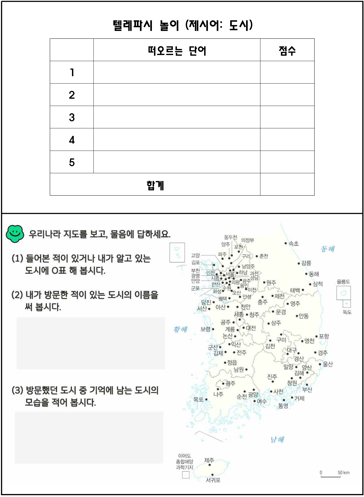
일 시 | 대 상 | 4학년 3반 | 교과서 | 사회 135(11/16) | 지도교사 | ||||||||||
|---|---|---|---|---|---|---|---|---|---|---|---|---|---|---|---|
프로젝트 | 도시탐험대, 자연과 사람을 잇는 세계 도시 여행 (2/8) | et | |||||||||||||
본시 성취기준 | [4사10-02] 사례에서 도시의 인구, 교통, 산업 등의 특징을 탐구하고, 도시에서의 삶의 모습을 이해한다. | 본시 관련교과 | 사회, 국어 | ||||||||||||
학습목표 | 세계 여러 도시의 특징을 살펴보고, 도시 탐험 계획을 세울 수 있다. | ||||||||||||||
수업 모형 | 탐구 학습 모형 | 교과 역량 | 의사소통 및 협업 능력 | ||||||||||||
수업전략 | 수업 의도 | - 스탬프 투어에서 세계 여러 도시의 사진과 정보 자료를 제공하여 학생들이 각 도시의 자연환경과 인문환경, 생활 모습 등을 파악하는 과정에서 세계 도시에 대한 흥미를 느낄 수 있도록 한다. 스탬프 투어 도시는 학생 대상 사전 조사를 통해 관심 있는 도시를 선정하였다. - 학생들은 스탬프 투어에서 여러 도시를 짧게 살펴본 후, 각 모둠에서 정한 도시를 프로젝트 과정에서 깊이 있게 탐험하게 된다. 모둠별 탐험 도시는 자율적으로 선정하며, 도시 선정 이유를 공유하고 도시에 대한 탐험 질문을 생성한다. 이 과정에서 다양한 도시와 문화의 고유한 특성을 존중하도록 지도한다. | |||||||||||||
다문화 주도성 | | | |||||||||||||
☑ | ☑ | ☑ | ☑ | ||||||||||||
이주배경학생 지도계획 | - 이주배경학생이 모국에 대한 정보를 소개할 수 있도록 사전 활동을 계획하며, 여러 도시의 정보 자료를 탐색하는 과정에서 구글 번역기를 활용하도록 한다. | ||||||||||||||
단계 (시간) | 학습요소 | 교수·학습 활동 | 자료(▶) 및 유의점(☞) |
|---|---|---|---|
탐구 문제 파악 (3′) | 동기유발 | ▣ 학습동기 유발 ◦ 사진과 단서로 도시 추리하기 ∙ 사진과 단서를 보고 어떤 도시인지 추측해 봅시다. - 런던인 것 같습니다. ∙ 어떤 도시에 대해 알아보고 싶습니까? - 에펠탑이 있는 파리가 궁금합니다. | ▶ 프레젠테이션 ☞ 자유롭게 말하도록 하며 정답을 맞히는 것보다 근거를 들어 추측하는 데 초점을 둔다. |
공부할 문제 파악 | ▣ 공부할 문제 확인 ♣ 세계 여러 도시를 살펴보고, 탐험 계획을 세워 봅시다. | ||
학습활동 안내 | ▣ 학습활동 안내 【활동1】 스탬프 투어하기 【활동2】 탐험 계획 세우기 | ||
가설 설정 및 탐색 (17′) | 도시별 미션 해결하기 | ▣ 【활동1】 스탬프 투어하기 ◦ 도시별 미션 해결하고 스탬프 모으기 ∙ 사진과 정보 카드를 살펴보고 도시의 특징을 찾아봅시다. ∙ 도쿄의 자연환경과 인문환경은 각각 무엇이 있나요? - 스미다강과 도쿄타워가 있습니다. ∙ 싱가포르에는 어떤 시설이 있나요? - 다양한 문화의 음식이 있는 호커 센터가 있습니다. ∙ 파리의 랜드마크는 무엇인가요? - 에펠탑이라는 높고 독특한 모양의 랜드마크가 있습니다. ∙ 카이로의 자연환경은 어떤가요? - 사막 지형이 있고, 나일강이 흐릅니다. ∙ 각 도시에서 발견한 특징을 탐험 여권에 기록해 봅시다. ∙ 도시별 미션을 해결한 뒤 스탬프를 4개 이상 받아 봅시다. | ▶ 탐험 여권, 미션 카드, 스탬프(스티커), 사진 ☞ 도시마다 미션 해결 시간을 안내하고, 이동 동선을 정해 혼잡을 줄인다. 도시의 우열을 가리지 않게 한다. |
단계 (시간) | 학습요소 | 교수·학습 활동 | 자료(▶) 및 유의점(☞) |
|---|---|---|---|
정보 수집 및 처리 (17′) | 도시 선정하고 질문 만들기 | ▣ 【활동2】 탐험 계획 세우기 ◦ 탐험할 도시 정하기 ∙ 더 알아보고 싶은 도시는 어디인가요? - 도쿄입니다. - 저는 뉴욕에 대해 자세히 알고 싶습니다. ∙ 모둠(또는 개인)별로 더 알아보고 싶은 도시를 정해 봅시다. ∙ 그 도시를 탐험하고 싶은 이유는 무엇입니까? - 평소 랜드마크에 가보고 싶었기 때문입니다. - 도시의 건축물과 사람들의 생활 모습이 궁금합니다. ◦ 도시 탐험을 위한 질문 만들기 ∙ 자연환경과 관련하여. 궁금한 점은 무엇인가요? - 어떤 계절이 있는지 궁금합니다. ∙ 사람들의 생활에 대해 궁금한 점은 무엇인가요? - 어떤 음식을 먹는지 조사하고 싶습니다. ∙ 도시의 특징에 대해 궁금한 점은 무엇인가요? - 대표적인 건축물을 알고 싶습니다. ∙ 가장 궁금한 핵심 질문을 적어봅시다. | ▶ 활동지 ☞ 스탬프 투어 도시 외 추가 도시 목록을 제공하여 학생들의 선택을 돕는다. ▶ 활동지 ☞ 질문을 만들기 어려우면, 모둠에 예시 질문 자료를 제공하여 활동을 돕는다. |
결론 및 일반화 (3′) | 학습내용 정리 | ▣ 학습내용 정리하기 ◦ 배운 내용 정리하기 ∙ 구글 어스에서 세계 여러 나라를 방문해 봅시다. ∙ 오늘 배운 내용과 소감 또는 궁금증을 말해 봅시다. - 리우데자네이루라는 도시를 새로 알게 되었고 사람들의 생활 모습이 궁금해졌습니다. - 스탬프 투어가 재미있었고, 아주 특이한 도시를 찾아 조사해보고 싶은 마음이 듭니다. | ▶ 구글 어스 ☞ 구글 어스로 세계 여러 나라에 호기심을 갖도록 한다. |
▣ 차시 예고 ♣ 탐험 도시의 친구에게 우리 지역을 소개하는 편지를 써봅시다. |
판서 계획 | 3. 다양한 환경과 삶의 모습 | ||||||
|---|---|---|---|---|---|---|---|
♣ 세계 여러 도시를 살펴보고, 탐험 계획을 세워 봅시다. |
| ||||||
【활동1】 스탬프 투어하기 【활동2】 탐험 계획 세우기 | |||||||
평가 계획 | 평가내용 | 척도 | 채점 기준 | 평가 방법 |
|---|---|---|---|---|
세계 도시 탐험 계획을 세울 수 있는가? | 매우 잘함 | 세계 여러 도시를 살펴보고, 능숙하게 도시 탐험 계획을 세울 수 있다. | 관찰법 | |
잘함 | 세계 여러 도시를 살펴보고, 도시 탐험 계획을 세울 수 있다. | |||
보통 | 모둠원의 도움을 받아 도시 탐험 계획을 세울 수 있다. | |||
이주배경학생 평가 시 유의점 | 이주배경학생은 한국어 의사소통에 어려움이 있어 사전에 모국어로 번역한 자료를 활용하도록 한다. 자료 관찰, 모둠 참여, 질문 생성 과정에서 한국어 표현의 유창성만으로 평가하지 않는다. | |||
다른 자연, 다른 사람, 함께 만드는 더 큰 세상!
세계 도시 탐험 여권
도시탐험대, 자연과 사람을 잇는 세계 도시 여행
이름
모둠
세계 도시 스탬프 투어
6개 도시를 탐험하여 각 도시의 특징을 살펴보고 스탬프를 모아보세요! 각 도시의 미션을 해결하고, 발견한 점을 기록해 보세요.
세계는 하나의 마을!
① 일본 도쿄. 미션: 도쿄의 자연환경과 인문환경을 찾아보세요. 발견한 점. 스탬프.
② 싱가포르. 미션: 싱가포르의 도시 시설과 사람들의 생활을 살펴보세요. 발견한 점. 스탬프.
③ 프랑스 파리. 미션: 파리의 랜드마크와 도시의 특징을 찾아보세요. 발견한 점. 스탬프.
④ 이집트 카이로. 미션: 카이로의 자연환경과 사람들이 생활을 살펴보세요. 발견한 점. 스탬프.
⑤ 미국 뉴욕. 미션: 뉴욕의 다양한 사람들과 도시 생활을 살펴보세요. 발견한 점. 스탬프.
⑥ 브라질 리우데자네이루. 미션: 리우데자네이루의 지형과 도시의 모습을 살펴보세요. 발견한 점. 스탬프.
도시 탐험 계획
스탬프 투어에서 만난 도시 중에서 우리가 직접 탐험하고 싶은 도시를 선택하고, 탐험 질문을 만들어 보세요.
1 탐험 도시 선택하기
스탬프 투어에서 탐험한 도시 중에서 선택하기. 선택한 도시.
스탬프 투어에 있는 도시 중에서 선택하기 (추가 도시 목록에서 선택). 선택한 도시.
이 도시를 선택한 이유
다른 도시를 선택해도 좋아요! 다양한 도시를 존중하는 마음으로 탐험해 보세요.
2 탐험 질문 만들기
선택한 도시의 자연환경, 도시 시설, 교통, 산업, 사람들의 생활 등과 관련된 질문을 만들어 보세요.
핵심 질문 (가장 궁금한 질문을 1개 골라보세요.)
궁금한 점을 질문으로 만들면, 탐구가 더 재미있어져요!
3 모둠 역할 나누기
역할, 이름
자료 조사
글쓰기
사진/영상
지도 제작
발표 준비
함께 만드는 우리의 탐험 지도!
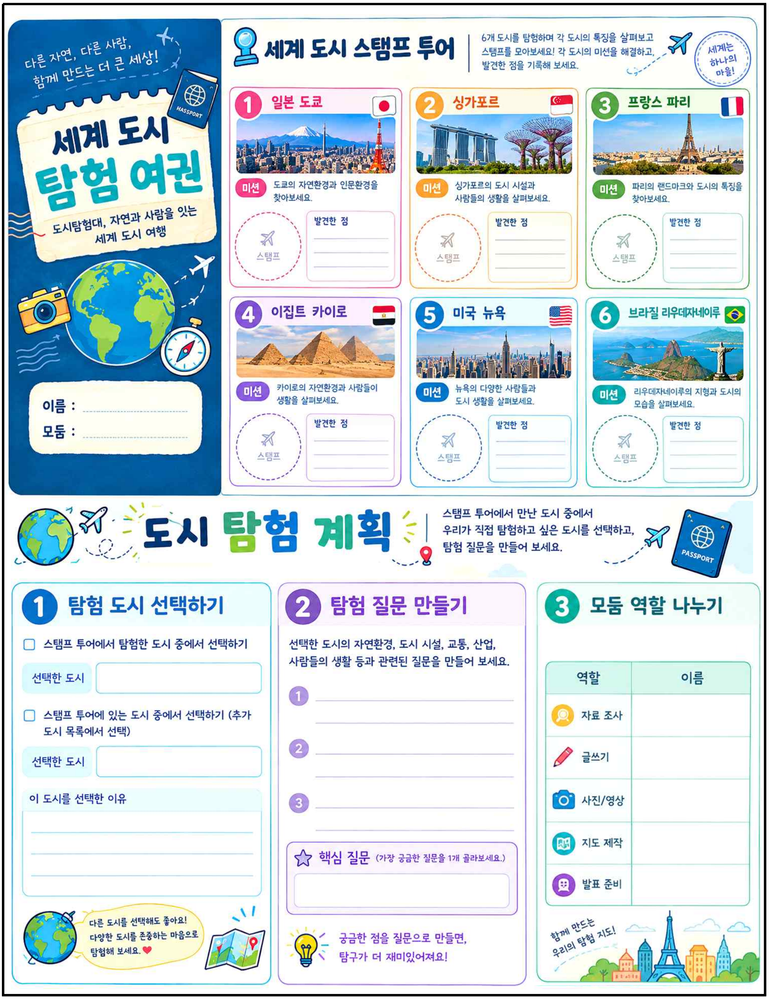
융합과목 | 국어, 사회 | 대 상 | 4학년 1반 | 프로젝트 단계 | xplore (탐구하기) | 지도교사 | |||||
|---|---|---|---|---|---|---|---|---|---|---|---|
프로젝트 | 도시탐험대, 자연과 사람을 잇는 세계 도시 여행(3/8) | ||||||||||
성취기준 | [4국03-04] 목적과 주제를 고려하여 독자에게 마음을 전하는 글을 쓴다. | ||||||||||
학습목표 | 탐험 도시의 친구에게 우리 지역을 소개하는 편지를 쓸 수 있다. | ||||||||||
수업전략 | 수업모형 | 문제해결 학습 모형 | 교과 역량 | 공동체대인 관계 역량 | |||||||
다문화 주도성 | | | |||||||||
☑ | ☑ | ☑ | ☑ | ||||||||
단계 (시간) | 학습요소 | 교수·학습 활동 | 자료(▶) 및 유의점(☞) |
|---|---|---|---|
문제 확인하기 (5′) | 동기유발 | ▣ 학습동기 유발 ◦ 도쿄 친구 미즈하의 편지 살펴보기 ∙ 편지에 적혀있는 도쿄의 특징이 무엇인지 이야기해 봅시다. | ▶ 프레젠테이션 |
공부할 문제 파악 | ▣ 공부할 문제 확인 ♣ 탐험 도시의 친구에게 우리 지역을 소개하는 편지를 써 봅시다. | ||
문제해결방법 찾기 (10′) | 탐험 도시와 우리 지역의 특징 비교하기 | ▣ 【활동1】 탐험 도시와 우리 지역의 특징 비교하기 ◦ 탐험 도시의 특징 살펴보기 ∙ 탐험할 도시의 특징(인구, 자연환경, 산업, 교통 등)에는 무엇이 있었나요? ◦ 탐험 도시와 우리 지역의 특징 비교하기 ∙ 탐험 도시와 우리 지역의 공통점과 차이점을 생각해봅시다. | ▶ 스마트패드 ☞ 이전 프로젝트 수업에서 조사했던 자료를 살펴보며 특징을 비교해본다. |
편지 쓸 내용 계획하기 | ▣ 【활동2】 편지 쓸 내용 계획하기 ◦ 편지 쓸 내용 계획하기 ∙ 편지 글의 짜임을 생각해보고 어떤 내용으로 편지를 쓸지 계획 해 봅시다. ∙ 우리 지역의 특징 중 어떤 내용을 탐험 도시 친구에게 소개 하고 싶은가요? | ||
문제 해결하기 (20′) | 우리 지역 소개 편지쓰기 | ▣ 【활동3】 우리 지역 소개 편지쓰기 ◦ 우리 지역 소개 편지쓰기 ∙ 계획한 내용을 바탕으로 탐험 도시 친구에게 편지를 써 봅시다. | ▶ 프레젠테이션 ▶ 학습지 |
정리하기 (5′) | 학습내용 정리하기 | ▣ 학습내용 정리 ◦ 배운 내용과 느낀 점 이야기하기 ∙ 탐험 도시의 친구에게 우리 지역을 소개하는 편지를 쓰고 느낀 점을 말해 봅시다. | |
▣ 차시 예고 ♣ 꺾은선 그래프를 통해 도시의 기후 특징을 설명해 봅시다. |
받는 사람
첫인사
전하고
싶은 말
끝인사
쓴 날짜
쓴 사람
추신
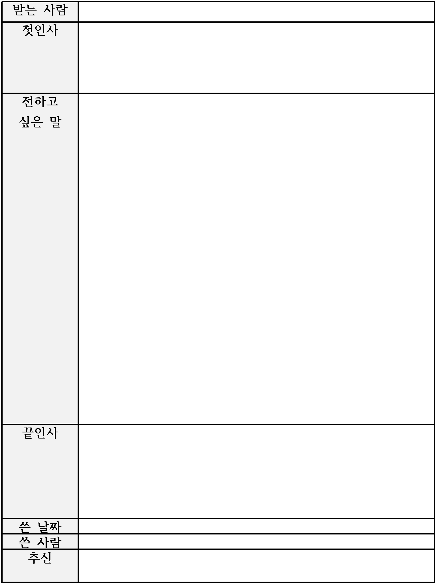
융합과목 | 수학, 사회 | 대 상 | 4학년 | 프로젝트 단계 | xplore (탐구하기) | 지도교사 | |||||
|---|---|---|---|---|---|---|---|---|---|---|---|
프로젝트 | 도시탐험대, 자연과 사람을 잇는 세계 도시 여행(4/8) | ||||||||||
성취기준 | [4수04-02] 자료를 수집하여 꺾은선그래프로 나타내고 해석할 수 있다. | ||||||||||
학습목표 | 자료를 조사하여 꺾은선그래프로 나타낼 수 있다. | ||||||||||
수업전략 | 수업모형 | 문제해결 학습 모형 | 교과 역량 | 문제해결 역량 | |||||||
다문화 주도성 | | | |||||||||
☑ | ☑ | ☑ | ☑ | ||||||||
단계 (시간) | 학습요소 | 교수·학습 활동 | 자료(▶) 및 유의점(☞) |
|---|---|---|---|
문제 확인하기 (5′) | 동기유발 | ▣ 학습동기 유발 ◦ 해외여행갈 때 필요한 것 살펴보기 ∙ 해외여행을 갈 때 필요한 것은 무엇인가요? ∙ 해외여행을 갈 때 옷은 어떻게 가져가야 하나요? | ▶ 프레젠테이션 |
공부할 문제 파악 | ▣ 공부할 문제 확인 ♣ 자료를 조사해 꺾은선그래프로 나타내 봅시다. | ||
문제해결방법 탐색하기 (20′) | 탐험도시 날씨 조사하기 | ▣ 【활동1】 날씨 조사하기 ◦ 탐험 도시 폭염일수 조사하기 ∙ 탐험할 도시를 정해봅시다. ∙ 탐험할 도시의 폭염일수를 조사해봅시다. | ▶ 활동지 ☞ 이주배경학생이 있는 모둠은 이주배경학생의 출신 도시로 정하도록 유도한다. |
조사한 내용을 정리하기 | ▣ 【활동2】 조사내용 정리하기 ◦ 조사한 자료를 정리하기 ∙ 조사한 자료를 표로 정리해 봅시다. ∙ 조사한 자료를 꺾은선그래프로 나타낼 때 가로와 세로에는 각각 무엇을 나타내면 좋을까요? ∙ 세로 눈금 한 칸은 며칠을 나타내면 좋을까요? ∙ 조사한 자료를 꺾은선그래프로 나타내 봅시다. | ||
문제 해결하기 (10‘) | 다양한 그래프 비교하기 | ▣ 【활동3】 그래프 비교하기 ◦ 모둠별로 나타낸 꺾은선 그래프 비교하기 ∙ 모둠별로 나타낸 꺾은선그래프를 비교해 봅시다. ∙ 꺾은선그래프를 보고 알 수 있는 내용은 무엇인가요? ∙ 꺾은선그래프를 보고 내가 탐험할 도시에 맞는 옷차림이 무엇인지 발표해 봅시다. | ▶ 활동지 ☞ 다양한 도시의 기후적 특성을 확인하고 기후에 따른 삶의 방식이 다를 수 있음을 이해하게 한다. |
평가 하기 (5′) | 학습내용 정리하기 | ▣ 학습내용 정리 ◦ 배운 내용과 느낀 점 이야기하기 ∙ 꺾은선그래프를 통해 알 수 있는 탐험 도시의 날씨 특징을 말해 봅시다. | |
▣ 차시 예고 ♣ 탐험 도시의 랜드마크를 살펴봅시다. |
1. 모둠별로 조사할 지역을 정해 봅시다.
2. 기상자료개방포털 누리집에서 폭염일수를 조사해 봅시다.
3. 조사한 자료를 정리하여 표로 나타내어 봅시다.
4. 표를 참고하여 꺾은선그래프로 나타내 봅시다.
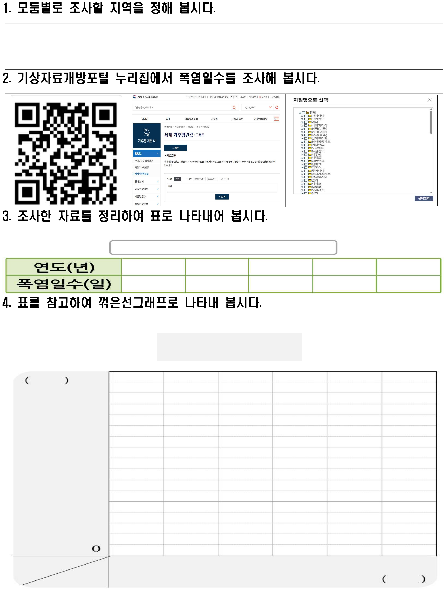
융합과목 | 미술, 사회 | 대 상 | 4학년 1반 | 프로젝트 단계 | nite (협력하기) | 지도교사 | |||||
|---|---|---|---|---|---|---|---|---|---|---|---|
프로젝트 | 도시탐험대, 자연과 사람을 잇는 세계 도시 여행(5~6/8) | ||||||||||
성취기준 | [4미02-01] 관찰과 상상으로 아이디어를 떠올려 표현 주제를 구체화할 수 있다. | ||||||||||
학습목표 | 탐험 도시의 랜드마크를 환조로 표현할 수 있다. | ||||||||||
수업전략 | 수업모형 | 프로젝트 학습 모형 | 교과 역량 | 창의융합 역량 | |||||||
다문화 주도성 | | | |||||||||
☑ | ☑ | ☑ | ☑ | ||||||||
단계 (시간) | 학습요소 | 교수·학습 활동 | 자료(▶) 및 유의점(☞) |
|---|---|---|---|
준비하기 (5′) | 동기유발 | ▣ 학습동기 유발 ◦ ‘세계 랜드마크 송’ 부르기 ∙ ‘세계 랜드마크 송’을 부르며 세계 랜드마크의 모습을 살펴봅시다. | ▶ ‘세계 랜드마크 송’ 플래시 |
공부할 문제 파악 | ▣ 공부할 문제 확인 ♣ 탐험 도시의 랜드마크를 환조로 표현 해 봅시다. | ||
계획하기 (30′) | 환조 제작 과정 살펴보기 | ▣ 【활동1】 환조 제작 과정 살펴보기 ◦ 환조의 의미 알기 ∙ 두 작품의 차이점이 무엇일까요? ∙ 초성 퀴즈를 통해 환조의 의미를 알아봅시다. ◦ 찰흙으로 환조 만드는 순서 알아보기 ∙ 섞여 있는 순서 카드를 차례대로 나열해봅시다. ∙ 찰흙 덩어리를 나눌 때 무엇을 고려해서 나누면 좋을까요? | ▶ 프레젠테이션 ☞ 환조와 부조 작품사진 제시를 통해 환조의 의미를 스스로 생각해보도록 한다. |
환조로 표현할 랜드마크 탐색하기 | ▣ 【활동2】 환조로 표현할 랜드마크 탐색하기 ◦ 환조로 표현할 랜드마크 탐색하기 ∙ 탐험 도시의 랜드마크에는 무엇이 있나요? ∙ 환조로 표현할 랜드마크의 모습을 탐색해봅시다. ∙ 환조로 표현할 랜드마크의 특징에는 무엇이 있나요? | ▶ 스마트패드 ☞ 랜드마크 사진이나 영상을 찾아보며 앞, 위, 옆, 사방의 특징을 살피도록 한다. | |
활동하기 (40′) | 랜드마크를 환조로 표현하기 | ▣ 【활동3】 랜드마크를 환조로 표현하기 ◦ 탐험 도시의 랜드마크를 환조로 표현하기 ∙ 탐험 도시의 특징을 살려 환조로 표현 해 봅시다. | ▶ 찰흙, 찰흙주걱, 찰흙판 |
마무리 하기 (5′) | 학습내용 정리하기 | ▣ 학습내용 정리 ◦ 배운 내용과 느낀 점 이야기하기 ∙ 활동을 하면서 좋았던 점, 아쉬운 점 등을 말해 봅시다. ∙ 기억에 남는 작품을 말해 봅시다. | |
▣ 차시 예고 ♣ 다각형을 활용한 도시 탐험지도를 만들어 봅시다. |
일 시 | 대 상 | 4학년 2반 | 교과서 | 수학 140~141(5/10) | 지도교사 | ||||||||||
|---|---|---|---|---|---|---|---|---|---|---|---|---|---|---|---|
프로젝트 | 도시탐험대, 자연과 사람을 잇는 세계 도시 여행 (7/8) | ake | |||||||||||||
본시 성취기준 | [4수03-11] 다각형과 정다각형을 이해한다. | 본시 관련교과 | 수학, 사회 | ||||||||||||
학습목표 | 대각선을 알 수 있다. | ||||||||||||||
수업 모형 | 개념 학습 모형 | 교과 역량 | 추론 역량 | ||||||||||||
수업전략 | 수업 의도 | - 세계 도시를 여행하는 프로젝트 속에서 이주배경학생 모국의 다양한 건축물을 알아보고 다양한 자연환경과 인문환경을 학생들이 체험하여 다문화 수용성을 함양할 수 있게 한다. - 실제 건축물 사진 속에서 다각형을 찾고, 대각선을 그어보는 과정에서 친구들과 협력하여 대각선의 정의를 알아감으로써 자기주도적 학습역량을 함양할 뿐만 아니라 수학적 추론능력을 함양할 수 있도록 한다. | |||||||||||||
다문화 주도성 | | | |||||||||||||
☑ | ☑ | ☑ | ☐ | ||||||||||||
이주배경학생 지도계획 | - 이주배경학생이 모국의 다양한 건축물을 소개할 수 있도록 사전 활동을 계획하며 한국어 수준을 사전에 파악하고 필요한 자료를 준비한다. | ||||||||||||||
단계 (시간) | 학습요소 | 교수·학습 활동 | 자료(▶) 및 유의점(☞) |
|---|---|---|---|
개념 정의하기 (10′) | 동기유발 | ▣ 학습동기 유발 ◦ 미국의 건축물 알아맞히기 ∙ 사진을 보고 어느 나라 건축물인지 알아맞혀 봅시다. - 미국입니다. ∙ 건축물에서 찾을 수 있는 다각형을 이야기해 봅시다. - 사각형입니다. | ▶ 프레젠테이션 ☞ 이주배경학생이 모국의 건축물을 직접 말하게 함으로써 서로의 문화를 이해하게 한다. |
공부할 문제 파악 | ▣ 공부할 문제 확인 ♣ 대각선을 알아봅시다. | ||
학습활동 안내 | ▣ 학습활동 안내 【활동1】 대각선 알아보기 【활동2】 대각선 그어보기 【활동3】 대각선 성질알기 | ||
대각선에 대해 알아보기 | ▣ 【활동1】 대각선 알아보기 ◦ 대각선에 대해 알아보기 ∙ 다각형에서 이웃하는 꼭짓점은 어떤 것인가요? - 한 꼭짓점과 같은 선분에 있는 꼭짓점입니다. ∙ 다각형에서 서로 이웃하지 않는 두 꼭짓점끼리 이어봅시다. 서로 이웃하지 않는 두 꼭짓점을 이은 선분을 대각선이라고 합니다. | ▶ 프레젠테이션 ☞ 서로 이웃하지 않은 두 꼭짓점을 찾지 못하는 경우 한 변에 속한 두 꼭짓점이 아닌 두 꼭짓점을 찾아 잇도록 한다. | |
속성 제시하기 (10′) | 다각형과 대각선의 관계 알아보기 | ▣ 【활동2】 대각선 그어보기 ◦ 다각형과 대각선의 관계 알아보기 ∙ 주어진 건축물에서 다각형을 찾아봅시다. - 사각형을 찾을 수 있습니다. ∙ 찾은 다각형에 대각선을 모두 그어봅시다. ∙ 대각선의 수는 몇 개인가요? - 사각형의 대각선은 2개입니다. - 오각형의 대각선은 5개입니다. | ▶ 프레젠테이션, 활동지 ☞ 대각선의 뜻을 생각하며 대각선을 그어 보게 한다. |
단계 (시간) | 학습요소 | 교수·학습 활동 | 자료(▶) 및 유의점(☞) |
|---|---|---|---|
예와 비예 검토하기 (10′) | 대각선을 그을 수 없는 다각형 찾기 변의 수와 대각선의 수의 관계 알아보기 | ◦ 대각선을 그을 수 없는 다각형 찾아보기 ∙ 대각선을 그을 수 없는 다각형은 무엇인가요? - 삼각형입니다. ∙ 삼각형의 대각선을 그을 수 없는 이유는 무엇인가요? - 이웃하지 않는 꼭짓점이 없기 때문입니다. ◦ 변의 수와 대각선의 수의 관계 알아보기 ∙ 변의 수가 많아질수록 대각선의 수는 어떻게 되나요? - 변의 수가 많아질수록 대각선을 더 많이 그을 수 있습니다. ∙ 더 알게 된 점은 무엇인가요? - 사각형은 한 꼭짓점에서 한 개의 대각선을 그을 수 있습니다. - 오각형은 한 꼭짓점에서 두 개의 대각선을 그을 수 있습니다. | ▶ 프레젠테이션, 활동지 ☞ 대각선의 정의를 생각하며 대각선을 그을 수 있는 것과 그렇지 않은 것을 구분할 수 있게 한다. |
개념분석 및 익히기 (5′) | 사각형에서 대각선의 성질 알아보기 | ▣ 【활동3】 대각선 성질알기 ◦ 사각형에서 대각선의 성질 알아보기 ∙ 사각형에 대각선을 모두 그어봅시다. ∙ 두 대각선의 길이가 같은 사각형은 무엇인가요? - 직사각형, 정사각형입니다. ∙ 두 대각선이 서로 수직으로 만나는 사각형은 무엇인가요? - 마름모, 정사각형입니다. ∙ 더 알게 된 점은 무엇인가요? - 평행사변형, 마름모, 직사각형, 정사각형에 두 대각선을 그었을 때 한 대각선이 다른 대각선을 똑같이 둘로 나눕니다. | ☞ 직접 대각선의 길이를 재어봄으로써 사각형의 대각선 성질을 알게 한다. |
평가하기 (5′) | 학습내용 정리 | ▣ 학습내용 정리하기 ◦ 배운 내용 정리하기 ∙ 오늘 배운 내용과 문제를 해결한 소감을 말해 봅시다. - 새로운 도시의 다양한 건축물을 알게 되었습니다. - 제가 직접 보았던 건축물에서 다각형을 찾으니 재미있었습니다. - 다양한 모양의 건축물에서 다각형을 찾고 대각선을 알아보는 것이 재미있었습니다. | ☞ 다양한 나라의 건축물에 숨겨져있는 다각형에 관심을 갖게 하고 그 속에서 대각선을 찾아보게 한다. |
▣ 차시 예고 ♣ 다각형 모양 조각으로 도시 공간을 표현해 봅시다. |
판서 계획 | 6. 다각형 | ||||
|---|---|---|---|---|---|
♣ 대각선을 알아봅시다. |
| ||||
【활동1】 대각선 알아보기 【활동2】 대각선 그어보기 【활동3】 대각선 성질알기 |
평가 계획 | 평가내용 | 척도 | 채점 기준 | 평가 방법 |
|---|---|---|---|---|
대각선을 그어보고 다각형과 대각선의 관계를 설명할 수 있는가? | 매우 잘함 | 대각선을 그어보고 다각형과 대각선의 관계를 설명할 수 있다. | 관찰법 | |
잘함 | 대각선을 그어보고 다각형과 대각선의 관계를 찾을 수 있다. | |||
보통 | 다양한 다각형의 대각선을 그을 수 있다. | |||
이주배경학생 평가 시 유의점 | 이주배경학생이 자국의 건축물에 익숙하더라도 그 속에서 다각형을 찾거나 다각형에서 대각선을 그리는 것은 어려울 수 있으므로, 주변 친구들과 협력할 수 있는 분위기를 조성한다. 이런 과정을 통해 추론능력과 수학적 의사소통능력의 교과역량의 발달과 다문화 수용성 측면을 함께 고려하여 평가한다. | |||
※ 다음 건축물에서 다각형을 찾고 대각선을 그어봅시다.
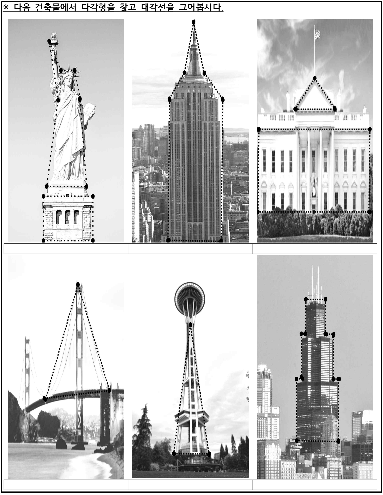
융합과목 | 수학, 미술 | 대 상 | 4학년 | 프로젝트 단계 | ake (표현하기) | 지도교사 | |||||
|---|---|---|---|---|---|---|---|---|---|---|---|
프로젝트 | 도시탐험대, 자연과 사람을 잇는 세계 도시 여행(8/8) | ||||||||||
성취기준 | [4수03-12] 주어진 도형을 이용하여 여러 가지 모양을 만들거나 채우고 설명할 수 있다. | ||||||||||
학습목표 | 다각형 모양 조각으로 도시 공간을 표현할 수 있다. | ||||||||||
수업전략 | 수업모형 | 문제해결 학습 모형 | 교과 역량 | 문제해결 역량 | |||||||
다문화 주도성 | | | |||||||||
☑ | ☑ | ☑ | ☐ | ||||||||
단계 (시간) | 학습요소 | 교수·학습 활동 | 자료(▶) 및 유의점(☞) |
|---|---|---|---|
문제 확인하기 (5′) | 동기유발 | ▣ 학습동기 유발 ◦ 탐험여권 살펴보기 ∙ 스탬프 투어를 했던 도시를 살펴봅시다. ∙ 스탬프 투어를 했던 도시에는 어떤 건축물이 있나요? | ▶ 프레젠테이션, 2차시 활동지 ☞ 프로젝트 2차시에서 한 내용을 상기시키며 동기를 유발한다. |
공부할 문제 파악 | ▣ 공부할 문제 확인 ♣ 다각형 모양 조각으로 도시 공간을 표현해 봅시다. | ||
문제해결방법 탐색하기 (10′) | 모양 조각 알아보기 | ▣ 【활동1】 모양 조각 알아보기 ◦ 다각형 찾기 ∙ 어떤 모양 조각이 보이나요? ∙ 전시된 작품에서 어떤 모양을 찾을 수 있나요? ∙ 작품에 사용된 모양 조각은 어떤 다각형인가요? | ▶ 프레젠테이션 ☞ 이주배경학생의 출신 도시 건축물을 보여준다. |
같은 모양 만들기 | ▣ 【활동2】 같은 모양 만들기 ◦ 주어진 작품과 같은 모양 만들기 ∙ 전시된 작품은 어떤 모양인가요? ∙ 작품에 사용된 모양 조각은 어떤 다각형인가요? ∙ 모양 조각으로 작품과 같은 모양을 만들어 봅시다. | ☞ 이주배경학생이 어려워하면 주변 친구의 도움을 받도록 안내한다. | |
문제 해결하기 (20‘) | 도시공간 표현하기 | ▣ 【활동3】 도시공간 표현하기 ◦ 탐험 도시 공간 표현하기 ∙ 도시의 건축물은 무슨 모양인가요? ∙ 건축물을 만드는 데 사용한 모양은 어떤 다각형인가요? ∙ 다각형 모양 조각으로 만든 건축물의 특징을 말해 봅시다. | ▶ 활동지 ☞ 이주배경학생과 비이주배경학생이 어우러져 도시의 건축물을 만들 수 있도록 한다. |
평가 하기 (5′) | 학습내용 정리하기 | ▣ 학습내용 정리 ◦ 배운 내용과 느낀 점 이야기하기 ∙ 다각형 모양 조각으로 건축물을 만들어 본 소감을 말해 봅시다. | ☞ 다양한 모양 조각이 어우러져 하나의 건축물이 되듯 다양한 문화가 어우러져 지구촌을 이룬다는 것을 알게 한다. |
▣ 차시 예고 ♣ 다각형 조각으로 여러 가지 모양을 채워봅시다. |
※ 다음 건축물을 다각형 모양조각으로 만들어 봅시다.
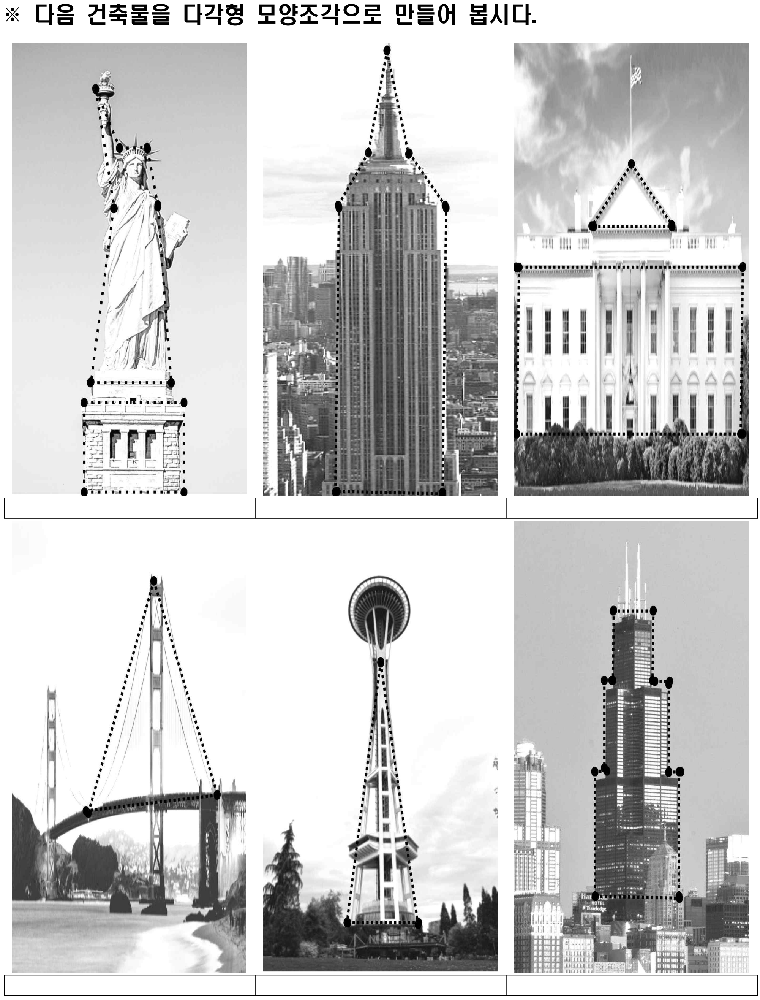
한국 문화는 처음이지? 체험 안내서 만들기
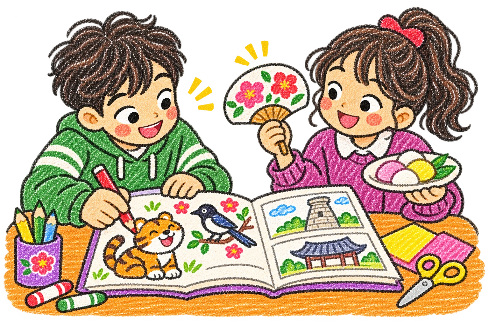
| 차시 | 교과 | 학습 주제 | 교과 역량 |
|---|---|---|---|
| 1 | 사회 | 고려와 주변 나라의 교류가 문화에 미친 영향 살펴보기 | 정보처리, 의사소통 |
| 2 | 미술 | 민화에 담긴 의미와 표현 방법 감상하기 | 심미적 감성 역량 |
| 3 | 체육 | 우리나라 민속무용의 특징 설명하기 | — |
| 4 | 실과 | 우리나라 음식문화를 알아보고 간단한 간식 만들기 | 문제해결 역량 |
| 5 | 국어 | 독자와 매체를 고려해 한국 문화 체험 안내 글 쓰기 | 공동체·대인관계 |
| 6 | 실과 | 디지털 도구로 한국 문화 체험 안내서 만들고 공유하기 | 기술적 문제 해결, 기술적 실천 |
설계 의도 본 프로젝트는 한국 문화를 처음 접하는 친구들도 쉽고 즐겁게 문화 체험에 참여할 수 있도록 돕는 방법을 탐색하고, 이를 실천하는 데 목적이 있다. 사회·미술·체육·실과·국어 교과를 연계하여 역사 속 문화 교류를 이해하고 수묵담채화, 민속무용, 한국 음식 등 우리 문화를 직접 경험하도록 구성하였다. 학생들은 체험 과정에서 처음 접하는 사람이 어려워할 수 있는 점과 필요한 정보를 발견하고, 독자와 매체의 특성을 고려하여 문화 체험 안내 글을 작성한다. 나아가 디지털 저작 도구를 활용하여 누구나 이해하기 쉬운 체험 안내서를 제작·공유하는 과정에서 문화적 다양성을 존중하고, 문제를 주도적으로 해결하며 함께 참여하는 글로컬 시민으로 성장하도록 한다.
| 융합과목 | 중심교과 | 사회 | 성취기준 | [6사04-03] 다양한 역사 자료를 활용하여 고려 시대 사회 모습과 사람들의 생활을 추론한다. |
|---|---|---|---|---|
| 융합교과 | 미술 | [6미03-02] 미술작품의 내용(소재, 주제 등)과 형식(재료와 용구, 표현 방법, 조형요소와 원리 등)을 분석하여 작품의 특징을 설명할 수 있다. | ||
| 융합교과 | 체육 | [6체03-01] 표현활동의 의미와 유형을 파악한다. | ||
| 융합교과 | 국어 | [6국03-04] 독자와 매체를 고려하여 내용을 생성하고 표현하며 글을 쓴다. | ||
| 융합교과 | 실과 | [6실02-05] 음식의 조리 과정을 체험하여 자기 간식이나 식사를 스스로 마련하는 식생활을 실천한다. [6실04-02] 생활 속 디지털 기술의 중요성을 이해하고, 디지털 기기와 디지털 콘텐츠 저작 도구를 사용하여 발표 자료를 만들어 보면서 디지털 기기의 활용 능력을 기른다. [6실04-03] 제작한 발표 자료를 사이버 공간에 공유하고, 건전한 정보 기기의 활용을 실천한다. |
| 차시 | 프로젝트 단계 | 주요 학습 내용 | 관련 교과 | 학습자료 | |
|---|---|---|---|---|---|
| 1 | et 준비하기 | | 한국문화 체험이 낯선 친구를 위한 문제 상황 알아보기 -고려와 주변 나라의 교류를 통해 문화가 영향을 주고받음을 이해하기 | 사회 | 유튜브 패들렛 |
| 2 | -수묵담채화의 특징과 표현 방법 알아보기 -수묵담채화로 표현하며 처음 체험하는 친구에게 필요한 정보 찾기 | 미술 | 패들렛 | ||
| 3 | xplore 탐구하기 | -민속무용의 특징과 기본 움직임 알아보기 -민속무용을 표현하며 처음 참여하는 친구에게 필요한 정보 찾기 | 체육 | 유튜브 | |
| 4 | -간식이나 간단한 식사를 마련하는 방법 알아보기 -한국 음식을 직접 만들어 보며 체험 안내에 필요한 정보 찾기 | 실과 | 패들렛 | ||
| 5 | nite 협력하기 | -다양한 문화 체험 안내 자료를 살펴보며 매체의 특성 알아보기 -독자와 매체를 고려하여 한국문화 체험 안내 글을 쓰고 자료 구성 계획하기 | 국어 | 패들렛 | |
| 6 | ake 표현하기 | -디지털 저작 도구를 활용하여 한국문화 체험 안내서 제작하기 -완성한 안내서를 온라인으로 공유하고 이해하기 쉬운지 살펴보기 | 실과 | 캔바 패들렛 | |
| ✔역사 속 문화 교류를 통해 문화가 서로 영향을 주고받으며 발전함을 이해하고 문화의 다양성 존중하기 ✔한국 문화를 처음 접하는 사람의 입장에서 생각하며 서로 다른 문화적 경험을 존중하기 |
|---|---|
✔수묵담채화·민속무용·음식 체험을 통해 안내에 필요한 정보를 스스로 발견하고 정리하기 ✔독자와 매체의 특성을 고려하여 필요한 내용을 선정하고 안내서 제작 계획 세우기 | |
✔역사 속 문화 교류와 오늘날의 문화적 만남을 연결하여 문화의 상호 영향 이해하기 ✔다양한 문화적 배경을 가진 사람들이 함께 참여할 수 있는 안내 자료를 제작하고 공유하기 | |
✔익숙하지 않은 문화 체험에서 발생할 수 있는 어려움을 예상하고 해결 방법 찾기 ✔다른 사람의 반응을 살펴 안내 자료를 개선하고 서로 다른 문화적 상황에 유연하게 대응하기 |
| 평가내용 | 평가방법 | 매우 잘함 | 잘함 | 보통 | |
|---|---|---|---|---|---|
①고려의 대외 교류 모습과 문화 교류의 영향 설명하기 [6사04-03] | 관찰평가 | 고려의 대외 교류 모습과 문화 교류의 영향을 구체적으로 설명할 수 있다. | 고려의 대외 교류 모습과 문화 교류의 영향을 설명할 수 있다. | 고려의 대외 교류 모습과 문화 교류의 영향을 이해할 수 있다. | |
②민화의 의미와 표현 방법을 분석해 작품의 특징 설명하기 [6미03-02] | 관찰법 | 민화에 담긴 의미와 표현 방법을 자세히 분석하여 작품의 특징을 구체적으로 설명할 수 있다. | 민화에 담긴 의미와 표현 방법을 분석하여 작품의 특징을 설명할 수 있다. | 민화에 담긴 의미와 표현 방법을 일부 분석하여 작품의 특징을 부분적으로 설명할 수 있다. | |
③우리나라 민속무용의 종류와 특징 설명하기 [6체03-01] | 관찰법 | 우리나라 민속무용의 종류와 특징을 알고 다양한 방법으로 설명할 수 있다. | 우리나라 민속무용의 종류와 특징을 설명할 수 있다. | 주변의 도움을 받아 우리나라 민속무용의 특징을 일부 설명할 수 있다. | |
④음식 조리에 참여해 간식을 스스로 마련하는 식생활 실천하기 [6실02-05] | 관찰법 | 음식의 조리 과정에 적극적으로 참여하며 간식을 스스로 마련하는 식생활을 주도적으로 실천할 수 있는가? | 음식의 조리 과정에 적극 참여하며 간식을 마련할 수 있는가? | 음식의 조리 과정에 관심을 가지고 참여할 수 있는가? | |
⑤독자와 매체를 고려해 모둠원과 한국 문화 체험 안내 글 쓰기 [6국03-04] | 관찰평가 | 독자와 매체를 고려하여 모둠원과 협력해 안내 글을 알기 쉽게 작성하고 수정할 수 있다. | 독자와 매체를 고려하여 안내 글을 작성할 수 있다. | 모둠원과 한국 문화 체험 안내 글을 작성할 수 있다. | |
⑥디지털 저작 도구로 한국 문화 체험 안내서를 만들고 공유하기 [6실04-02] [6실04-03] | 관찰평가 | 디지털 콘텐츠 저작 도구를 능숙하게 활용하여 안내서를 제작하고 올바르게 공유할 수 있다. | 디지털 콘텐츠 저작 도구를 활용하여 안내서를 제작하고 공유할 수 있다. | 디지털 콘텐츠 저작 도구를 활용하여 친구들과 함께 안내서를 제작할 수 있다. | |
| 세움 단계 안내 | |||||
※ 단계는 프로젝트 수업 설계를 따랐다. 본시 지도안에서는 ②~④차시를 협력하기로 제시한다. | |||||
융합과목 | 사회 | 대 상 | 5학년 2반 | 프로젝트 단계 | et (준비하기) | 지도교사 | |||||
|---|---|---|---|---|---|---|---|---|---|---|---|
프로젝트 | 한국 문화는 처음이지? 체험 안내서 만들기(1/6) | ||||||||||
성취기준 | [6사04-03] 다양한 역사 자료를 활용하여 고려 시대 사회 모습과 사람들의 생활을 추론한다. | ||||||||||
학습목표 | 고려의 대외 교류 모습과 문화적 영향을 알 수 있다. | ||||||||||
수업전략 | 수업모형 | 문제해결 학습 모형 | 교과 역량 | 정보처리, 의사소통 | |||||||
다문화 주도성 | | | |||||||||
☑ | ☐ | ☑ | ☐ | ||||||||
단계 (시간) | 학습요소 | 교수·학습 활동 | 자료(▶) 및 유의점(☞) |
|---|---|---|---|
문제 확인하기 (5′) | 동기유발 | ▣ 학습동기 유발 ◦ 우리나라를 영어로 ‘KOREA’라고 부르는 까닭 예상하기 ∙ ‘KOREA’라는 이름은 어디에서 시작되었을까요? | ▶ 유튜브, 세계지도 |
공부할 문제 파악 | ▣ 공부할 문제 확인 ♣ 고려의 대외 교류 모습과 문화적 영향을 알아봅시다. | ||
탐색하기 (10′) | 고려의 대외 교류 알기 | ▣ 【활동1】 고려의 대외 교류 알아보기 ◦ 고려의 대외 교류 지도 살펴보기 ∙ 고려는 어떤 나라 및 사람들과 교류했나요? ∙ 고려와 다른 나라 사이에는 어떤 물건들이 오고 갔나요? ◦ 고려의 대외 교류 모습 알아보기 ∙ ‘고려’라는 이름은 어떻게 서양에까지 알려지게 되었나요? | ▶ 고려의 대외 교류 지도 ☞ 교류한 나라와 물품을 학생들이 지도에서 직접 찾아보도록 한다. |
자료 탐색 및 분석하기 (10‘) | 벽란도의 특징 알기 | ▣ 【활동2】 벽란도 살펴보기 ◦ 역사 기록과 지도를 활용하여 벽란도의 특징 알아보기 ∙ 「고려도경」의 기록에서 벽란도의 모습을 알 수 있는 내용을 찾아볼까요? ∙ 벽란도가 국제 교류의 중심지로 발전할 수 있었던 까닭은 무엇일까요? ∙ 지도와 역사 기록을 통해 알 수 있는 벽란도의 특징을 말해 볼까요? | ▶ 유튜브, 패들렛 ☞ 대외 교류 지도, 역사 기록, 위치 자료를 서로 연결하여 벽란도의 특징을 파악하도록 한다. |
일반화하기 (10′) | 교류를 통해 나타난 문화의 변화 살펴보기 | ▣ 【활동3】 문화의 만남 알아보기 ◦ 고려와 몽골의 관계 변화 알아보기 ∙ 몽골의 침입에 고려는 어떻게 대응했나요? ∙ 전쟁 이후 고려와 몽골의 관계는 어떻게 달라졌나요? ◦ 교류를 통해 나타난 문화의 변화 살펴보기 ∙ 몽골과의 교류로 고려에는 어떤 문화가 전해졌나요? ∙ 이를 통해 문화에 대해 무엇을 알 수 있나요? | ▶ 프레젠테이션 ☞ 전쟁의 세부 과정보다 몽골과의 관계 변화와 문화 교류의 영향을 파악하도록 한다. |
평가 하기 (5′) | 학습내용 정리 및 성찰 | ▣ 학습내용 정리 ◦ 배운 내용과 느낀 점 이야기하기 ∙ 오늘 배운 내용과 느낀 점을 말해 봅시다. | ▶ 띵커벨 ☞ 띵커벨 문제를 풀며 학습 내용을 정리한다 |
▣ 차시 예고 ♣ 수묵담채화로 우리 전통 미술을 표현해 봅시다. |
융합과목 | 미술 | 대 상 | 5학년 1반 | 프로젝트 단계 | nite (협력하기) | 지도교사 | |||||
|---|---|---|---|---|---|---|---|---|---|---|---|
프로젝트 | 한국 문화는 처음이지? 체험 안내서 만들기(2/6) | ||||||||||
성취기준 | [6미03-02] 미술작품의 내용(소재, 주제 등)과 형식(재료와 용구, 표현방법, 조형요소와 원리 등)을 분석하여 작품의 특징을 설명할 수 있다. | ||||||||||
학습목표 | 민화에 담긴 의미와 표현 방법을 감상하고 작품의 특징을 설명할 수 있다. | ||||||||||
수업전략 | 수업모형 | 반응 중심 학습 모형 | 교과 역량 | 심미적 감성 역량 | |||||||
다문화 주도성 | | | |||||||||
☑ | ☑ | ☑ | ☑ | ||||||||
단계 (시간) | 학습요소 | 교수·학습 활동 | 자료(▶) 및 유의점(☞) |
|---|---|---|---|
반응 형성 (5′) | 동기유발 | ▣ 학습동기 유발 ◦ 민화 속 틀린 그림 찾기 ∙ 두 책거리 그림에서 틀린 그림을 찾아봅시다. | ▶ 프레젠테이션 ☞ 책거리 그림 속 소재 중 일부를 외국 전통물건으로 제시한다. |
공부할 문제 파악 | ▣ 공부할 문제 확인 ♣ 민화를 감상해 봅시다. | ||
반응 명료화 (15′) | 우리나라민화 알아보기 | ▣ 【활동1】 민화 알아보기 ◦ 민화의 의미와 특징 알아보기 ∙ 왜 이런 그림을 그려서 걸어 놓았을까요? ∙ 수묵화와의 차이점을 이야기해 볼까요? ◦ 민화 조사 및 발표하기 ∙ 민화 속 소재의 의미를 알아봅시다. ∙ 다양한 민화의 종류에 대해 조사해 봅시다. ◦ 다른 문화의 미술작품과 비교하기 ∙ 중국의 연화와 우리 민화의 공통점과 차이점을 말해봅시다. ∙ 일본의 우키요에와 우리 민화의 다른 점은 무엇일까요? | ▶ 프레젠테이션, 학습지, 디지털 기기 ☞ 서로 다른 표현 속에 담긴 공통의 가치와 의미를 발견하게 한다. |
반응 심화 (15‘) | 민화 창작하기 | ▣ 【활동2】 ‘나만의 민화’ 창작하기 ◦ 나의 바람을 담은 ‘나만의 민화’ 구상하기 ∙ 현대 창작민화를 살펴봅시다. ∙ 어떤 바람을 담아 그리고 싶은가요? ◦ ‘나만의 민화’ 표현하기 ∙ 자신의 작품을 친구들에게 소개해 봅시다. ∙ 친구가 잘한 점을 칭찬해 봅시다. | ▶ 프레젠테이션, 밑그림종이 ☞ 소재에 의미를 담아 그릴 수 있도록 안내한다. |
정리 및 발전 (5′) | 학습내용 정리하기 | ▣ 학습내용 정리 ◦ 배운 내용과 느낀 점 이야기하기 ∙ 오늘 배운 내용과 느낀 점을 말해 봅시다. | |
▣ 차시 예고 ♣ 우리나라 민속무용에 대해 알아봅시다. |
융합과목 | 체육 | 대 상 | 5학년 1반 | 프로젝트 단계 | nite (협력하기) | 지도교사 | |||||
|---|---|---|---|---|---|---|---|---|---|---|---|
프로젝트 | 한국 문화는 처음이지? 체험 안내서 만들기(3/6) | ||||||||||
성취기준 | [6체03-01]표현활동의 의미와 유형을 파악한다. | ||||||||||
학습목표 | 우리나라 민속무용의 종류와 특징을 알고, 다양한 방법으로 설명할 수 있다. | ||||||||||
수업전략 | 수업모형 | 탐구 수업 모형 | 교과 역량 | ||||||||
다문화 주도성 | | | |||||||||
☑ | ☑ | ☑ | ☑ | ||||||||
단계 (시간) | 학습요소 | 교수·학습 활동 | 자료(▶) 및 유의점(☞) |
|---|---|---|---|
목표확인 및 인지 (5′) | 동기유발 | ▣ 학습동기 유발 ◦ 민속무용 찾기 ∙ 아이돌 공연영상 속 민속무용을 찾아봅시다. | ▶ 프레젠테이션 ☞ 우리 문화를 존중하는 태도를 기르도록 한다. |
문제제시 | 공부할 문제 파악 | ▣ 공부할 문제 확인 ♣ 우리나라의 민속무용을 알아봅시다. | |
문제 분석 탐색 (20′) | 우리나라민속무용 알아보기 | ▣ 【활동1】 우리나라 민속무용 알아보기 ◦ 민속무용 알아보기 ∙ 언제 민속무용을 추었을까요? ∙ 우리 조상들의 춤에는 어떤 뜻이 담겨 있을까요? ◦ 우리나라 민속무용 따라 추기 ∙ 모둠별로 민속무용 동영상을 따라 춰 봅시다. ∙ 춤을 추면서 알게된 점과 느낀 점을 말해볼까요? ◦ 다른 문화의 민속무용과 비교하기 ∙ 스페인의 플라멩코와 우리나라 민속무용의 공통점은 무엇인가요? ∙ 우리나라 민속무용과 외국 민속무용을 비교해 봅시다. | ▶ 프레젠테이션, 학습지, 디지털 기기 ☞ 동작을 정확하게 하지 않고 자연스럽게 몸을 움직이도록 한다. |
해결전략의 실행 (10‘) | 민속무용 조사하기 | ▣ 【활동2】 지역별 민속무용 조사하기 ◦ 지역별 민속무용을 찾아보고 특징 조사하기 ∙ 탈춤, 농악무, 소리 춤, 허튼춤을 나누어 조사해 봅시다. ∙ 어떤 특징이 있는지 자세히 알아봅시다. ◦ 민속무용 조사내용 발표하기 ∙ 조사한 내용을 친구들에게 소개해 봅시다. ∙ 여러 민속무용의 공통점을 말해 봅시다. | ▶ 프레젠테이션 ☞ 모둠별로 각각 다른 주제로 조사하여 발표하게 한다. |
정리 및 발전 (5′) | 학습내용 정리하기 | ▣ 학습내용 정리 ◦ 배운 내용과 느낀 점 이야기하기 ∙ 오늘 배운 내용과 느낀 점을 말해 봅시다. | |
▣ 차시 예고 ♣ 우리나라 음식 중 좋아하는 간식을 만들어 봅시다. |
융합과목 | 실과 | 대 상 | 5학년 3반 | 프로젝트 단계 | nite (협력하기) | 지도교사 | |||||
|---|---|---|---|---|---|---|---|---|---|---|---|
프로젝트 | 우리 문화를 배우고, 경험하고, 콘텐츠로 전하는 프로젝트(4/6) | ||||||||||
성취기준 | [6실02-05] 음식의 조리 과정을 체험하여 자기 간식이나 식사를 스스로 마련하는 식생활을 실천한다. | ||||||||||
학습목표 | 우리나라 음식문화를 알고 간단한 간식을 만들 수 있다. | ||||||||||
수업전략 | 수업모형 | 문제해결 학습 모형 | 교과 역량 | 문제해결 역량 | |||||||
다문화 주도성 | | | |||||||||
☑ | ☑ | ☑ | ☑ | ||||||||
단계 (시간) | 학습요소 | 교수·학습 활동 | 자료(▶) 및 유의점(☞) |
|---|---|---|---|
문제 확인하기 (5′) | 동기유발 | ▣ 학습동기 유발 ◦ 여러 나라의 음식 카드 살펴보기 ∙ 그림 카드를 살펴봅시다. | ▶ 프레젠테이션 |
공부할 문제 파악 | ▣ 공부할 문제 확인 ♣ 우리나라 음식 중 좋아하는 간식을 만들어 봅시다. | ||
문제해결방법 탐색하기 (10′) | 우리나라음식문화 알아보기 | ▣ 【활동1】 알아봐요 ◦ 우리나라의 음식문화 알아보기 ∙ 우리나라 음식엔 어떤 것이 있나요? ∙ 우리나라 음식 중 무엇을 좋아하나요? ◦ 우리나라의 음식 만드는 방법 알아보기 ∙ 이 음식은 어떻게 만들까요? ∙ 이 음식을 만들 때, 무엇이 필요할까요? | ▶ 프레젠테이션 ☞ 다양한 음식과 만드는 방법에 대해 알아보는 시간을 충분히 가진다. |
문제 해결하기 (20‘) | 우리나라 간식 만들기 | ▣ 【활동2】 만들어봐요 ◦ 만들고 싶은 우리나라 간식 알아보기 ∙ 모둠별로 만들고 싶은 간식을 정해 봅시다. ◦ 만들고 싶은 우리나라 간식 만들기 ∙ 모둠별로 간식 만드는 방법을 계획해 봅시다. ∙ 모둠별로 간식을 만들어 봅시다. | ▶ 프레젠테이션 ☞ 모둠끼리 충분히 상의하여 결정할 수 있도록 안내한다. |
내가 만든 간식 소개하기 | ▣ 【활동3】 소개해요 ◦ 내가 만든 우리나라 간식 소개하기 ∙ 내가 만든 우리나라 간식 만드는 방법을 소개해봅시다. ◦ 내가 만든 우리나라 간식 나눠먹기 ∙ 모둠별로 내가 만든 우리나라 간식 나눠 먹어 봅시다. ◦ 내가 만들고 싶은 다른 나라의 간식 발표하기 ∙ 내가 만들고 싶은 다른 나라의 간식은 무엇인가요? | ▶ 프레젠테이션 ☞ 칭찬할 점, 개선할 점에 대해서도 이야기할 시간을 가진다. | |
평가 하기 (5′) | 학습내용 정리하기 | ▣ 학습내용 정리 ◦ 배운 내용과 느낀 점 이야기하기 ∙ 각자 간식을 만든 과정을 되돌아 봅시다. ∙ 우리나라 간식을 직접 만든 소감을 말해 봅시다. | |
▣ 차시 예고 ♣ 우리 문화 소개하는 콘텐츠에 대해 알아봅시다. |
융합과목 | 국어 | 대 상 | 5학년 2반 | 프로젝트 단계 | nite (협력하기) | 지도교사 | |||||
|---|---|---|---|---|---|---|---|---|---|---|---|
프로젝트 | 한국 문화는 처음이지? 체험 안내서 만들기(5/6) | ||||||||||
성취기준 | [6국03-04] 독자와 매체를 고려하여 내용을 생성하고 표현하며 글을 쓴다. | ||||||||||
학습목표 | 독자와 매체의 특성을 고려하여 한국 문화 체험 안내 글을 쓸 수 있다. | ||||||||||
수업전략 | 수업모형 | 창의성 계발 학습 모형 | 교과 역량 | 공동체․대인관계 | |||||||
다문화 주도성 | | | |||||||||
☑ | ☑ | ☐ | ☐ | ||||||||
단계 (시간) | 학습요소 | 교수·학습 활동 | 자료(▶) 및 유의점(☞) |
|---|---|---|---|
문제 발견하기 (5′) | 동기유발 | ▣ 학습동기 유발 ◦ 우리가 소개하고 싶은 한국 문화 체험 사진 돌아보기 ∙ 한국 문화를 처음 접하는 친구에게 체험 방법을 어떻게 알려주면 좋을지 생각해 봅시다. | ▶ 문화 체험 사진 ☞ 다양한 문화적 배경을 가진 독자의 상황을 떠올리며 학습 동기를 갖도록 한다. |
공부할 문제 파악 | ▣ 공부할 문제 확인 ♣ 독자와 매체를 고려하여 친구들과 함께 한국 문화 체험 안내 글을 써 봅시다. | ||
아이디어 생성하기 (10′) | 안내 글 내용 구상하기 | ▣ 【활동1】 안내 글 생각 모으기 ◦ 모둠별로 소개할 한국 문화 체험 주제 정하기 ∙ 앞서 체험한 한국 문화 중 어떤 문화를 소개하면 좋을지 모둠원과 함께 생각해 봅시다. ◦ 한국 문화를 처음 접하는 친구에게 필요한 정보 떠올리기 ∙ 이 문화를 처음 체험하는 친구들은 어떤 점이 궁금할까요? ◦ 안내 글에 포함할 내용 모둠 친구들과 협의하기 ∙ 모둠원들이 생각한 내용을 비교하고, 꼭 필요한 정보를 함께 정해 봅시다. | ▶ 체험 기록 자료, 내용 구상 활동지 ☞ 한국 문화를 처음 접하는 친구의 입장에서 필요한 정보를 생각하도록 지도한다. |
아이디어 선택하기 (10‘) | 내용 선정 및 글쓰기 계획하기 | ▣ 【활동2】 안내 글 계획하고 함께 쓰기 ◦ 모둠별로 안내 글에 포함할 내용 선정하기 ∙ 모둠원들이 떠올린 정보 중 꼭 필요한 내용을 함께 선정해 볼까요? ∙ 안내 글의 처음, 가운데, 끝에는 어떤 내용을 넣으면 좋을까요? ◦ 모둠별로 역할을 나누어 안내 글 작성하기 ∙ 모둠원들이 어떤 역할을 맡으면 함께 글을 완성할 수 있을까요? ∙ 디지털 안내서에서 독자가 이해하기 쉽도록 어떤 표현을 사용하면 좋을까요? | ▶ 체험 사진, 패들렛 ☞ 모든 모둠원이 내용 선정과 글쓰기 과정에 참여하도록 한다. ☞ 디지털 안내서에 활용할 글과 사진, 그림 설명 등의 제작은 다음 차시에 진행한다. |
아이디어 적용하기 (10′) | 안내 글 검토 및 수정하기 | ▣ 【활동3】 안내 글 함께 다듬기 ◦ 모둠 간 안내 글을 교환하여 읽고 점검하기 ◦ 독자와 매체를 고려하여 안내 글 점검하기 ∙ 한국 문화를 처음 접하는 친구도 이 글을 읽고 체험방법을 이해할 수 있을까요? ◦ 친구들의 의견을 반영하여 안내 글 수정하기 | ▶ 모둠별 안내 글, 점검표 ☞ 내용과 표현에 대한 구체적인 수정 의견을 나누도록 지도한다. |
평가 하기 (5′) | 학습내용 정리 및 성찰 | ▣ 학습내용 정리 ◦ 배운 내용과 느낀 점 이야기하기 ∙ 안내 글을 쓸 때 독자와 매체를 고려해야 하는 까닭은 무엇일까요? | ▶ 수정한 안내 글 |
▣ 차시 예고 ♣ 디지털 체험 안내서를 만들어 봅시다. |
융합과목 | 실과 | 대 상 | 5학년 2반 | 프로젝트 단계 | ake (표현하기) | 지도교사 | |||||
|---|---|---|---|---|---|---|---|---|---|---|---|
프로젝트 | 한국 문화는 처음이지? 체험 안내서 만들기(6/6) | ||||||||||
성취기준 | [6실04-02] 생활 속 디지털 기술의 중요성을 이해하고, 디지털 기기와 디지털 콘텐츠 저작 도구를 사용하여 발표 자료를 만들어 보면서 디지털 기기의 활용 능력을 기른다. [6실04-03] 제작한 발표 자료를 사이버 공간에 공유하고, 건전한 정보 기기의 활용을 실천한다. | ||||||||||
학습목표 | 디지털 저작 도구를 활용하여 한국 문화 체험 안내서를 제작하고 공유할 수 있다. | ||||||||||
수업전략 | 수업모형 | 메이커 중심 학습 | 교과 역량 | 기술적 문제 해결, 기술적 실천 | |||||||
다문화 주도성 | | | |||||||||
☐ | ☑ | ☑ | ☐ | ||||||||
단계 (시간) | 학습요소 | 교수·학습 활동 | 자료(▶) 및 유의점(☞) |
|---|---|---|---|
문제 확인하기 (5′) | 동기유발 | ▣ 학습동기 유발 ◦ 학생들이 작성한 한국 문화 체험 안내 글 살펴보기 ∙ 우리가 쓴 안내 글을 다른 친구들이 더 쉽고 재미있게 볼 수 있도록 어떻게 하면 좋을까요? | ▶ 모둠별 안내 글 ☞ 앞선 차시의 활동과 이번 차시의 제작 활동을 연결한다. |
공부할 문제 파악 | ▣ 공부할 문제 확인 ♣ 디지털 저작 도구를 활용하여 한국 문화 체험 안내서를 제작하고 공유해 봅시다. | ||
문제 발견 및 이해 (7′) | 디지털 안내서 제작 계획하기 | ▣ 【활동1】 디지털 안내서 제작 계획하기 ◦ 디지털 콘텐츠의 개념과 종류 알아보기 ∙ 우리 모둠이 원하는 디지털 콘텐츠를 정해볼까요? ◦ 모둠별 제작 방법과 역할 정하기 ∙ 우리 모둠의 안내서를 어떤 순서로 구성하면 좋을까요? ◦ 디지털 자료 활용 시 정보 윤리 알아보기 ∙ 개인정보와 저작권 보호 방법을 알아봅시다. | ▶ 태블릿PC ☞ 디지털 콘텐츠를 제작하고 공유할 때 정보 윤리를 실천할 수 있도록 사전 지도한다. |
아이디어 선택하기 (15‘) | 아이디어 창출 및 계획 제작 및 구현 | ▣ 【활동2】 디지털 안내서 제작하고 수정하기 ◦ 디지털 콘텐츠 저작 도구로 안내서 제작하기 ∙ 이전에 완성한 안내 글을 활용하여 디지털 안내서를 만들어 봅시다. ◦ 독자를 고려하여 글과 시각 자료 구성하기 ∙ 한국 문화를 처음 접하는 친구도 쉽게 이해하도록 글과 사진을 어떻게 배치하면 좋을까요? ◦ 안내서의 내용과 구성 점검하고 수정하기 ∙ 안내서에 빠진 내용이나 이해하기 어려운 부분은 없을까요? | ▶ 캔바, 패들렛 ☞ 모둠원이 역할을 나누어 제작하도록 한다. ☞ 글과 시각 자료의 가독성을 고려하고, 자료의 출처를 표시하도록 한다. |
아이디어 적용하기 (8′) | 발표 및 공유 성찰 및 평가 | ▣ 【활동3】 디지털 안내서 공유하고 평가하기 ◦ 완성한 디지털 안내서를 발표하며 모둠별로 공유하기 ◦ 다른 모둠의 디지털 안내서를 살펴보고 평가하기 ∙ 다른 모둠의 안내서에서 잘된 점은 무엇인가요? ∙ 자료를 공유할 때 개인정보와 저작권을 잘 지켰는지 확인해 봅시다. | ▶ 모둠별 디지털 안내서, 점검표 ☞ 다른 모둠의 표현 방식을 존중하며 의견을 나누도록 한다. |
평가 하기 (5′) | 학습내용 정리 및 성찰 | ▣ 학습내용 정리 ◦ 디지털 안내서 제작 과정 및 프로젝트 활동 돌아보기 ∙ 디지털 도구를 활용하여 한국 문화를 소개하며 새롭게 알게 된 점은 무엇인가요? ∙ 한국 문화를 처음 접하는 친구를 위해 우리가 노력한 점은 무엇인가요? | ▶ 모둠별 디지털 안내서 |
▣ 차시 마무리 ♣ 서로 다른 문화를 이해하고 존중하는 마음을 실천해 봅시다. |
우리만의 특별한 세계여행 설계하기
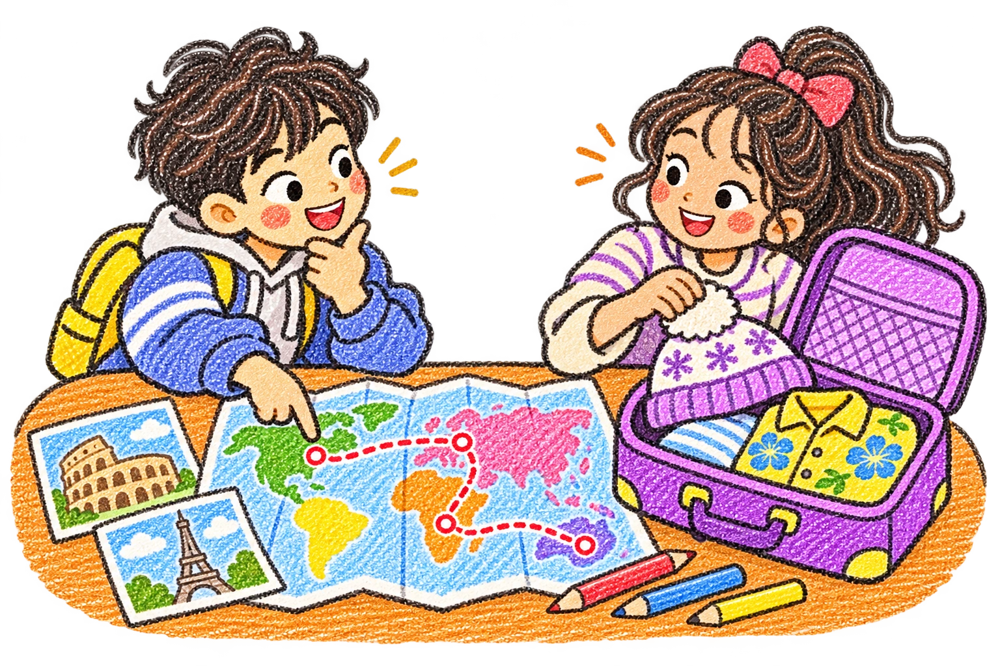
| 차시 | 교과 | 학습 주제 | 교과 역량 |
|---|---|---|---|
| 1 | 사회 | 세계의 지형 경관과 생활 모습 조사해 발표하기 | 문제해결 역량 |
| 2 | 사회·미술 | 기후에 따른 생활 모습을 조사하고 여행 가방 꾸리기 | 문제해결 역량 |
| 3 | 미술 | 여러 나라 건축물의 특징 조사하기 | 심미적 감성 역량 |
| 4 | 음악·사회 | 여러 나라의 음악을 감상하고 특징과 느낌 나누기 | 문제해결 역량 |
| 5 | 수학 | 비례식의 성질을 이용해 여행 경비 계산하기 | 문제해결 역량 |
| 6 | 국어·창체 | 여행 자료를 만들고 여행 크리에이터가 되어 발표하기 | 문제해결 역량 |
설계 의도 본 프로젝트는 초등학교 6학년 학생들이 ‘우리만의 특별한 세계 여행 설계하기’라는 실제적이고 흥미로운 과제를 통해 세계 여러 지역의 자연환경과 다양한 문화를 이해하고, 세계시민으로서의 글로컬 역량을 기르는 것을 목적으로 한다. 학생들은 세계 여러 나라의 자연환경과 생활 모습, 문화와 건축물을 탐구하고, 비례식을 활용하여 여행 경비를 계산하며 자신만의 세계 여행을 주도적으로 설계한다. 이 과정에서 서로 다른 환경과 문화가 지닌 고유한 가치와 다양성을 존중하는 다문화 감수성을 기를 수 있다. 또한 다양한 교과에서 배운 지식과 기능을 실제적인 여행 설계 과정에 적용하고, 필요한 정보를 자기 주도적으로 탐색·선택하며 친구들과 협력하여 문제를 해결함으로써 지역과 세계를 연결하여 바라보는 글로컬 시민성과 창의적 문제 해결 능력을 기를 수 있도록 구성하였다.
| 융 합 과 목 | 사회 | 1. 세계의 자연환경 | 성취 기준 | [6사10-01] 세계 여러 지역의 지형 경관을 살펴보고, 이를 통해 다양한 삶의 모습을 이해한다. |
|---|---|---|---|---|
| 미술 | 8. 건축으로 떠나는 세계여행 | [6미01-02] 자신이나 주변 환경에서 찾은 감각적 특징, 느낌, 생각 등을 관련지어 나타낼 수 있다. | ||
| 음악 | 2. 음악 따라 세계여행 | [6음02-02] 다양한 문화권의 음악을 듣고 음악적 특징과 음악의 간단한 구성을 인식한다. | ||
| 수학 | 4. 비례식과 비례배분 | [6수02-04] 비례식을 알고, 그 성질을 이해하며, 이를 활용하여 간단한 비례식을 풀 수 있다. | ||
| 국어 | 매체단원. 매체 자료를 만들어요 | [6국01-05] 자료를 선별하여 핵심 정보를 중심으로 내용을 구성하고 매체를 활용하여 발표한다. |
| 차시 | 프로젝트 단계 | 주요 학습 내용 | 관련 교과 | 학습자료 | |
|---|---|---|---|---|---|
| 1 | et 준비하기 | | 프로젝트 안내 및 계획하기 -세계 지형 경관과 생활 모습을 살펴보고 특별한 여행지 정하기 | 사회 | 패들릿, 유튜브 |
| 2 | -기후에 따른 사람들의 다양한 생활 모습 조사하기 -여행지의 기후에 따라 여행 시 필요한 물건을 글과 그림으로 나타내기 | 사회, 미술 | 스마트 패드 | ||
| 3 | xplore 탐구하기 | -여행지를 포함한 세계 여러 나라의 다양한 건축물 조사하기 -건축물의 특징을 나라의 문화나 환경과 관련지어 정리하고 공유하기 | 미술, 사회 | 패들릿 | |
| 4 | -세계 여러 나라의 음악 탐구하기 -선정한 여행지의 음악을 조사하고 함께 감상하기 | 음악, 사회 | 유튜브 | ||
| 5 | nite 협력하기 | 비례식의 성질을 이용하여 세계여행 경비 계산하는 방법 익히기 환율과 참가 인원에 따른 체험비, 식비, 교통비 등의 여행 경비 계산하기 | 수학, 사회 | 스마트 패드 | |
| 6 | ake 표현하기 | -우리 여행의 한 줄 슬로건 및 여행 계획서 만들기 -여행 크리에이터가 되어 우리만의 특별한 세계여행 계획서 발표하기 | 국어, 창체 | 패들릿, 구글 | |
| ✔세계 여러 나라의 자연환경과 생활 모습, 문화 및 건축물을 탐구하고, 각 지역의 환경에 따라 서로 다른 생활양식과 문화가 형성됨을 이해함으로써 문화적 차이를 편견 없이 바라보고 다양성을 존중하는 다문화 수용성 함양하기 |
|---|---|
✔세계 여행을 설계하는 과정에서 필요한 정보를 스스로 탐색·선별하고, 여행지와 이동 경로, 여행 경비 및 일정을 주도적으로 계획하며 자신의 선택을 점검하고 수정하는 과정을 통해 자기주도적 학습역량을 기르기 | |
✔세계 여러 지역의 자연환경과 문화적 특성을 탐구하고 우리 지역의 환경과 문화를 세계의 다양한 지역과 비교·연결하여 이해하며, 지역 공동체와 세계 공동체의 구성원으로서 서로의 다양성을 존중하고 함께 살아가는 책임 있는 글로컬 시민성 함양하기 | |
✔세계 여러 나라의 다양한 문화와 생활 모습을 탐구하고 여행을 설계하는 과정에서 자신의 문화적 정체성을 존중하면서 새로운 문화와 환경을 열린 태도로 이해하고, 친구들과 협력하여 다양한 관점과 경험을 나누며 학교와 사회의 공동체 활동에 능동적으로 참여하는 주도적 적응력 함양하기 |
| 평가내용 | 평가방법 | 매우 잘함 | 잘함 | 보통 | |
|---|---|---|---|---|---|
①세계의 지형 경관과 생활 모습을 조사해 발표하기 [6사10-01] | 관찰법 | 세계 여러 지역의 지형 경관과 생활 모습을 정확하고 구체적으로 조사하고, 두 요소의 관계를 이해하여 발표 자료로 체계적으로 정리하고 자신 있게 발표할 수 있다. | 세계 여러 지역의 지형 경관과 생활 모습을 조사하고, 조사한 내용을 발표 자료로 정리하여 알기 쉽게 발표할 수 있다. | 교사나 친구의 도움을 받아 세계 여러 지역의 지형 경관과 생활 모습을 조사하고, 주요 내용을 간단한 발표 자료로 만들어 발표할 수 있다. | |
②기후별 생활 모습을 조사하고 여행에 필요한 물건 발표하기 [6사10-01] | 관찰법 | 기후에 따른 사람들의 다양한 생활 모습을 구체적으로 조사하고, 기후의 특성을 고려하여 여행에 필요한 물건과 그 이유를 정확하게 발표할 수 있다. | 기후에 따른 사람들의 생활 모습을 조사하고, 여행에 필요한 물건을 선정하여 발표할 수 있다. | 교사나 친구의 도움을 받아 기후에 따른 사람들의 생활 모습을 조사하고, 여행에 필요한 물건을 간단하게 발표할 수 있다. | |
③건축물의 감각적 특징을 느낌·생각과 관련지어 나타내기 [6미01-02] | 관찰법 | 세계 여러 나라 건축물을 살펴보고 건축 구조와 관련된 특징을 구체적이고 논리적으로 찾을 수 있다. | 세계 여러 나라 건축물을 살펴보고 건축 구조와 관련된 특징을 찾을 수 있다. | 세계 여러 나라 건축물을 살펴보고 건축 구조와 관련된 특징을 부분적으로 찾을 수 있다. | |
④세계 여러 나라의 음악을 감상하고 문화적 특징 발표하기 [6음02-02] | 관찰법 | 세계 여러 나라의 음악을 주의 깊게 감상하고, 음악의 특징과 문화적 배경을 구체적으로 이해하여 자신의 생각을 풍부하게 발표할 수 있다. | 세계 여러 나라의 음악을 감상하고, 음악의 특징과 문화적 배경을 이해하여 발표할 수 있다. | 교사나 친구의 도움을 받아 세계 여러 나라의 음악을 감상하고, 음악의 특징을 간단하게 발표할 수 있다. | |
⑤비례식의 성질로 여행 경비 계산하기 [6수02-04] | 관찰법 | 비례식의 성질을 이용하여 여행 경비를 계산하는 여러 가지 문제를 능숙하게 해결할 수 있다. | 비례식의 성질을 이용하여 여행 경비를 계산하는 여러 가지 문제를 해결할 수 있다. | 비례식의 성질을 이용하여 여행 경비를 계산하는 여러 가지 문제를 도움을 받아 해결할 수 있다. | |
⑥매체를 활용해 발표하기 [6국01-05] | 관찰법 | 발표 내용에 적합한 매체 자료를 효과적으로 활용하여 핵심 정보를 체계적으로 전달하고, 듣는 사람을 고려하여 자신 있게 발표할 수 있다. | 발표 내용에 알맞은 매체 자료를 활용하여 핵심 정보를 알기 쉽게 발표할 수 있다. | 교사나 친구의 도움을 받아 매체 자료를 활용하고, 주요 내용을 간단하게 발표할 수 있다. | |
| 이주배경학생 평가 시 유의점 및 세움 단계 안내 | |||||
① 시각 자료와 어휘 설명을 제공하고, 지형 경관과 생활에 대한 이해 및 조사·발표 참여를 중심으로 살핀다. | ③ 건축물 조사 자료를 모국어로 작성한 뒤 번역기로 완성하는 방식을 인정한다. | ||||
⑤ 교사나 친구와 문제의 뜻을 확인하게 하고, 비례식을 세워 문제를 해결하는 과정을 평가한다. | ※ 단계는 프로젝트 수업 설계를 따랐다. 본시 지도안에서는 ①차시를 탐구하기, ④차시를 협력하기로 제시한다. | ||||
일 시 | 대 상 | 6학년 2반 | 교과서 | 사회 26~28(7/7) | 지도교사 | ||||||||||
|---|---|---|---|---|---|---|---|---|---|---|---|---|---|---|---|
프로젝트 | 우리만의 특별한 세계여행 설계하기(1/6) | et | |||||||||||||
본시 성취기준 | [6사10-01] 세계 여러 지역의 지형 경관을 살펴보고, 이를 통해 다양한 삶의 모습을 이해한다. | 본시 관련교과 | 사회 | ||||||||||||
학습목표 | 세계의 지형 경관과 생활 모습을 조사하여 발표할 수 있다. | ||||||||||||||
수업 모형 | 문제해결 학습 모형 | 교과 역량 | 문제해결 역량 | ||||||||||||
수업전략 | 수업 의도 | - 본 차시는 세계 여러 지역의 지형 경관과 생활 모습을 조사하고 발표 자료를 제작·공유하며 자연환경과 인간 생활의 관계를 이해하는 데 목적이 있다. 특히 미국에서 온 이주배경학생의 문화적 경험을 존중하고, 학생들이 자기 주도적 탐구와 협력적 발표 활동을 통해 문화 다양성을 수용하며 상호 존중과 협력을 실천하는 글로컬 시민성을 함양하도록 구성하였다. | |||||||||||||
다문화 주도성 | | | |||||||||||||
☐ | ☑ | ☑ | ☑ | ||||||||||||
이주배경학생 지도계획 | - 이주배경학생이 한국어와 영어 의사소통 능력을 활용하여 탐구 및 발표 활동에 주도적으로 참여하도록 하고, 어려운 어휘와 맥락은 시각 자료와 구체적인 사례를 통해 이해할 수 있도록 지원한다. | ||||||||||||||
단계 (시간) | 학습요소 | 교수·학습 활동 | 자료(▶) 및 유의점(☞) |
|---|---|---|---|
문제 확인하기 (5′) | 동기유발 | ▣ 학습동기 유발 ◦ 산지, 하천, 해안 지형 알아맞히기 ∙ 사진을 보고 어떤 지형인지 알아맞혀 봅시다. - 울룰루는 산지 지형입니다. ∙ 이 밖에 지난 시간에 배운 것 중 생각나는 것을 말해 봅시다. - 다양한 지형 경관에 대해서 배웠습니다. | ▶ 프레젠테이션 ☞ 이주배경학생에게 친숙한 지형 경관을 발표할 수 있도록 지도한다. |
공부할 문제 파악 | ▣ 공부할 문제 확인 ♣ 세계의 지형 경관과 생활 모습을 조사하여 발표해 봅시다. | ||
학습활동 안내 | ▣ 학습활동 안내 【활동1】 조사하기 【활동2】 자료 만들기 【활동3】 발표하기 | ||
문제 해결 방법 탐색 하기 (5′) | 가보고 싶은 지형 경관 조사하기 | ▣ 【활동1】 조사하기 ◦ 조사 항목 점검하기 ∙ 발표 자료에 무엇이 들어가야 하나요? - 지형 경관과 사진, 지역의 생활 모습이 들어가야 합니다. - 소개하고 싶은 내용과 소개 동영상입니다. - 우리나라에서 보거나 경험하기 어려운 지형 경관이면 좋을 것 같습니다. | ▶ 프레젠테이션, 활동지 ☞ 지난 시간에 자료를 조사하는 활동을 했으므로 간단하게 점검하고 넘어가도록 한다. |
문제 해결 방법 탐색 하기 (10′) | 가보고 싶은 지형 경관 조사자료 만들기 | ▣ 【활동2】 자료 만들기 ◦ 공유 템플릿을 이용하여 발표 자료 만들기 ∙ 다양한 지형 경관과 생활 모습을 소개 자료로 만들 때 어떤 자료를 보여 주면 효과적인가요? - 동영상으로 지형 경관과 사람들의 모습을 생생하게 보여주면 좋을 것 같습니다. | ▶ 캔바, 활동지 ☞ 인터넷뿐만 아니라 책, 신문기사, 여행 책자 등 다양한 형태의 자료도 활용할 수 있음을 지도한다. |
단계 (시간) | 학습요소 | 교수·학습 활동 | 자료(▶) 및 유의점(☞) |
|---|---|---|---|
문제 해결하기 (15′) | 가보고 싶은 지형 경관 발표하기 | ▣ 【활동3】 발표하기 ◦ 선생님에게 발표 자료를 공유하여 발표하기 ∙ 조사한 자연 경관을 발표해 봅시다. - 저는 이탈리아 에트나 화산의 지형 경관을 조사하였습니다. 이 지역의 특별한 오렌지를 생산하는 사람들의 모습을 소개하려고 합니다. - 저는 그랜드 캐니언의 웅장하고 독특한 지형 경관의 모습을 소개하고자 합니다. 작년에 방문했던 그곳의 독특한 모습은 정말 인상적이었습니다. ◦ 내가 가보고 싶은 세계 여행지 결정하기 ∙ 내가 가보고 싶은 여행지를 정해 봅시다. - 저는 캐나다의 로키산맥과 멕시코의 엘 아르코에 가보고 싶습니다. - 호주의 울룰루와 리비아의 사하라 사막에 가보고 싶습니다. | ▶ 프레젠테이션,활동지 ☞ 이주배경학생이 발표 전 어려운 지형 용어와 표현의 의미를 충분히 이해하도록 하고 자신감 있게 표현하도록 독려한다. |
평가하기 (5′) | 학습내용 정리 | ▣ 학습내용 정리하기 ◦ 배운 내용 정리하기 ∙ 세계의 지형 경관과 생활 모습을 조사하며 알게 된 점은 무엇인가요? - 세계에는 다양한 지형 경관이 있다는 것을 알았습니다. - 같은 지형이라도 그곳에 살아가는 사람들의 생활 모습은 다양하다는 것을 알게 되었습니다. | ☞ 이주배경학생의 문화적 경험을 자연스럽게 연계하여 세계 여러 지역의 자연환경과 생활 모습의 다양성을 존중하도록 지도한다. |
▣ 차시 예고 ♣ 기후에 따른 다양한 사람들의 생활 모습을 조사해 봅시다. |
판서계획 | 1. 세계 여러 지역의 지형 경관과 다양한 생활 모습 | ||
|---|---|---|---|
♣ 세계의 지형 경관과 생활 모습을 조사하여 발표해 봅시다. | 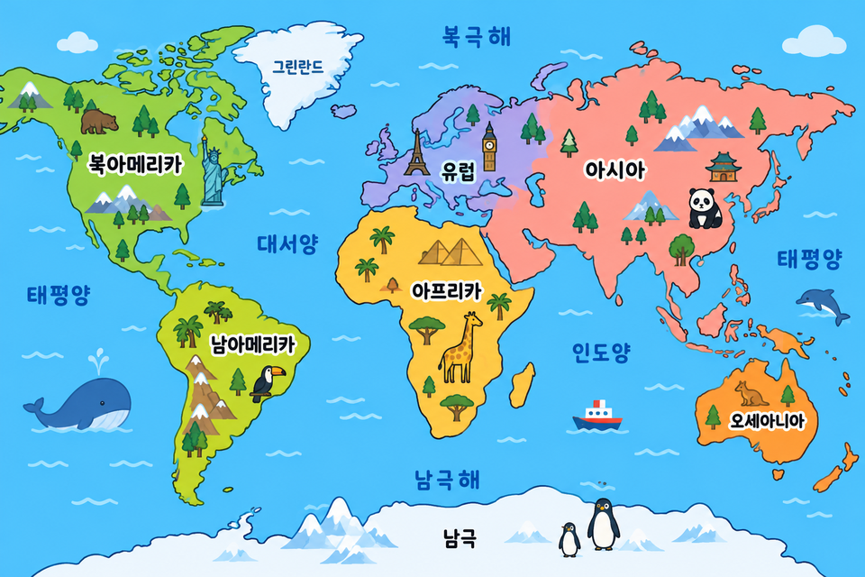 | ||
【활동1】 조사하기 【활동2】 자료 만들기 【활동3】 발표하기 |
평가 계획 | 평가내용 | 척도 | 채점 기준 | 평가 방법 |
|---|---|---|---|---|
세계의 지형 경관과 생활 모습을 조사하여 발표할 수 있는가? | 매우 잘함 | 세계 여러 지역의 지형 경관과 생활 모습을 정확하고 구체적으로 조사하고, 두 요소의 관계를 이해하여 발표 자료로 체계적으로 정리하고 자신 있게 발표할 수 있다. | 관찰법 | |
잘함 | 세계 여러 지역의 지형 경관과 생활 모습을 조사하고, 조사한 내용을 발표 자료로 정리하여 알기 쉽게 발표할 수 있다. | |||
보통 | 교사나 친구의 도움을 받아 세계 여러 지역의 지형 경관과 생활 모습을 조사하고, 주요 내용을 간단한 발표 자료로 만들어 발표할 수 있다. | |||
이주배경학생 평가 시 유의점 | 이주배경학생이 어려운 어휘나 맥락에 대한 이해 부족이 평가에 불리하게 작용하지 않도록 시각 자료와 어휘 설명을 제공하고, 언어 표현의 정확성보다 지형 경관과 생활 모습에 대한 이해도 및 조사·발표 과정의 참여도를 중심으로 평가한다. | |||
1. 조사 내용 정리하기
☐ 산지 지형 ☐ 하천 지형 ☐ 해안 지형
내가 선택한 장소
지역 사람들의
생활 모습
직업, 옷, 음식, 집, 이동 수단 등 어떤 점이 다른지 자세히 써
보세요.
소개하고 싶은 내용
2. 내가 가보고 싶은 특별한 세계 여행지 정하기
세계 여행지 이유
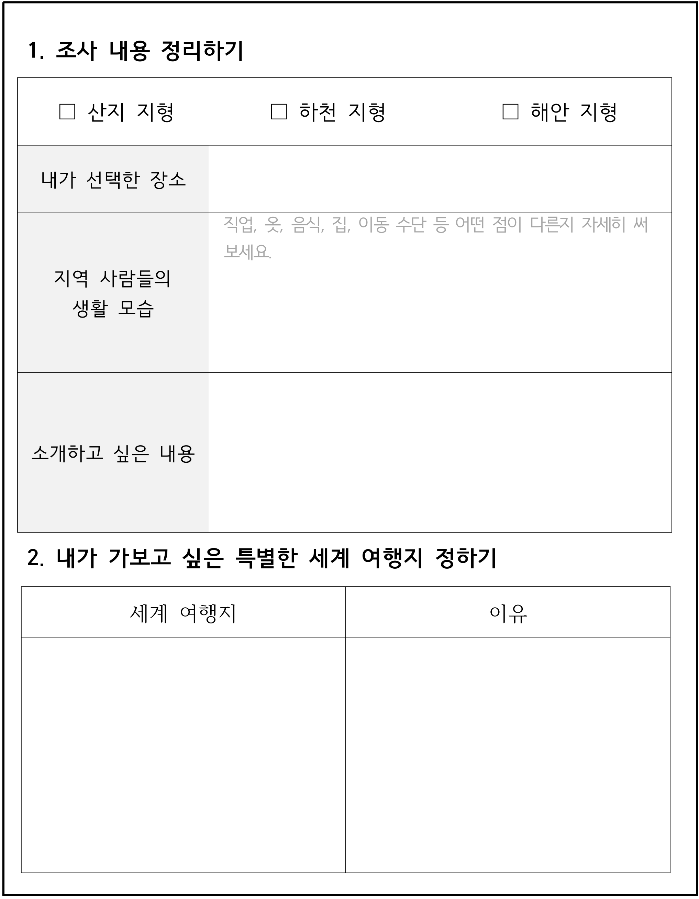
융합과목 | 사회, 미술 | 대 상 | 6학년 | 프로젝트 단계 | et (준비하기) | 지도교사 | |||||
|---|---|---|---|---|---|---|---|---|---|---|---|
프로젝트 | 우리만의 특별한 세계여행 설계하기(2/6) | ||||||||||
성취기준 | [6사10-01] 세계의 다양한 기후를 알아보고 기후 환경과 인간 생활 간의 관계를 탐구한다. | ||||||||||
학습목표 | 기후에 따른 사람들의 다양한 생활 모습을 조사할 수 있다. | ||||||||||
수업전략 | 수업모형 | 문제해결 학습 모형 | 교과 역량 | 문제해결 역량 | |||||||
다문화 주도성 | | | |||||||||
☑ | ☑ | ☑ | ☑ | ||||||||
단계 (시간) | 학습요소 | 교수·학습 활동 | 자료(▶) 및 유의점(☞) |
|---|---|---|---|
문제 확인하기 (5′) | 동기유발 | ▣ 학습동기 유발 ◦ 다양한 축제의 영상 살펴보기 ∙ 동영상을 살펴봅시다. 공통점이 무엇인가요? | ▶ 동영상 |
공부할 문제 파악 | ▣ 공부할 문제 확인 ♣ 기후에 따른 사람들의 다양한 생활 모습을 조사해 봅시다. | ||
문제해결방법 탐색하기 (10′) | 적절한 주제 정하기 | ▣ 【활동1】 주제 정하기 ◦ 기후와 관련된 주제 정하기 ∙ 기후에 따른 사람들의 다양한 생활 모습을 조사하기에 적절한 주제를 생각하여 정해 봅시다. | ▶ 활동지 ☞ 다양한 생각을 수용하도록 한다. |
문제 해결하기 (20‘) | 조사하기 | ▣ 【활동2】 조사하기 ◦ 기후에 따른 다양한 생활 모습 조사하기 ∙ 각자 정한 지역의 생활 모습을 인터넷으로 조사해 봅시다. | ▶ 태블릿, 활동지 ☞ 지역이 겹치지 않도록 대륙별로 나눈다. |
여행갈 때 필요한 물건 정하기 | ▣ 【활동3】 여행 가방 꾸리기 ◦ 조사한 지역으로 여행을 갈 때 가져가야 할 물건을 나타내기 ∙ 여행 가방을 꾸릴 때 가져가야 할 물건을 글과 그림으로 나타내어 봅시다. | ▶ 활동지 ☞ 수용적인 분위기에서 발표할 수 있도록 지도한다. | |
평가 하기 (5′) | 학습내용 정리하기 | ▣ 학습내용 정리 ◦ 배운 내용과 느낀 점 이야기하기 ∙ 이번 시간에 새롭게 알게 된 점이나 느낀 점을 말해 봅시다. | |
▣ 차시 예고 ♣ 세계 여러 나라의 건축물을 알아봅시다. |
일 시 | 대 상 | 6학년 3반 | 교과서 | 미술 41쪽(1/6) | 지도교사 | ||||||||||
|---|---|---|---|---|---|---|---|---|---|---|---|---|---|---|---|
프로젝트 | 우리만의 특별한 세계여행 설계하기 (3/6) | xplore | |||||||||||||
본시 성취기준 | [6미01-02] 자신이나 주변 환경에서 찾은 감각적 특징, 느낌, 생각 등을 관련지어 나타낼 수 있다. | 본시 관련교과 | 미술, 사회 | ||||||||||||
학습목표 | 여러 나라의 건축물을 살펴보고 특징을 조사할 수 있다. | ||||||||||||||
수업 모형 | 귀납적 사고법 | 교과 역량 | 심미적 감성 역량 | ||||||||||||
수업전략 | 수업 의도 | - 유명한 건축물은 그 자체로 많은 사람들이 찾는 훌륭한 관광상품이 된다. 평소 가고 싶었던 곳이나 관심 있었던 세계의 건축물들을 살펴보는 과정에서 나라의 인문·자연환경이 건축물과 밀접한 관계가 있다는 것을 경험하게 한다. - 여러 나라의 건축물을 살펴보는 활동을 통해 자연스럽게 문화적 다양성에 대해 이해하고 존중하는 태도를 가지며 자신만의 특별한 여행을 설계하는 데 적극적으로 활용하도록 한다. | |||||||||||||
다문화 주도성 | | | |||||||||||||
☑ | ☑ | ☑ | ☐ | ||||||||||||
이주배경학생 지도계획 | - 이주배경학생의 모국과 관련된 자료를 준비하여 수업에 대해 관심을 갖고 참여하도록 유도하며 한국어 수준을 사전에 파악하고 필요한 자료를 준비한다. | ||||||||||||||
단계 (시간) | 학습요소 | 교수·학습 활동 | 자료(▶) 및 유의점(☞) |
|---|---|---|---|
문제 인식하기 (5′) | 동기유발 | ▣ 학습동기 유발 ◦ 건축물을 본 경험 나누기 ∙ 직접 본 건축물 중에 인상 깊었던 곳이 있다면 말해봅시다. - 전주 한옥마을의 한옥들이 기억에 남습니다. - 수원 화성이 인상 깊었습니다. ◦ 인도네시아의 건축물 알아맞히기 ∙ 사진을 보고 어느 나라 건축물인지 알아맞혀 봅시다. - 인도네시아의 건축물입니다. - 인도네시아의 이스티크랄 모스크, 보로부두르, 프람바란입니다. | ▶ 프레젠테이션 ☞ 이주배경학생 모국의 건축물을 활용하여 서로의 문화를 이해하게 한다. |
공부할 문제 파악 | ▣ 공부할 문제 확인 ♣ 여러 나라의 건축물을 살펴보고 특징을 조사해 봅시다. | ||
학습활동 안내 | ▣ 학습활동 안내 【활동1】 세계 속 보물찾기 【활동2】 보물 전시회 | ||
관계 탐색 (10′) 개념 발견 (10′) | 여러 나라의 건축물을 조사하고 특징 알아보기 | ▣ 【활동1】 세계 속 보물찾기 ◦ 여러 나라 건축물들의 특징 살펴보기 ∙ 이 건축물의 이름은 무엇일까요? - 콜로세움입니다. ∙ 이탈리아 로마에 있는 콜로세움입니다. 어느 시대에 어떤 용도로 활용된 건축물일까요? - 고대 로마 시대에 서커스와 연극, 검투사 경기를 많은 사람들이 동시에 관람하도록 만든 건축물입니다. ◦ 여러 나라 건축물 중 마음에 드는 건축물 조사하기 ∙ 세계 여러 나라의 건축물들을 찾아보고 마음에 드는 건축물을 선택해 봅시다. ∙ 선택한 건축물을 다른 친구에게 소개할 준비를 해봅시다. | ▶ 스마트패드, 캔바 ☞ 유명한 건축물 외에 낯선 건축물들도 관심을 갖고 살펴보도록 한다. |
단계 (시간) | 학습요소 | 교수·학습 활동 | 자료(▶) 및 유의점(☞) |
|---|---|---|---|
개념 적용 (10′) | 조사한 내용을 정리하여 친구들과 공유하기 | ▣ 【활동2】 보물 전시회 ◦ 조사한 내용을 정리하여 친구들과 공유하기 ∙ 각자 찾아본 건축물에 대해 정리해 패들렛에 업로드 해주세요. ∙ 어떤 건축물에 대해 조사했는지 말해봅시다. - 러시아 모스크바에 있는 성 바실리 성당에 대해 알아보았습니다. 냉대 기후의 특성상 눈이 많이 오기 때문에 지붕에 눈이 쌓이지 않도록 둥근 모양으로 만들어졌습니다. - 프랑스하면 떠오르는 건축물인 에펠탑에 대해 조사해보았습니다. 파리의 대표 건축물인 에펠탑이 지어진 당시에는 많은 사람들의 사랑을 받지 못했다는 점이 새로웠습니다. ∙ 친구들이 업로드한 게시글에 댓글로 감상을 표현해봅시다. | ▶ 스마트패드, 패들렛 ☞ 네티켓을 지키며 친구들의 자료를 감상하도록 한다. |
정리 및 발전 (5′) | 학습내용 정리 | ▣ 학습내용 정리하기 ◦ 배운 내용 정리하기 ∙ 여러 건축물들을 조사해보고 조사 자료를 친구들과 나누어 본 소감을 말해 봅시다. - 혼자 조사하는 것보다 결과를 친구들과 나누니 더욱 다양한 건축물들에 대해 알게 되었습니다. - 건축물의 생김새가 나라의 문화나 환경과 밀접한 관계가 있다는 부분이 인상깊었습니다. | ☞ 여러 나라의 건축물에 대해 지속적으로 관심을 가지도록 유도한다. |
▣ 차시 예고 ♣ 다양한 나라의 음악을 감상해 봅시다. |
판서계획 | 8. 건축으로 떠나는 세계여행 | ||
|---|---|---|---|
♣ 여러 나라의 건축물을 살펴보고 특징을 조사해 봅시다. | * 여러 나라의 건축물의 특징 건축물들은 자연·인문환경과 관련이 많다. | ||
【활동1】 세계 속 보물찾기 【활동2】 보물 전시회 |
평가 계획 | 평가내용 | 척도 | 채점 기준 | 평가 방법 |
|---|---|---|---|---|
자신이나 주변 환경에서 찾은 감각적 특징, 느낌, 생각 등을 관련지어 나타낼 수 있는가? | 매우 잘함 | 세계 여러 나라 건축물을 살펴보고 건축 구조와 관련된 특징을 구체적이고 논리적으로 찾을 수 있다. | 관찰법 | |
잘함 | 세계 여러 나라 건축물을 살펴보고 건축 구조와 관련된 특징을 찾을 수 있다. | |||
보통 | 세계 여러 나라 건축물을 살펴보고 건축 구조와 관련된 특징을 부분적으로 찾을 수 있다. | |||
이주배경학생 평가 시 유의점 | 건축물 조사 자료를 처음부터 한국어로 만들기 어려울 수 있으므로 모국어로 작성 후 번역기를 활용하여 완성할 수 있도록 안내하고 평가한다. | |||
※ 세계 여러 나라의 건축물 중 한 가지를 조사해 봅시다. 건축물 이름
건축물이 있는 나라
건축물에 반영된 문화
건축물의 특징
건축물 그림
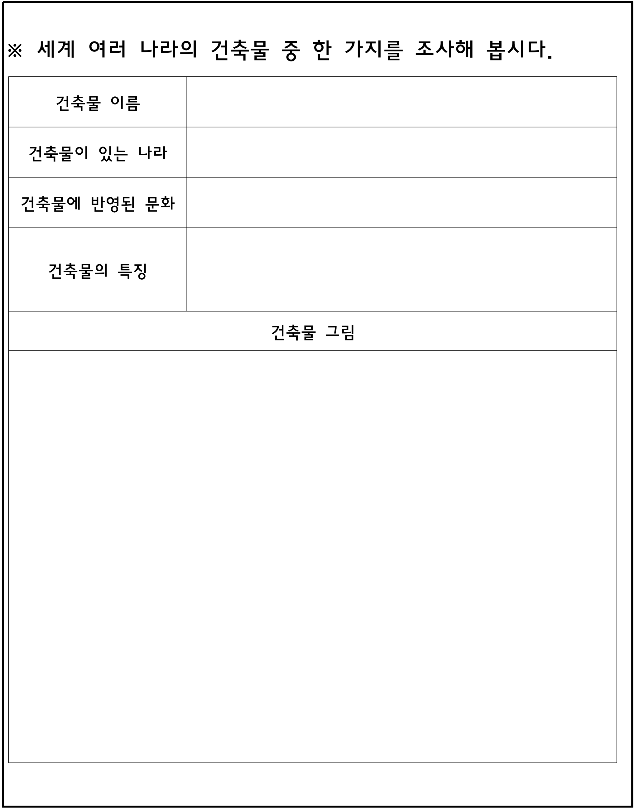
융합과목 | 음악, 사회 | 대 상 | 6학년 | 프로젝트 단계 | nite (협력하기) | 지도교사 | |||||
|---|---|---|---|---|---|---|---|---|---|---|---|
프로젝트 | 우리만의 특별한 세계여행 설계하기(4/6) | ||||||||||
성취기준 | [6음02-02] 다양한 문화권의 음악을 듣고 음악적 특징과 음악의 간단한 구성을 인식한다. | ||||||||||
학습목표 | 다양한 문화권의 음악을 감상하고, 음악의 특징과 느낌을 이야기할 수 있다. | ||||||||||
수업전략 | 수업모형 | 문제해결 학습 모형 | 교과 역량 | 문제해결 역량 | |||||||
다문화 주도성 | | | |||||||||
☑ | ☑ | ☑ | ☑ | ||||||||
단계 (시간) | 학습요소 | 교수·학습 활동 | 자료(▶) 및 유의점(☞) |
|---|---|---|---|
문제 확인하기 (5′) | 동기유발 | ▣ 학습동기 유발 ◦ 세계 지도 살펴보기 ∙ 세계 지도를 살펴보며 학습할 나라의 위치와 문화적 특징을 자유롭게 이야기해 봅시다. | ▶ 지도 |
공부할 문제 파악 | ▣ 공부할 문제 확인 ♣ 다양한 나라의 음악을 감상해 봅시다. | ||
문제해결방법 탐색하기 (10′) | 민속 악기와 문화 살펴보기 | ▣ 【활동1】 살펴보기 ◦ 세계 여러 나라의 민속 악기와 문화를 살펴보기 ∙ 스위스와 케냐, 베트남, 뉴질랜드, 페루, 미국의 민속악기와 문화에 대해 공부해 봅시다. | ▶ 활동지 ☞ 문화권과 민속악기를 관련지어 이해할 수 있도록 지도한다. |
문제 해결하기 (20‘) | 세계 여러 나라의 음악 감상하기 | ▣ 【활동2】 감상하기 ◦ 케냐, 베트남, 페루, 스위스, 미국, 뉴질랜드의 음악을 감상하기 ∙ 음악을 감상해 봅시다. | |
세계 여러 나라의 음악 소개하기 | ▣ 【활동3】 소개하기 ◦ 우리만의 특별한 세계여행에 어울리는 음악을 찾기 ∙ 우리 모둠이 정한 나라의 음악 중 여행지와 어울리는 음악을 찾아 발표해 봅시다. | ||
평가 하기 (5′) | 학습내용 정리하기 | ▣ 학습내용 정리 ◦ 배운 내용과 느낀 점 이야기하기 ∙ 오늘 새롭게 알게 된 점과 느낀 점을 말해 봅시다. | |
▣ 차시 예고 ♣ 우리만의 특별한 세계 여행을 발표해 봅시다. |
일 시 | 대 상 | 6학년 1반 | 교과서 | 수학 92~93(6/11) | 지도교사 | ||||||||||
|---|---|---|---|---|---|---|---|---|---|---|---|---|---|---|---|
프로젝트 | 우리만의 특별한 세계여행 설계하기(5/6) | nite | |||||||||||||
본시 성취기준 | [6수02-04] 비례식을 알고, 그 성질을 이해하며, 이를 활용하여 간단한 비례식을 풀 수 있다. | 본시 관련교과 | 수학, 사회 | ||||||||||||
학습목표 | 비례식의 성질을 이용하여 여행 경비를 계산할 수 있다. | ||||||||||||||
수업 모형 | 문제해결 학습 모형 | 교과 역량 | 문제해결 역량 | ||||||||||||
수업전략 | 수업 의도 | - 여행할 나라의 자연환경과 인문환경에 따라 서로 다른 특징과 즐길 거리가 있음을 이해하고, 이를 통해 학생들이 다양한 삶의 모습에 관심을 가지고, 각 나라의 특성을 새로운 관점에서 바라보도록 한다. - 비례식의 성질을 이용하여 해결할 수 있는 실생활의 여러 가지 문제들을 여행할 나라의 환율이나 여행 인원에 따른 세계여행 경비 계산 문제로 제시하여 학생들이 자연스럽게 다양한 나라의 문화에 적극적인 관심을 가질 수 있도록 한다. | |||||||||||||
다문화 주도성 | | | |||||||||||||
☑ | ☑ | ☑ | ☑ | ||||||||||||
이주배경학생 지도계획 | - 이주배경학생의 한국어 수준을 파악하고 수업에서 활용되는 수학 용어에 대한 사전 지도를 통해 학습활동에 어려움 없이 참여할 수 있도록 돕는다. - 이주배경학생의 모국에 대한 여행 정보를 예시 자료로 활용하여 학생들의 호기심과 친근감을 높인다. | ||||||||||||||
단계 (시간) | 학습요소 | 교수·학습 활동 | 자료(▶) 및 유의점(☞) |
|---|---|---|---|
문제 확인하기 (5′) | 동기유발 | ▣ 학습동기 유발 ◦ 사우디아라비아 여행 상품 소개하기 ∙ 동영상을 보고 가장 체험하고 싶은 것을 이야기해 봅시다. - 알울라 사막에서 별 관측을 해보고 싶습니다. - 헤그라 유적지에 가보고 싶습니다. ∙ 이 여행 상품을 계약한다면 가장 궁금한 점은 무엇인가요? - 여행 상품의 가격입니다. | ▶ 동영상 ☞ 이주배경학생의 모국에 대한 여행 상품 소개를 통해 긍정적이고 허용적인 분위기를 조성한다. |
공부할 문제 파악 | ▣ 공부할 문제 확인 ♣ 비례식의 성질을 이용하여 여행 경비를 계산해 봅시다. | ||
학습활동 안내 | ▣ 학습활동 안내 【활동1】 계산 방법 알아보기 【활동2】 여행 경비 계산하기 | ||
문제 해결 방법 탐색 하기 (10′) | 비례식의 성질을 이용한 여행 경비 계산 방법 익히기 | ▣ 【활동1】 계산 방법 알아보기 ◦ 환율에 따른 경비 계산하기 ∙ 사우디아라비아의 화폐에 대해 알아봅시다. - 사우디아라비아의 화폐는 사우디 리얄입니다. - 1 사우디 리얄은 우리나라 돈으로 약 360원입니다. ∙ 비례식의 성질을 이용하여 4인 기준 ‘알울라 사막 별 관측 투어’의 가격을 우리나라 돈으로 바꾸어 계산해 봅시다. ∙ 원에 대한 사우디 리얄의 비는 무엇입니까? - 1 : 360입니다. ∙ 우리나라 돈으로 바꾸어 계산한 가격을 □원이라 하고 비례식을 세워봅시다. - 1 : 360 = 2600 : □ ∙ 비례식의 성질을 이용하여 □의 값을 구해 봅시다. - □ = 360 × 2600이므로 936000원입니다. | ▶ 프레젠테이션, 활동지, 계산기(스마트패드) ☞ 이주배경학생이 모국의 화폐 단위를 직접 말할 수 있는 기회를 제공하여 다문화 수용성을 높인다. |
단계 (시간) | 학습요소 | 교수·학습 활동 | 자료(▶) 및 유의점(☞) |
|---|---|---|---|
◦ 인원에 따른 경비 계산하기 ∙ 비례식의 성질을 이용하여 4인 기준 경비를 3인 기준으로 바꾸어 봅시다. ∙ 3인 기준 가격을 □원이라 하고 비례식을 세워봅시다. - 4 : 936000 = 3 : □ ∙ 비례식의 성질을 이용하여 계산한 값은 얼마입니까? - 4 × □ = 3 × 936000이므로 □ = 2808000 ÷ 4 = 702000원입니다. | ☞ 비례식의 계산 방법을 아는 것에 중점을 두고, 큰 수의 계산은 계산기를 활용할 수 있도록 한다. | ||
문제 해결하기 (20′) | 비례식의 성질을 이용하여 여행 경비 계산하기 | ▣ 【활동2】 여행 경비 계산하기 ◦ 모둠별 세계여행 주제 정하기 ∙ 모둠에서 구상 중인 여행의 주제를 소개해 봅시다. - ‘프랑스 파리의 맛집 투어(예시)’입니다. 미식의 도시로 유명한 파리의 맛집을 중심으로 여행 코스를 정할 계획입니다. ◦ 비례식의 성질을 활용한 문제 발표하기 ∙ 모둠별로 비례식의 성질을 활용하여 여행 경비를 계산하는 문제를 발표해 봅시다. - 저희 모둠의 첫째 날 저녁 일정은 프랑스의 대표 음식 달팽이 요리 체험입니다. 3인분의 가격은 150000원입니다. 5명이 여행을 할 경우 저녁 식사 비용은 얼마일까요? ∙ 다른 모둠의 문제를 함께 풀어봅시다. - 비례식은 3 : 150000 = 5 : □이므로 250000원입니다. | ▶ 프레젠테이션, 활동지 계산기(스마트패드) ☞ 비례식의 성질을 이용하여 해결할 수 있는 여행 경비 계산 문제는 모둠 별로 사전에 만들어 준비하고, 여행지의 특징이 드러날 수 있는 내용으로 구성하도록 유도한다. |
평가하기 (5′) | 학습내용 정리 | ▣ 학습내용 정리하기 ◦ 배운 내용 정리하기 ∙ 오늘 배운 내용과 문제를 해결한 소감을 말해 봅시다. - 사우디아라비아의 화폐 단위를 새롭게 알게 되었고, 멋진 풍경에 호기심이 생겼습니다. - 여러 나라의 다양한 즐길 거리를 알게 되었고, 다른 모둠의 세계여행 내용이 궁금해졌습니다. | |
▣ 차시 예고 ♣ 특별한 세계여행 계획서를 만들어 발표해 봅시다. |
판서계획 | 4. 비례식과 비례배분 | ||
|---|---|---|---|
♣ 비례식의 성질을 이용하여 여행 경비를 계산해 봅시다. | * 비례식의 성질 비례식에서 내항과 외항의 곱은 같다 | ||
【활동1】 계산 방법 알아보기 【활동2】 여행 경비 계산하기 |
평가 계획 | 평가내용 | 척도 | 채점 기준 | 평가 방법 |
|---|---|---|---|---|
비례식의 성질을 이용하여 여행 경비를 계산할 수 있는가? | 매우 잘함 | 비례식의 성질을 이용하여 여행 경비를 계산하는 여러 가지 문제를 능숙하게 해결할 수 있다. | 관찰법 | |
잘함 | 비례식의 성질을 이용하여 여행 경비를 계산하는 여러 가지 문제를 해결할 수 있다. | |||
보통 | 비례식의 성질을 이용하여 여행 경비를 계산하는 여러 가지 문제를 도움을 받아 해결할 수 있다. | |||
이주배경학생 평가 시 유의점 | 이주배경학생의 한국어 활용 능력에 따라 문제의 이해에 어려움이 있을 수 있으므로 교사나 동료의 도움을 받아 문제의 뜻을 정확히 파악할 수 있도록 하고, 비례식의 성질을 이용하여 식을 세우고 문제를 해결하는 수학적 풀이 과정 중심으로 평가한다. | |||
1. 사우디아라비아 알울라 사막 별 관측 투어의 4인 기준 가격은 2600사우디 리얄입니다. 우리나라 돈으로 바꾸어 계산하면 몇 원인지 구해 봅시다.
- 사우디아라비아의 화폐 단위는 ‘사우디 리얄(SAR)’입니다.
- 1사우디 리얄 = 약 360원 ※ 실제 환율은 매일 달라집니다.
▶ 우리나라 돈으로 바꾸어 계산한 가격을 □원이라 하고 비례식을 세워 보세요.
▶ 비례식의 성질을 이용하여 □의 값을 구해 보세요.
▶ 사우디아라비아 알울라 사막 별 관측 투어의 4인 기준 가격은 몇 원인가요?
2. 사우디아라비아 알울라 사막 별 관측 투어의 4인 기준 가격은 원입니다. 3인 기준 가격은 몇 원인지 구해 봅시다.
▶ 4인 기준 가격을 □원이라 하고 비례식을 세워 보세요.
▶ 비례식의 성질을 이용하여 □의 값을 구해 보세요.
▶ 사우디아라비아 알울라 사막 별 관측 투어의 4인 기준 가격은 몇 원인가요?
3. 다른 모둠 친구들이 만든 문제를 비례식의 성질을 이용하여 해결해 봅시다. 모둠 나라 비례식 정답
1
2
3
4
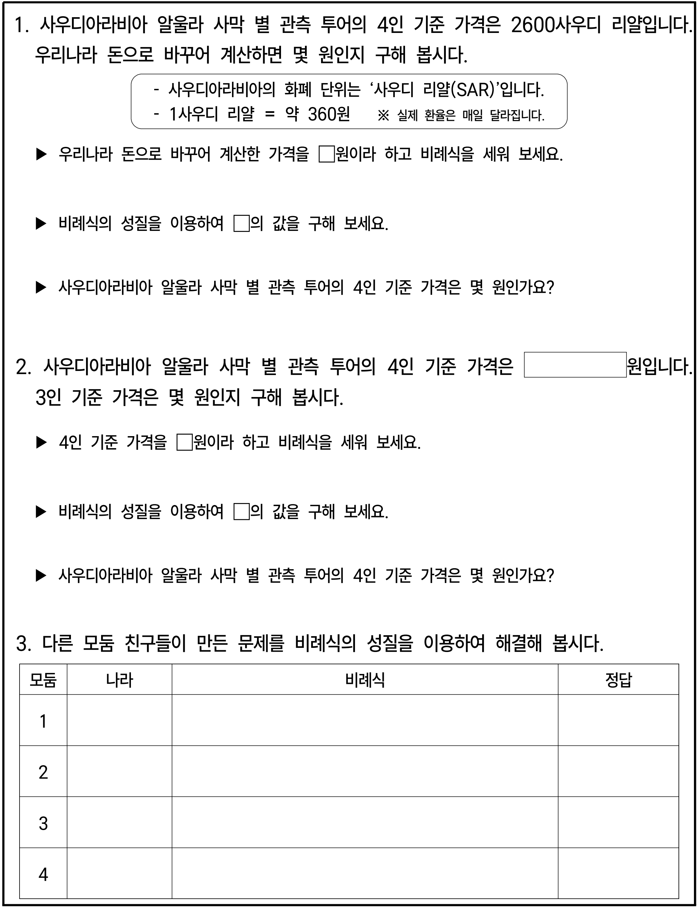
융합과목 | 국어, 창체 | 대 상 | 6학년 | 프로젝트 단계 | ake (표현하기) | 지도교사 | |||||
|---|---|---|---|---|---|---|---|---|---|---|---|
프로젝트 | 우리만의 특별한 세계여행 설계하기(6/6) | ||||||||||
성취기준 | [6국01-05] 자료를 선별하여 핵심 정보를 중심으로 내용을 구성하고 매체를 활용하여 발표한다. | ||||||||||
학습목표 | 우리만의 특별한 세계여행 자료를 만들고 발표할 수 있다. | ||||||||||
수업전략 | 수업모형 | 문제해결 학습 모형 | 교과 역량 | 문제해결 역량 | |||||||
다문화 주도성 | | | |||||||||
☑ | ☑ | ☐ | ☑ | ||||||||
단계 (시간) | 학습요소 | 교수·학습 활동 | 자료(▶) 및 유의점(☞) |
|---|---|---|---|
문제 확인하기 (5′) | 동기유발 | ▣ 학습동기 유발 ◦ 여러 가지 여행 광고 살펴보기 ∙ 여러 가지 여행 광고를 살펴봅시다. | ▶ 프레젠테이션 |
공부할 문제 파악 | ▣ 공부할 문제 확인 ♣ 우리만의 특별한 세계여행 자료를 만들고 발표해 봅시다. | ||
문제해결방법 탐색하기 (10′) | 유의점 알아보기 | ▣ 【활동1】 유의점 알아보기 ◦ 매체를 활용하여 발표할 때 유의할 점 알아보기 ∙ 매체를 활용하여 발표할 때 주의할 점을 알아봅시다. | ▶ 활동지 ☞ 스스로 유의점을 찾을 수 있도록 지도한다. |
문제 해결하기 (20‘) | 발표하기 | ▣ 【활동2】 발표하기 ◦ 여행 크리에이터가 되어 우리만의 특별한 세계여행에 대해 발표하기 ∙ 우리 모둠 세계여행의 주제를 표현할 수 있는 한 줄 슬로건을 만들어 봅시다. ∙ 우리 모둠의 특별한 세계여행을 발표해 봅시다. | ▶ 프레젠테이션 |
평가 하기 (5′) | 학습내용 정리하기 | ▣ 학습내용 정리 ◦ 배운 내용과 느낀 점 이야기하기 ∙ 프로젝트 수업을 마친 소감을 말해 봅시다. | |
▣ 차시 예고 ♣ 주장과 이유, 근거가 타당한지 평가해 봅시다. |